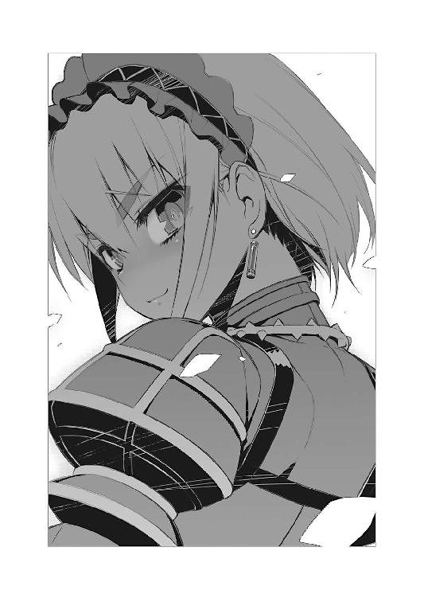

| 棺姫のチャイカIV: 4 (富士見ファンタジア文庫) | |
| 榊 一郎 & なまにくＡＴＫ | |
| 富士見書房 (2012) | |

棺姫のチャイカⅣ
一郎

富士見ファンタジア文庫
本作品の全部または一部を無断で複製、転載、配信、送信したり、ホームページ上に転載することを禁止します。また、本作品の内容を無断で改変、改ざん等を行うことも禁止します。
本作品購入時にご承諾いただいた規約により、有償・無償にかかわらず本作品を第三者に譲渡することはできません。
本作品を示すサムネイルなどのイメージ画像は、再ダウンロード時に予告なく変更される場合があります。
本作品は縦書きでレイアウトされています。
また、ご覧になるリーディングシステムにより、表示の差が認められることがあります。
口絵・本文イラスト なまにくＡＴＫ（ニトロプラス）
口絵・本文デザイン Lightning
序章 始まりの時
THE BEGINNING DAY
濃密な鉄錆の匂いの底で、少女は眼を醒ました。
「............う」
先ず最初に感じたのは不快感だった。
余りにも匂いが濃密なのだ。まるで空気すらもが粘ついているかの様で──ひどく息苦しい。喉や鼻の奥に何かを詰め込まれているかの様にも思える。
「......かはっ......」
少女は短く噎せた。
自分が立ったままだ、という事を自覚したのはその後の事である。
どうやら、立ち尽くした状態で意識を失っていた様だ。希有な事ではあるが──あり得ないという程の事でもないだろう。気を張った状態で疲労が蓄積すれば、人間は歩きながらでも気を失う事がある。
「............？」
ぼんやりと視線を放散するだけだった少女の瞳が、焦点を取り戻す。
先ず瞬きを二度三度と繰り返し......そうしてようやく、彼女の視覚が意識と繋がり始める。曖昧に霞んでいた視界に、諸々のくっきりとした輪郭が戻ってきた。
少女が立っているのは、何処かの建物の中だ。
そう広い場所ではない。
民家──それも恐らくは納屋の中だろう。窓は天井付近に小さなものが幾つか設けられているだけで、普段の生活をする場所という印象ではない。全体的に閉塞感が強いのだ。
壁と天井によって、周囲から切り分けられただけの場所だった。
小さな窓から差し込む月明かりが......少女の周りの闇を薄めている。
淡い闇に慣れ始めた少女の眼が、自分を中心として広がる床上のそれを視認した。
即ち──
「............ッ！」
少女は愕然と身を強張らせた。
腕があった。脚があった。首があった。腹があった。胸があった。
ただし──全て少女の回りでばらばらに散らばっていた。
一人分のものではない。二人でも三人でもこの惨状を作るには足りないだろう。恐らくは五人以上の人間を解体しなければこの状況を作り出すのは不可能だ。
しかもこれは単に『殺害』の現場という様相ではない。怒りや恨みといった感情の痕跡がまるで見えない。争った跡も無い。ただぶつ切りにしているだけの──ひたすら一方的な作業。
ここで行われたのは『殺戮』だった。
しかもよく見れば──散らばった遺体の中には、短剣を握っている腕や、防具を着けている脚もある。人体に加えて、防具の残骸もそこかしこに散在している。
つまりは武装した人間を少なくとも五人......恐らくは反撃も許さぬ様な一瞬で殺してのけた者が、この場に居たという事になる。
一体──誰が？
問いたくても答えられる者は居ない。見渡す限り──部屋の中で人間としての形状を五体満足に留めているのは少女だけだった。
「............私............私は............」
譫言の様に言葉を零しながら──少女はふらりと歩き出した。
何処に向かおうという意識があった訳ではない。この場から逃げ出そうという気持ちすら無かった。あまりに度を超えた惨状を見せつけられた為なのか──それとも未だ意識が覚醒しきっていないのか、恐怖や不安の感情は麻痺したままだ。
少女は、ただ、そこに立っているだけの事に──無為に立ち尽くしている事そのものに耐えられなくなっただけだ。
ふらふらと歩き出して──数歩。そこで遺体の一つに躓いて倒れそうになった少女は、殆ど無意識の内に片手を伸ばして身体を支えていた。
単に壁というには、あまりに冷たく滑らかな感触が、掌の上に広がる。
少女は自らが手をついた先を振り返った。
「......あ......」
それは──鏡だった。
どうして、こんな物置然とした場所に鏡があるのかは分からない。そもそも此処が何処なのかすら、少女には判然としなかった。記憶がひどく混濁したままで、何一つはっきりとした事が分からないのである。
斜めに一線──亀裂が入っているが、鏡として用いるには何ら問題がない。
それは薄闇の中でも、殊更にくっきりと、正面に立つそれを映していた。
即ち......少女の姿を。
「......私......は」
長く癖の無い艶やかな銀髪。
未だ幼い丸みの残る白い貌。
宝玉の様に円らな紫の双眸。
そして──それらをべっとりと汚す、どす黒い血。
身体の何処にも痛みや怠さが無い事を思えば、それは返り血なのだろう。不気味な斑模様を少女の上に描き出す液体は、恐らく、足下に散らばる者達の中を流れ、その生命を支えていた筈のものだ。
「......私は............」
「眼が醒めたかね」
唐突な呼び掛けに──しかし少女は、咄嗟に反応出来なかった。
それが自分の漏らした声でないと理解するのに、しばらくの時間を要したからだ。それから何度か瞬きをして......ようやく彼女はゆっくりと己の背後を振り返った。
そこには、一人の少年が立っていた。
いつの間に？ ──そう問えるだけの余裕が少女には無い。
金髪、碧眼で、良く整った顔立ちの......だが、ただそれだけの、特徴に乏しい容貌が、淡い微笑を浮かべ、ぼんやりと薄闇の中に浮かんでいる。あるいは黒い衣装でも着ているのだろうか。まるでよく出来た仮面がそこに置いてあるかの様だった。
「............」
少女は眼を細めて少年を見つめる。
最初......少女は『それ』を人間だと認識出来なかった。
人間の顔には大抵、その者が生きてきた諸々が、うっすらとでも刻まれていく。双子ですら環境が違えば顔つきも変わる。個性とは生まれ持った資質に加えて、そうした経験が絡み合って造り上げられていくものだ。
なのに、その少年にはまるで何も窺えない。透けて見えるものが何も無い。
空っぽだ。ただ少年であるという事以外には何も──無い。
それは人の形をしているだけの何かだ。
まさしく人形である。
「............」
何者か。いや。何物か。
少女はしかしそう問う前に──先程から脳裏に浮かび続けている疑問を優先した。
「......私は......誰............？」
自分は一体誰なのか？
名前は？ 素性は？ ──まずはそこから始めねば、どうにもならない。
そもそも、今の少女には、何かものを考える際の『芯』が──自分というものに対する確定的な理解が無い。だから意識は無意味に空回りするだけで、何も考えをまとめられないのだ。恐ろしいとか、哀しいとか、寂しいとか、そういう気持ちすらも、ぼんやりと揺らいで、指の間から抜け落ちていくだけだった。
「生憎と私は、それに答える権限が無い」
しかし──あっさりと少年は回答を拒んだ。
柔らかな微笑を浮かべているが、やはりそれに付随するべき中身は無い。社交辞令と言うのも愚かしい程に──全く形だけの表情だった。
「だが安心するがいい」
少年はそんな事を言ってくる。
「それは時間が経てば自ずと判るだろう」
「............」
少女は無言──どう応じて良いのかも分からないのである。
そもそも少年は何も答えていないに等しい。
「先ず『棺』が要るな」
代わりに少年はそんな事を告げてきた。
「『棺』......？」
それは、この足下に散らばる死体達の為のものか。
それとも──
「死者を納める為の筺」
少年は淡々とした口調で言った。
「それが──君たる者の象徴であると同時に、君の存在そのもの、だからね」
「............？」
少女は意味が判らずに眉を顰める。
だが少年はやはり微笑を浮かべるだけで、それ以上は何も喋ってこない。どうやら彼の『権限』とやらで許される説明はこれで終わりの様だった。
そして............
「............」
どれ位──そうやって向かい合っていただろうか。
少女は少年に興味を失い、再び歩き出した。
自分が誰かも判らないのに──他人に興味など持てる筈も無い。
ふらりふらりと頼りない足取りで、散らばる死体をその場に遺して......銀髪の少女は独り、宵闇の中に彷徨い出ていった。
第一章 追う者と追われる者と
THE CHASERS
「......『英雄』？」
男達は眉を顰めてそう問い返した。
大通りから一本外れた、路地裏での事である。
街の細かな事情に通じた住人達、はあまり近寄らない処──いわゆる『柄の良くない場所』の一つだった。何処の街にもこうした場所は存在する。誰が定めた訳でもないのに破落戸や外れ者の類が吹き溜まる──そういう場所が。
だが余所者にそんな事は分からない。明るい昼間であれば尚更だ。
全体的に薄汚れていて、人通りが少ない。比較的、背丈の高い建物と建物の谷間になっている為、距離としては大通りに近いものの、視線が通りにくい。声さえ漏れなければ何をやっているか分からない。柵も扉も無いが、此処は他から隔絶された場所だった。
「英雄ってな......あの英雄か？」
「戦場とかで手柄立てたりする様な？」
男達は六人組だった。
いずれも年齢は三十代前後。あまり真っ当な生活を送っている様には思えない姿だ。
着ているものはばらばらで、軍服下がりのものもあれば、野良着もあり、大きすぎたり小さすぎたりと、明らかに着ている者の体格と合っていないものも多く、上着とズボンが不釣り合いだったりして──ただ、どれもこれもが、着古した様に薄汚れている点だけが似通っていた。
「うい」
問い返された少女はこっくりと頷いた。
繊細な美しさを備えた少女である。
銀髪。紫瞳。そして肌は雪の様に白い。
小柄で細身な事もあるが、全体的にその色彩のせいか──ひどく華奢で儚げな印象を伴う容姿であった。決して病的な雰囲気ではないのだが、硝子細工の如く、乱暴に扱えばあっさり壊れて取り返しがつかなくなるかの様な......そんな印象を見る者に与えるのだ。
ただし......
「捜す。『英雄』。そういう人」
その姿は、ある意味で男達よりも遥かに奇妙だった。
衣装そのものは特におかしな点は無い。白と黒を基調として装飾性を加味したその服は、可憐な少女によく似合っている。
だが......だからこそソレがやたらに異物として目立つ。
少女が背中に背負っているでかい箱が。
いや。箱ではない。
黒く塗られ、少女自身が中に入れそうな程の大きさのそれは──棺だった。
死者を納めて葬る為の『器』。
およそ墓場や葬儀場以外では見る事の無い代物である。少なくともこれを背負って持ち歩くという人間を、男達は今まで見た事が無い。葬儀屋ですら、これを剥き出しのまま運んだりはしない。普通は馬車か機車の中に積み込む。
いずれにせよ奇妙で──不吉な姿だ。
だが元より常識にも道徳にも乏しい男達の頭は、すぐに感じた違和感を脇に除けた。本能の警告は別の本能の欲求によって押し潰されていた。
「心当たり。教授。お願い」
男達に向けて少女はそう言った。
何処か片言の──言葉を覚え始めた子供の様に、長い文節にならないぶつ切りの喋り方がまた、ひどく幼い雰囲気を醸し出す。実際には十代半ばか、あるいは後半といった容姿なのだろうが。
こういう少女に対して、男達が示す反応は大抵、両極端に分かれる。
庇護欲による親切か。
嗜虐心による狼藉か。
男達は──後者だった。
「............」
男達は言葉を交わすまでもなく、互いの思惑を視線で確認し合うと、一様に下卑た笑いを浮かべて少女に向き直った。とりあえず彼女が背負っている棺桶については気にしない事にしたらしい。
「ああ。英雄。英雄ねえ。知ってるよ」
「よく知ってるぜ。ああ。大親友って奴だな、俺達」
「そうそう。英雄を捜してるってんなら、俺達に声を掛けるのが一番さ」
「あんた幸運だぜ？」
男達は口々にそう言った。
あからさまにその場で取り繕っているというか、胡散臭い物言いなのだが──
「！ ──要請。案内。もしくは教授」
少女はぱっと顔を輝かせてそう言った。
どうやら男達の言葉を微塵も疑っていないらしい。世間知らずというよりも、それだけ一生懸命、その『英雄』に相当する者を捜していたという事なのかもしれない。
「いいぜぇ、お嬢ちゃん」
「俺達についてきな」
男達は馴れ馴れしく少女の肩に手を回して、彼女を導いていく。
路地裏の更に奥の方へと──更に大通りから離れた、昼なお暗い辺りへと。
隙を見て口に猿轡を噛ませてしまえば、後はどうとでも料理出来る。手近な建物の中に連れ込んでから、裸に剥いて『品定め』──場合によっては『味見』してから、適当な相手を見繕って、持ち物も、少女自身も、売り払えば良い。
銀髪に紫瞳という珍しい組み合わせで、しかも器量好しの少女となれば、それなりに高い値がつく筈だ。男達の表情は諸々の期待に緩んでいた。
そして──
「俺も案内して貰おうか」
男達の背中に声が掛かった。
「......あ？」
男達は顔をしかめて振り返る。
割り込んできた声に対する不機嫌さが、どす黒い威圧感となって滲んでいる。気の弱い者ならば『あ。やっぱりいいです』と回れ右して立ち去りかねないが──
「その子は俺の連れだ。案内するなら俺も一緒に頼む」
声の主に全く臆した様子は無い。
「トール？」
きょとんとした表情で言う少女。
路地の入り口に立っているのは、少年──いや青年だった。
年の頃ならば二十歳前後だろうか。
黒髪黒瞳で中肉中背の若者である。
黒い外套を羽織り、その下に着ている衣装も黒を基調としたものだ。
ただし黒ずくめによる胡散臭さがあまり漂ってこないのは、若者の立ち方によるのだろう。綺麗に背筋の伸びた──身体の中央に一本『芯』が通った姿勢である。舞踊や武術に通じた者にはこういう立ち方をする者が多い。
無論そんな細かい事まで男達には判らない。
彼等が注目したのは、若者の顔立ちだ。
偏り無く整ってはいるが......派手さの無い容貌である。特筆する様な点が無いとも言えるだろう。つまり殊更に厳つい訳でもなければ、頬や額に特徴的な傷痕がある訳でもない。言ってみれば平凡な顔立ちだった。
むしろ、どちらかといえば優男寄りとも言える。
だから──男達は、与し易し、と舐めてかかった。
「............」
再び顔を見合わせる男達。
やはり言葉を交わす様な事は無く、その内の二人が──特に大柄で力自慢の二人だ──他から離れて若者の前に立った。
「なんだお前は？」
「言ったろう。その子の連れだよ」
頭一つ分、自分より大きな相手二人を前にして、しかし若者は怯む様子も無く、むしろ面倒臭そうに言った。容姿とは裏腹にひどく物憂げというか、若者らしい、覇気を感じられない物言いである。口調や表情はむしろ年寄りのそれに近い。
「そうかい。だが今からお嬢ちゃんの連れは俺等だ」
大柄な男はにやにやと笑いながら言った。
「お前はお役御免だ」
「へっへっへっへ......」
少女の傍に残った四人の男達も掠れた声で笑う。
嘲りをたっぷり含んだ声であり──そして表情だった。
「そういう訳にもいかないんだが」
若者は人差し指で頬を掻きながら言った。
「お呼びでねえっつってんだよ」
「消えろ。若造が」
大柄な男達二人が若者を見下ろしながら、やや口調を強めて言う。自分が置かれている状況が分かっていない──男達は若者について、そんな風に判断していた。
若者には珍しくない事だ。
人生経験に乏しいから──見知った世界が狭いから『上には上がいる』という単純な道理が判らない。少し身体を鍛えただけで、あるいは武器を一つ手にしただけで、自分が負けることなどない最強の存在になったかの様に錯覚する。それだけならば未だ罪が無いが──、そのまま本来ならば全力で遁走し、あるいは地に伏して命乞いをする様な場面ですらも、意地を張って強がって見せる。
男達はそういう馬鹿を何人も見て来た。
「ああ、ついでだ。お前も持ち物全部、置いてけや」
少女の傍に居る一人が言った。
同時に大柄な男の片方が、彼の横を回り込み、退路を塞ぐ様にして背後に移動。
その様子を横目で見ながら──殊更に身構えるでもなく若者は言った。
「......ものは相談なんだが」
若者は、ふと思いついたかの様な口調で言った。
「お互い見なかった事にして、別れるというのはどうだ？」
「......あ？」
男達は一瞬、眉を顰め──そして次の瞬間、爆笑した。
「ひゃっはっは！ 馬鹿か坊主、自分が何言ってんのか判ってんのか？」
「判ってる積もりだけどな」
そう言って若者は握り拳から人差し指をたてて──これを口にくわえる。
「ここはな、坊主。『判りました、全部差し上げますから、僕だけは見逃してください』って言う以外はねえんだよ！」
「なるほど」
口にくわえていた自分の人差し指を抜いて、頷く若者。
それから彼はまた自分の人差し指を口にくわえた。どうも自分の指を何度も舐めて──しゃぶっている様なのだが、これは一体何の意味があるのか。
「なんだおめえ？」
男達は笑いながら言った。
「こいつ何、指しゃぶってんだ」
「おふくろさんのおっぱいが恋しいんじゃねえのか？」
「おい見ろよ──あいつ漏らしてやがるぜ!?」
男達の一人が指差す先。
そこには──若者の足下には、何かに濡れた様な染みが広がっていた。
男達はこれを、若者が恐怖の余り失禁したと考えたらしい。
「精一杯強がってみても、そのザマかよ？」
げらげらと笑い声が飛び交う中で、若者はしばらく、眼を半眼にして立っていたが──
「......こんなもんか」
彼は頷いて言った。
「『判りました、全部差し上げますから、命だけはお助けを』」
「ひゃはっは！ そうそう、そういえば──」
「──そう言ったら、見逃してやってもいいぞ。ゴロツキ共」
男達の笑い声がぴたりと止んだ。
この期に及んでも、若者が状況を理解していないどころか、かなり本気で自分達に楯突く積もりだと判ったからだろう。若者を睨む男達の顔には揃って怒りの色がある。
「──坊主」
若者の正面に居る大柄な男が低い声で言った。
「笑えねえぜ、その冗談はよ」
「ああ。笑う必要はねえよ」
若者はぞんざいな口調で返す。
「冗談でも何でもねえからな」
「............ぶっちめろ！」
叫びを皮切りに、大柄な男二人が動いた。
彼等は大きく息を吸い込むと、怒声を上げ、若者へと向けて殴り掛か──
「あ......？」
──りはしなかった。
というか出来なかった。まるで糸の切れた操り人形の如く、二人揃ってその場にへたり込んでしまったからである。
「あ......あれ......？」
男達は不思議そうな表情を浮かべて地に転がっている。
「ど、どうした、てめえら......!?」
少女の傍に居る四人が慌てて声を掛ける。
「わ、わかんのえ......」
若者の背後に居た一人が、妙な表情を浮かべて──笑顔とも泣き顔ともつかない感じで頬や瞼を痙攣させながら言った。立って歩くどころか、既に呂律まで怪しい。
「なんらか......からら......うろららいろ......おやらら......なるか......おれ......」
「てめえええ!?」
更に二人、少女の傍に居た二人が若者に向けて走り寄る。
彼等は既に懐からそれぞれ刃物を抜いていた。頑丈な造りの軍用短剣である。五年前まで永く続く戦争が行われていたせいで、こうした武器は大量生産されており......質を問わねば誰でも簡単に手に入る。手入れが悪いのか、男達の短剣には錆が浮いていたが。
勿論、錆びていようが何だろうが刃物は刃物。
人を刺し殺すには充分だ。
ただ──それも相手に触れなければ何の意味も無い。
「............」
斬り付けてくる二本の短剣を、若者は僅かな体捌きでかわしていた。
動きとしてはほんの少し身を反らしたに過ぎない。だが凶器の切っ先は空を切り、姿勢を崩した男達の肩や背に若者が軽く触れると、彼等はそのまま地面の上に転倒した。
「馬鹿、何やって──」
残る二人が叫んで......そして愕然と声を詰まらせた。
「え......あっ......!?」
倒れた二人が起き上がってこない。
先に崩れた大柄な二人と同様に、痙攣しながら地面でのたうっている。
若者は......平然とその場に立ったままだ。声を掛けてきたその時から、一歩も動いていないのである。なのに彼に襲いかかった四人は、地に伏せている。殴られた訳でも蹴られた訳でもないのに──
「てめえ......一体......何を......」
少女の傍に残った二人が問う声には怯えの色があった。
無理も無い──彼等には何が起こったのかすら分からないのだろう。
「最初に身体がでかい奴が来てくれて助かった」
若者はつまらなさそうに足下の男達を見下ろしながら言った。
「身体がでかい分、血の巡りに時間が掛かるからな。効きが遅い」
「......まさか......」
残った二人の男達は表情を引き攣らせて言った。
「......毒......!?」
「ご明察。ちと遅いけどな」
若者はつまらなさそうな口調でそう応じた。
そう。彼の足下を濡らしていたのは彼が漏らした小便などでは、勿論なかった。
彼がそっと撒いた揮発性の薬だ。
指をしゃぶっていたのは、温かい唾液で湿らせた指先で、この路地の中の空気の動きを──風の向きを確かめる為のものだろう。自分自身は一歩も動かなかったのも同様──揮発した薬が充満する場所に男達を誘い込む為だった。
本人は予め解毒剤を飲んでいたか、さもなくば、呼吸を最小限にした上で、薬を直接吸わない様に気を付けていたに違いない。撒いた量は大した事は無いのか、路地全体に広がる様子は無い様だった。
「ひ......卑怯......」
少女の傍に残った男達は喘ぐ様に言った。
「ああ？ 卑怯もへったくれもあるかよ」
若者は眼を細めて言った。
「一人相手に二人で掛かるのは卑怯じゃねえのか？」
もっともな話である。
「ぐぬ......ぬ......!!」
男達は、先の者達と同様に懐から軍用短剣を取り出した。
少女を人質に取ろうと彼等はこれを──
「──ッ!?」
甲高い金属音。
衝撃の感触を掌の上に残して、右側の男の軍用短剣が吹っ飛んでいた。
若者が抜く手も見せずに投げた投擲用の手裏剣が直撃したのである。
「うあっ!?」
「──さて」
凍り付いた様に動きを止めるもう一人を眺めながら若者は問うた。
「どっちが早いと思う？」
「............」
若者の投げた手裏剣が相手の急所に突き刺さるのと。
男達が凶器を使って少女の急所に突き付けるのと。
ようやく男達は、悟った。舐めてかかるべきではなかった。最初から全員で──殺す積もりで一斉に襲いかかっていれば、あるいはどうにかなったかもしれないが、それを悔いてももう遅い。最初から手裏剣を使わなかったのも──最初に薬を使って見せたのも、男達の油断を誘う手管の一つだったのだろう。
明らかに男達とは暴力への精通ぶりが異なる。
無駄に力を振りかざさずに、種類を選び、必要最低限の行使で目的を達する──素人の業ではない。人生経験を欠いた愚かな若造どころか......暴力というものの使い方を徹底的に叩き込まれた玄人だった。
「......う......う......」
じりじりと男達は後退する。
少女はその場に残したまま、そして彼等自身は若者の方を向いたまま、だ。恐らく踵を返して逃げる機を測っているのだろう。迂闊に背中を向けると手裏剣が飛んでくる──そう考えているのだ。
そこへ──
「──待ってッ！」
何の脈絡も無く、何やら慌てた様子で割り込んで来る甲高い声。
それは何故か、逃げようとしていた男達の頭上──真上から降ってきた。
「待って待って待って待ってちょっと待って!! ね!?」
「............」
若者が頭上を振り仰ぎ──視線が男達から外れる。
「──ッ！」
これぞ好機とばかりに男達は駆け出した。薄情にも仲間をその場に残したままだ。常識や道徳が欠落しているお陰で、こういう時の割り切りは非常に早い。彼等は文字通り脱兎の如く全力で路地から逃げ出──
「ちょっと待ってって言ってるでしょ！」
「げぶおっ!?」
──す事は出来なかった。
ずん......と腹に響く様な重低音。
男達は次の瞬間──地面に這わされていた。声を追う様にして背後頭上から降ってきた重量物が彼等を直撃、そのまんま地面に叩き倒したのである。
「殺し合い？ 殺し合いよね!?」
何故か問う声はやたらに嬉しそうだった。
男達を自らの下に敷きながら、青年に向けて尋ねるのは......
「......ふぇ......い......るあ......？」
先に毒でやられた男達が譫言の様な口調で呟く。
それは──巨大な異形だった。
白銀色の怪物。
体長は尾まで含めれば人間のおよそ十倍。翼を持ち、角を持ち、首は長く、爪は鋭い。その全身は鎧に覆われ、ただでさえ異様なその輪郭を、より威嚇的なものに見せていた。
装鎧竜──識者達からはそう呼ばれるバケモノだった。
魔法を使うとされる特殊な獣を、このフェルビスト大陸においては『棄獣』と呼ぶ。
そしてその棄獣の中でも恐らくは最強、敵として出会えばまさしく絶望そのもの、といわれる存在が装鎧竜である。普通の人間ならばコレが眼の前に現れただけでも腰を抜かすし、気の弱い者なら失禁しかねない。それだけ装鎧竜という生き物は、人間にとって恐るべき存在なのだった。
本来ならば街中では──いや街の外ですら、滅多に出会わない相手だ。
もしこれが一本向こうの大通りならば、それこそ、阿鼻叫喚の大騒ぎになっていた事だろう。それが装鎧竜と気付くかどうかはさておき、こんな怪物がいきなり目の前に出てくれば、大抵の人間が恐慌状態に陥ってしまう。
だが......
「混ぜて混ぜて！」
何故かその声は少女の様に甲高く、無邪気だった。
「何に混ざる気だよ」
若者は心底面倒臭そうに言った。
「殺し合い」
楽しげに言う装鎧竜。
まるで、新しい遊びに加わりたがっている子供の様な口調である。
「してねえよ。薬で一方的に麻痺させただけだ」
「えー？」
装鎧竜がぐうんと長い首を傾げる。
異形の巨体が小鳥の様な仕草を示す様は、奇怪を通り越して喜劇的ですらあった。勿論それを笑う余裕など、地に這う男達には無かったが。
「じゃあ改めてしようよ。殺し合い」
「嫌だ。断じて嫌だ」
若者はきっぱりそう言った。
「えー。なんでよー」
と装鎧竜は不満げである。
まあ牙だらけの長く裂けた顎と、巨大な紅い眼と、鎧めいた鱗のせいで、表情は判る筈もなく──あくまで口調と仕草だけからの判断になってしまうが。
「やろうよー。殺し合いー」
駄々をこねる様にぶんぶんと巨大な拳が上下する。鉄槌を振り回すも同然だ。当たればそれだけで首の骨が──というより全身の骨が折れそうだった。
「どんだけ体格差と重量差あると思ってんだ。お話になんねえよ」
「う............じゃあ、じゃあ、この形態で闘ってあげるから」
その言葉と同時に──風が鳴いた。
急激に生じた真空のせいか、ばたばたと若者の髪と外套の裾が暴れる。
白い霧の様なものが大量に生じ......そして瞬く間にそれは拡散して消えていった。
そして──
「これでどう？」
──後に残ったのは。
「嫌だ」
「なんでよー」
口を尖らせて不満げに問うのは、何処からどう見ても装鎧竜──ではなくて、金髪、色白の小柄な少女だった。
可愛い。実に可愛らしい。
小柄で華奢だが......その一方で弱々しい印象は微塵も無い。
むしろ子供特有の弾けんばかりの活力が──瑞々しさが全身に漲っている。紅い両眼は気の強さを示すかの様にやや吊り気味、その笑顔の口元からは八重歯が覗いており、何処かその姿は、猫や、子供の虎を想わせた。
事前に知識が無ければ、これが装鎧竜の変化した姿なのだと判る者は居まい。変幻自在に自らの肉体を操るのが装鎧竜の魔法だが──それが、ここまで無茶苦茶な代物だと知っている人間は限られていた。
恐らくこの路地にも、少女の姿でやってきて──近くの建物の上から飛び降りながら『変身』したのだろう。そうでもなければこんな怪物、人里に近付いただけで大騒ぎになっている筈だった。
「それはそれで弱い者いじめしてるみてーな気になるんだよ」
「してたじゃん──弱い者いじめ」
と装鎧竜の少女は自分の足下を見て言った。
その白い脚が履いている小さな靴は、今も、逃げようとしていた男達の背中を踏みつけている。さすがに装鎧竜の巨体に乗っかられては耐えられなかったのか──二人は、白眼を剥いて痙攣していた。肋骨位は折れているかもしれない。
「お前ほどじゃねえよ！」
「──トール」
ふと......先程から黙ったままだった銀髪の少女が、若者を呼んだ。
やはりトールというのが彼の名なのだろう。若者は銀髪の少女の方を振り返って問うた。
「おう。無事か？」
「うい。勿論」
銀髪の少女は大きく頷いて見せる。
そして──何故か彼女は表情を曇らせて言った。
「トール。酷い」
「あ？ 何が酷いんだよ」
「親切な人達。情報提供者。無惨」
銀髪の少女は男達を指差してそう評する。
「............」
若者は──しばらく眉を顰めて男達と銀髪の少女を見比べていたが。
「あのな。チャイカ」
「うい」
「お前売り飛ばされる処だったんだぞ。自覚あるか？」
「むい？」
きょとんとした表情で眼を瞬かせる銀髪の少女。
「親切な情報提供者、じゃねえよ！」
地を這う男達を指差して若者は喚いた。
「こんな、あからさまに胡散臭いっつーか、『俺達ゴロツキでーす』って看板背負って歩いている様な連中に、引っかかってんじゃねえよ！ 余計な手間が増える！」
「............」
銀髪の少女は驚いた様に改めて男達を見つめる。
「......驚きの事実」
「驚いてるのはお前だけだ」
そう言って若者は──乱破師トール・アキュラは溜め息をついた。

永い永い戦争があった。
そもそもの戦端を開いた原因が、一体何であったのか──公式な記録はさておきそれを実体験として知っている人間は全て墓の下に去ってしまう程の、長期に渡る戦乱の時代。
誰もが当たり前のものとして戦争を受け止め、日常の一部としてそれを捉えていたこのフェルビスト大陸は──しかし五年前に、そのあり方を変える事となった。
戦争が終わったのである。
一説には全ての戦争の原因とも言われている北の大国、ガズ帝国の滅亡を以て、戦国時代は幕を降ろした。具体的には連合国軍とガズ帝国による大規模な帝都攻防戦の際、ガズ帝国の絶対的支配者が討ち取られた事によって、終わりを告げたのだ。
即ち──〈禁断皇帝〉アルトゥール・ガズが。
結果として、アルトゥール・ガズは『全ての戦乱の原因を作った男』などとも言われているが、これは過剰な評価であろう。戦争自体は数世紀に渡っていたし、各国はそれぞれの思惑で動いていて、一人の人間にその全ての動きを操れる筈など無い。
だが、その一方で──このアルトゥール・ガズという男については今も謎が多い。
元々の素性が謎に包まれている上に、帝国中枢部が徹底した秘密主義であった為、直に皇帝の姿を見た者も限られているという。
結果、三百年以上も生きていただとか、現在の魔法技術の基礎を造り上げた大魔法師なのだとか、それでいて剣術も各国の剣豪や宮廷指南役にも匹敵するものであったとか......むしろ本人が死んだ後で訂正できないが故に、噂に尾ひれがついて怪物じみた印象を造り上げている。
とはいえ──いかに怪物的とはいっても、既にガズ皇帝は死者だ。
まるで、本当に彼が戦争を起こしていたかの様に、世界は、何百年も概念上のものに過ぎなかった『平和』を取り戻し......そして人々の生活様式は変化を余儀なくされた。
だが......生まれた時から戦国時代に生きていた人々の中には、新時代に適応出来ず、諸々の変化から取り残されてしまう者達も少なくはなかった。
トール・アキュラもまたそんな人間の一人だ。
乱破師──正規の騎士や戦士がこなせない、あるいは嫌がる様な、汚れ仕事を引き受ける戦場の便利屋達。乱破師の里アキュラに育ったトールは、しかし戦場に出る事無く、終戦を迎えた。
華々しく国家の威信を賭けて戦う騎士や戦士達と異なり、乱破師達の信条は卑怯常套、卑劣上等......故に『戦争の狗』とも呼ばれ、戦場が無ければむしろ忌まれ疎まれるのが乱破師だ。
アキュラの里は取りつぶされ、トール達は逃散を余儀なくされた。
その後、生きる目標、成すべき事を見失い、トールはほぼ五年間、ただ惰性で生きているだけの生活を送ってきた。
そんな時だ──彼がチャイカ・トラバントに出会ったのは。
彼女はガズ皇帝の遺児であるという。
彼女もまた時代に取り残された者の一人だった。
だがトールと異なるのは、彼女が、目的を持って動いていた事である。
チャイカは父親たるガズ皇帝の遺体──八名の『英雄』達に持ち去られたそれを取り戻し、これを弔う事を目的としていた。それを果たしてようやく、彼女は父の死と、終戦と、自らの国の滅亡を受け入れる事が出来る。彼女の目的はただそれだけだった。
だが......望む望まぬに関わらず『ガズ皇帝の遺児』という肩書きは彼女について回る。
いまだガズ帝国の再興を目論む者も居る以上、その存在はようやく訪れた平和に対する不安要素となる。チャイカは各国から追われる身だった。
しかし──だからこそトールは彼女に興味を持った。
彼女と共にあれば──トールは自分の生きるべき場所、『戦場』を取り戻せるかもしれない。予め喪われた自らの『存在理由』を。
こうしてトールは、そして彼の妹であるアカリは、棺を担ぎ往く姫君チャイカと行動を共にする事となった......
大きな街には大抵......街門のすぐ傍に駐車場がある。
行商人の貨物機車や駅馬車、それに単身旅行者の馬も含め、街から街への移動手段は殆どがこの駐車場に集められる。街中を長距離移動用の機車や馬車で移動するのは基本的に御法度──どうしてもというのならば、街の道路を管轄する役人や自治会に許可を得る必要がある。駐車場はその手の手続きをする場所も兼ねている事が多い。
ソリオルの街もこれは同様だった。
棺を担ぎ往く姫ことチャイカ・トラバントと、その従者であるトール・アキュラ、アカリ・アキュラの三名が乗る機車〈スヴェトラーナ〉号もまたこの駐車場の端に停められていた。街の外に停めれば駐車場代をとられる事は無いが......その場合はいちいち街門を通って街に出入りせねばならない為、一定期間以上の滞在の場合、そちらの通行税の方が高くつく事が多いのだ。
「そもそも一人で出歩くなっつったろ」
トールは〈スヴェトラーナ〉号の御者台に腰掛けてパンをかじりながら言った。
少し遅めの昼食である。干し肉と酢漬けの野菜も、小さな木製の皿に盛られて御者台に置かれている。旅行者にとっては定番の糧食だ。味よりも保存性優先である。
「む......」
顔をしかめるのはトールと並んで御者台に腰掛けている銀髪の少女チャイカであった。
食事を摂っているのは彼女も同じだ。
ただしトールが片手でパンを持って気軽に齧っているのに対し、チャイカは両手で──まるで胡桃を手にしたリスの様に──これを持ち、いちいち、かぶりつく度に何か覚悟を決めるかの様に深呼吸している。
「お前は追われてる身なんだし」
「......うい」
「咄嗟の戦闘とかになったら魔法じゃどうにもならんだろ。いちいち機杖組み立てて、呪文詠唱すんの、相手は待っててくれないだろうし」
「なんでまた一人で出掛けたんだよ？」
「............」
チャイカは顔をしかめたまま少し俯いた。
それからしばらく彼女は黙っていたが──
「......情報。不足。あてもない旅......疲労困憊」
ぽつぽつと口の端からこぼすかの様にチャイカは言った。
「そんなの元々だろうが」
「............」
チャイカはがぶりと──まるで仇にでも食らいつくかの様にパンを齧ると、咀嚼。
これを強引に飲み込んでから続けた。
「私。魔法師。できる──それだけ」
確かにチャイカは魔法以外はてんで駄目──というか全般的にやることなすこと鈍臭い。
料理をさせれば手を切るわ、鍋をひっくり返すわ、破れた布を繕おうとして針を指に刺すわ......更に前述の通り近接戦闘の技能は無いわ、野営するにしても魔法無しでは焚き火一つ熾せないわと──トール達と出会う前は、一体どうやって生きていたのかと不思議になる位に不器用である。
そういう訳で旅の雑事は殆ど、トール達が行っている。
乱破師は戦場の何でも屋だ。大抵の事はトール達がやった方が早いし確実である。
しかし──
「役立たず」
俯いてチャイカはそう付け加えた。
眉間に皺を寄せてトールは問い質す。
「それはつまり──何か？ 普段の自分は役立たずだから、せめて、情報でも集めてこようとか、そういう風に思ったって事か？」
「......うい」
チャイカは恥ずかしげに頬を赤らめる。
「あー............」
トールは天を仰いで嘆息した。
殊勝な心掛け──と本当なら言いたい処だが。
はっきり言ってチャイカの行動は逆効果だ。先程の様に変な連中に引っかかれば、むしろ彼女を助け出す為に余計な手間がかかる。
実利の為には見栄も体裁も無いのが乱破師である。だからこそトールには『申し訳ないからせめて......』などという発想そのものが無い。物事は出来る人間がやるべきであって、出来ない人間は無理にやらない方が誰の為にも良い......とつい考えてしまうのである。
だがチャイカの性格からすれば、こういう行動に出かねないというのは、当然、考えて然るべきだった。気持ちの上でも何かと不器用なのだ、この少女は。
「ええと......あのな」
頬を掻きながらトールは適当な言葉を探す。
何でも屋の乱破師といっても、個々人には得手不得手がどうしてもある。口先で適当な事を言って相手を丸め込む詐術も、時に乱破師に要求される技能だが──トールはあまりこれが得意ではなかった。
「まあ......その。なんだ。気にするな」
「......むい？」
「何つうか......ここしばらく『英雄』の情報が手に入らなくて焦ってんだろ」
「......肯定」
一瞬躊躇してからチャイカはこっくりと頷いた。
トール達の旅は、ここ一ヶ月ばかり行き詰まっていた。
彼等は『八英雄』と呼ばれる者達を──ガズ帝国の皇帝アルトゥール・ガズを討ち果たした八人の特攻隊を探している。
永い戦国期、英雄・豪傑と呼ばれた者は多けれど、やはり最大の英傑とされるのはこの『八英雄』であろう。実際にはガズ帝国そのものは連合国軍の大攻勢によって滅ぼされた訳だが──それでもガズ帝国の絶対的独裁者を倒した意義は大きい。ガズ帝国が戦乱期の元凶とも言われていた為、この武勲を以て、彼等こそが戦国時代に終止符を打ったと言う者も居る位だ。
だが......各国は、この八人の名前を公表していない。
理由はトール達も知らない。恐らくは色々な各国の思惑が絡んでいるのだろうが、いずれも想像の域を出ない。そしてその理由自体はトール達にとってはどうでも良い事だ。
チャイカは、父であるアルトゥール・ガズ皇帝の遺体を弔いたいと考えている。
だがガズ皇帝の遺体は『八英雄』に『戦利品』として持ち去られてしまったという。
だから、取り返そうにも遺体の持ち主が何処の誰なのかも判らないのである。
勿論──世の中には自ら『我こそは〈禁断皇帝殺し〉』と名乗る者も居るが、これが本物であるという保証は無い。戦争が終わって、職を失った魔法師や剣士も多く......彼等の中には、仕官の道を求めて、所謂『箔付け』の為に〈禁断皇帝殺し〉を詐称する者も居るという。
「そもそも今までの方がおかしかったんだ」
「むい？」
「順調過ぎたって事だよ」
トールは苦笑して見せた。
既にトール達は、三つの『遺体』を──分割されたアルトゥール・ガズ皇帝の遺体を手に入れている。一人が一つ『遺体』を持っているとすれば既に残りは後五人、つまり後一つを手に入れれば『遺体』回収の旅は折り返し地点に差し掛かる事になる。
だが......
「そもそもギイの奴に頼ったやり方そのものに問題があるんだ。現に、いきなり音沙汰無くなったしな」
今までトール達はギイと名乗る謎の少年から情報提供を受けて動いていた。
だがこの少年──その正体は本当に分からないままだ。
彼は独自の情報網と、能力を持っているらしく、時折トール達の前にふらりと現れては、『英雄』や『遺体』探しに関しての有益な情報を提供して去っていく。本人曰く『それ以上の事は出来ない』そうだが──トール達に言わせれば情報提供そのものが、ギイ以外には出来ない難事だ。
そのギイが、ここしばらく姿を見せていない。
「奴が......いつまでも味方とは限らないしな」
「むい？」
「まさかあいつが、親切心で俺達に情報くれてた──なんて思ってないよな？」
「............」
トールから視線を逸らすチャイカ。
「いや......あのな。少しは疑えよ」
「むう」
呆れた口調で言われてチャイカは唸る。
「何処をどうやったら、あいつが『親切な人』に見えるんだか」
本当にあのギイだけは得体が知れない。
正直言って......人間かどうかさえ怪しい。
普通の人間ならば、トールはただ相対しただけでも大まかに相手の強さを推し量れる。呼吸や立ち方、ちょっとした仕草にも力量は現れる。超一流の達人ともなればそれさえ押し隠せるというが──
（そういうのとは多分、違うんだよな、アレは）
そもそも人間と、いや、生き物と相対している感じがしない。
まるで人の形をした『現象』を相手にしている様な印象なのだ。
存在感そのものが希薄というか異質というか......強いて言うならば、幻や影に近い。あるいはフレドリカの様に装鎧竜や、何か『別のもの』が人間の振りをしているだけ、と考える事も出来るが......『では何が？』と言われれば、トールにも見当がつかない。フレドリカとはまた異なる印象があるからだ。
「でも。トール......方法。具体案？」
チャイカは首を傾げて言った。
「......まあそれを言われると弱い」
トールは溜め息をついた。
ではギイに頼らずどうやって『英雄』を探すか──となると、やはり地道にあちこちで尋ねて回るしかないのだ。結局の処、効率や巧拙の問題はあっても、出来る事はチャイカがやっていた事と大差は無い。
「とはいえ......ただ『英雄』って聞いてもな」
トールは腕を組んで言った。
「単に『英雄』ってだけなら別に〈皇帝殺し〉でなくても良いわけだしな。先程の連中が本当に『英雄』と知り合いだったとしても、それが八人の特攻隊の一人とは限らない」
永い永い戦国時代、数限りない戦が繰り広げられ、数限りない武勲が打ち立てられ、数限りない英雄・豪傑の類が生まれた。そもそも『英雄』という言葉の意味をどう捉えるかによってその範囲も変わってくる。
「やっぱり名前が分からないとな......いっそアバルト伯の処に戻るのも手か」
トール達が手に入れた三つの『遺体』の持ち主の内、最初の『英雄』──ロベルト・アバルト伯は未だ存命だ。チャイカに公的機関からの追っ手が掛かっていた為、トール達はアバルト伯の居たデルソラントの街を夜逃げ同然に出てきた訳だが......ギイからの情報が得られない今、改めて追っ手をやり過ごし、アバルト伯の処に戻って残りの『英雄』の名を聞き出すべきかもしれない。
「あと五人──か」
遺体が英雄の数だけ分割されたのであれば、回収すべき残りは五つのみだ。
だが......
「──いや。兄様」
ひょいと〈スヴェトラーナ〉号の客室から一人の娘が顔を出す。
黒髪と黒瞳はトールと同じだが......顔立ちそのものはあまり似ていない。
容姿が整っているという点については、こちらもチャイカと比べて遜色ないが、切れ長の双眸や、長い黒髪を後頭部で括っているその姿からは、何処か凜然とした──抜き身の刃物の様な鋭い雰囲気が漂ってくる。
仕草や姿勢に無駄が無いのだ。武器や道具と同じく余計なものを削ぎ落としていった結果として生まれる、機能美......この娘の容姿を評するにはそんな言葉が相応しい。
アカリ・アキュラ。
トールと同じく乱破師の里──アキュラの出である娘だ。一応はトールの妹という事になっているが、元々アキュラにおける家族関係は世間一般のものとは異なっている為、トールとの直接的な血の繋がりは無い。
「そう考えるのは早漏ではないだろうか」
「誰が早漏だよ」
「無論、兄様が」
堂々とアカリは言った。もっとも普段からあまり表情を出す娘ではないので、どんな内容を口にしてもあまり変わらないのだが。
「それを言うなら早計だ！」
「......む？」
アカリは首を傾げる。
「少し違ったろうか？」
「大違いだ。っていうか......お前寝てたんじゃなかったのか？」
トールとアカリは、交替で不寝番に立つ事が多い。ソリオルの街に着く前日は不寝番をアカリがしていた為、彼女はトールが起きたのと交替する形で眠った筈なのだが。
「兄様が心配で眠れないのだ」
「俺が？」
「私が見ていないと兄様がまたチャイカに要らぬ手出しをしそうで」
「何度もやってるみたいな事言うな！」
トールは唸る様に言った。
「俺を何だと思ってるんだお前は」
「無論、敬愛すべき私の兄様だ」
アカリは堂々と言った。
「山越えを含む永い街道行きを終えて、久々に大きめの街に辿り着いたのだ。当然、チャイカも気が緩むだろう。機を見るに聡い兄様ならばこの好機を見逃す筈は無いと」
「見逃さなくてもそもそも余計な事はしねえんだよ」
「馬鹿な......！」
アカリは眉をひそめた。
「兄様はいつからそんな引っ込み思案になったのだ？」
「生まれた時からだよ！」
喚いてから──トールは長々と溜め息をついた。
「つかお前は俺にどうして欲しいんだよ」
「私が兄様に注文をつけるなど」
あり得ない──とばかりにアカリは首を振る。
「私はただ、ありのままの兄様で居てくれと望んでいるだけだ」
「お前の言うありのままってのが、明らかにありのままじゃねえんだよ」
この妹は相変わらずだ。
色々と頼りにはなるが、今一つ何を考えているのか判らない処があったりする。そもそもアキュラの里が無くなった際に、乱破師達はそれぞればらばらに逃げた訳だが──何故かアカリはトールにくっついてきた。一体何を好きこのんで、と思うのだが......
「それはさておき兄様。遺体の事だが」
「そもそも、そういう話だったよな......」
「そもそも、八分割されたかどうかもわからん」
「......そういえばそうか」
トールはうんざりした表情で言った。
このフェルビスト大陸において──この三世紀程で急速に発達した技術がある。
それが魔法だ。
元々は軍関係で発達してきた技術であるが、トール達が乗る〈スヴェトラーナ〉号を含め、大型の装置を動かす為の動力に使われる事もあれば、医療や工業、農業といった他分野で応用される事もある。魔法でなければ出来ない事、というのも数多い。
それ故に魔法を使う者──魔法師は戦争が終わっても何処でも重用されるし、彼等が魔法を使う際に必要な魔力源は高値で取引される。
大抵の場合にこの魔力源は棄獣の化石が使われ、これを化石念料と呼ぶが──これはあくまで、この化石に、生きていた当時の思念が染み込んでおり、石という安定した物体になっている事もあって、扱い易いからこそ使われているだけに過ぎない。
単に魔力源として使う場合、知的生物の遺体なら何でも良いのだ。
故に......大魔法師としても知られ、三百年を生きたとも言われるアルトゥール・ガズ皇帝の遺体は、間違い無く強力な魔力源に成り得る。
更には恐らく〈禁断皇帝〉の遺体、という稀少性も加味すれば、その価値は同じ重量の金銀宝石よりも上という事になるだろう。
そして金銀宝石がしばしば分割して売られる様に──遺体も何らかの理由で更に分割され、元の持ち主から他の者の手へと渡っている可能性もあるのだ。
「とはいえ、〈禁断皇帝殺し〉が八人なのはほぼ間違い無い筈だろ」
「少なくともその点についてはフレドリカの奴も否定していなかった」
とアカリは頷いた。
フレドリカは──あの装鎧竜の化身は、八人の特攻隊の一人、ドミニカ・スコダと契約し彼女の騎竜を務めていた。だが元々契約主以外の人間にはあまり興味を持っていなかったせいか、彼女は他の七人の名前や素性を、ろくに記憶していないらしいのだ。
契約中の竜騎士は、意識も装鎧竜と繋がる為、いちいち名前を覚えなくてもドミニカの記憶を覗き見れば事足りた──という事もある様だが。
「しかし判らないって言えば、あの竜っ娘も一緒だ。一体、何を考えてんだかな......」
トールは唸る様に言った。
フレドリカは以前に一度トール達と戦い......敗れている。
これはトール達が幾重にも巡らせた策略込みの結果であって、勿論、真正面からぶつかった訳ではない。だがこの敗北にフレドリカは何か思う処があったらしく、何度も何度も再戦を求めてトール達の前に現れるのだ。
だがトールはこれに応じる積もりは無い。
同じ手が二度も通用する相手でもなし......正直言って再戦すれば勝つ自信はトールにも無いからだ。大体、トールにしてみれば既にフレドリカの持っていた遺体を手に入れた今、彼女と改めて戦う理由そのものが無い。
だが、それではフレドリカは満足しない。
理由が無ければ作れば良い──という考えに至ったらしく、あろう事か、あの装鎧竜の化身は、自分が先に『遺体』を手に入れ、それを楯に再戦を強要しようと考えている様なのだ。もっとも、いまだに彼女が『遺体』を手に入れた様子が無い事を思えば、彼女が他の『英雄』の名前や居場所を知らないのは、本当の事なのだろう。
「不安要素なんだよな......あいつも」
件のギイほどではないにしても、フレドリカは、最後の一線では何を考えているのかよく判らない部分がある。人間ではないのだから当たり前だが──敵と言い切るにも躊躇があるし、味方と言い切るのにも不安がある。
「そもそもあいつ何処いったんだ？」
「行方不明」
とチャイカ。
「またかよ」
ふらっと現れては居なくなる。これの繰り返しだ。永い時は一週間以上も姿を見せないかと思えば、しばらく〈スヴェトラーナ〉号の屋根の上に乗っかったまま、数日間、トール達と行動を共にする事もあって。
「竜というより猫だな......ありゃ」
「全く同意だ」
「同意」
アカリとチャイカも揃って頷く。
トールはパンの最後の一欠片を口の中に押し込んで噛み砕き──強引に飲み込むと、御者台から下りた。
「まあいい。ちと買い出しと情報収集に出てくる」
「同行。提案」
片手を挙げてチャイカが言う。
「いや。だから──」
否定の言葉を言いかけて......しかしトールは苦笑を浮かべながら言った。
「判った。一緒に行くか」
「うい」
嬉しそうに銀髪の姫君は笑った。
秀麗な横顔が物憂げな表情で溜め息をついた。
本人にその意図は無かろうが──元より金髪碧眼の、いかにも貴族然とした上品な顔立ちのせいで、浮かぬ顔をしていても実に絵になる。その様子が懊悩という程には深くも激しくもない為に、憂いを帯びたその顔は、深刻さよりもある種の耽美な雰囲気を醸し出す方向に働いてしまっているのだ。
アルベリック・ジレット──騎士である。
血統も人格も技能もまさしく正統派、騎士を名乗るに相応しい人物だ。
しかし、ただ一点......現在の彼は、騎士としてはかなり特異な状態になっている。即ち忠誠を誓う相手が主君一個人や国家ではなく、超国家的な組織であるという点だ。
彼は戦後処理組織の一つである〈クリーマン〉機関に籍を置いている。
そして五名の部下を配されて任務遂行の最中──なのだが。
「私が未熟なのか......」
アルベリックは車窓から外を眺めながらそんな事を呟いた。
彼は現在──機車〈エイプリル〉号の車中に居る。
そして〈エイプリル〉号は『棺を担ぎ行く姫君』ことチャイカ・トラバントを任務として追跡中である。具体的には彼女の情報を求めて近場の街に向かっている最中であった。
「──隊長」
ふと傍らから声が掛けられる。
だがアルベリックは窓の外を向いたまま、これに応じない。
無視しているのではない。悩みに意識が囚われる余りに周囲の声が聞こえていない──意識まで届いていないのである。生真面目な人間なだけに、悩む事にさえ集中力を発揮してしまう──アルベリック・ジレットとはつまり、そういう人間だった。
「隊長。ジレット隊長！」
「──あ。ああ」
まるで夢から醒めたかの様に眼を瞬かせて、アルベリックは視線を窓の外から車内へと転じる。すぐ傍には、副官であるニコライ・アフトトルが腰に手を当ててアルベリックの顔を覗き込んでいた。
ニコライは元傭兵だ。
気の弱い者ならば、相対するだけで腰が引けてしまいそうな、厳つい顔つきであり、厳つい体つきの偉丈夫である。全体的に頑強な印象が強く、細身の剣ならば斬り付けても剣の方がへし折れるのではないかと思える様な姿だった。今は車内という事もあって普段着姿だが──戦闘装備で防具を着けた彼の姿は、恐ろしく迫力がある。
「どうしました？ 何やらお悩みの様ですが」
「あ。いや──」
曖昧に首を振るアルベリック。
彼は束の間、どう答えたものかと考えていた様だが──結局、中途半端な誤魔化しはせず、諦めたかの様に苦笑を深めて言った。
「済まない。気を遣わせたかな」
「俺だけならまあ良いんですがね。副官ってのは大将の心配をするのが仕事ですから」
ニコライは肩を竦めて苦笑を返す。
「しかし大将が憂鬱そうな顔をしてると士気に関わります──なんて建前も、実はどうでも良いんですがね。他の連中も心配してますぜ」
そう言って脚を引き、半身になって背後を示すニコライ。
ニコライの巨体によって塞がれていたアルベリックの視界に、〈エイプリル〉号の車内風景が広がり──揃ってこちらを見つめている部下達の姿が見えた。
禿頭の魔法師、マテウス・キャラウェイ。
亜人の斥候兵、レオナルド・ストーラ。
御者台の上で〈エイプリル〉号を操っている魔法師──ズィータ・ブルザスコは機車の操縦の為に前を向いているが、客室の様子を確認する為の鏡越しに、やはり視線を送ってきているのが判る。
「特にヴィヴィなんて──」
「私が──なに？」
甲高い少女の声がニコライの背後から問うた。
「......いや、別に？」
片手を挙げて──まるで何かを宣誓するかの様な体勢でニコライは言った。首筋に針が突き付けられていなければ、首の一つも振って見せたかもしれない。
彼のすぐ背後、客室に備え付けられた椅子の上に乗りながら、彼に長針を突き付けているのは、金髪の少女、ヴィヴィ・ホロパイネンである。
豪奢な衣装を身に纏い、艶やかで長い髪、くっきりとした目鼻立ち、そして何よりその悠然たる仕草が、深窓の令嬢を思わせる。
もっとも彼女は見た目通りの御嬢様ではない。
彼女の肩書きは『暗殺者』であった。
ただし──
「まあ......ヴィヴィだけは、全然、心配してない様ですが」
ニコライはにやりと口の端に笑みを浮かべて付け足した。
「え......？ あ──ちょ、ち、違......！」
ニコライの言葉に思わず動揺の表情を浮かべるヴィヴィ。
大抵の事には冷笑的というか、暗殺者の肩書き通りに、醒めた反応を示す彼女であるが......アルベリックの事となると、途端に初心な小娘の如き反応を示す事が多い。
それだけヴィヴィがアルベリックを慕っているのは誰の眼にも明らかなのだが──何故かアルベリック本人だけがこれに気付いていない。生真面目な彼は、どうもこの少女暗殺者の反応を『上司を気遣う健気な部下』と考えている様で、それ以上の部分に理解が及んでいないらしかった。
「し......心配はしてるけど......その......皆と同じくらい......ですよ？」
「だ、そうです」
と苦笑を浮かべたままニコライは言った。
アルベリックは不思議そうに何度か眼を瞬かせてニコライ達を見つめていたが──
「......まあとにかく......その......すまない」
やがてその秀麗な顔に苦笑を浮かべ、頬を指先で掻きながらそう言った。
「自分の不甲斐なさに少し嫌気がさしていた処でね」
「はあ？」
訳が分からない、といった様子で顔を見合わせるニコライとヴィヴィ。
その後ろではマテウスとレオナルドも怪訝な表情で顔を見合わせていた。
「不甲斐ないって──隊長がですかい？」
ニコライが一同を代表して疑問を口にする。
アルベリックは溜め息混じりに頷いて見せた。
「二度も剣を交えながらあのトール・アキュラを倒せず、チャイカ・トラバントを取り逃がしている。これは明らかに失態だ。何か甘えや緩みがあったのではないかと──自分を顧みていた処だよ」
「............」
ジレット隊の隊員達は何とも言えない表情を浮かべた。
確かにジレット隊は、チャイカ達と二度も接触しながらこれを捕縛できないでいる。一度はラデミオの街の傍──『還らずの谷』でチャイカ一行を捕捉したものの、装鎧竜の乱入や、『還らずの谷』の特殊性と相まって、これを取り逃がしてしまった。
アルベリック本人も、チャイカの従者トール・アキュラとは、二度、刃を交えているにもかかわらず、これを倒すには至らなかった。
つまり二度続けて任務に失敗したとも言える訳で。
これらは紛れもない事実だが──
「戦場に出た事は無いものの、騎士としては一人前の積もりでいたのだが──どうやら思い上がりも甚だしかった様だ」
運が悪い、と考える前に、そう考えてしまうのがアルベリック・ジレットだ。
生真面目が服を着て歩いている様な人間である。
「いや、隊長」
ニコライはがりがりと後頭部を掻きながら言った。
「任務に真面目なのは良い事だとは思いますがね。元々無茶な仕事ですぜ、これ」
「うん？」
「後々の尋問も──情報収集の意味もあるからってんで、出来るだけ相手を殺さずに捕まえる、なんて話になってますがね。こっちを殺してでも逃げるなんて覚悟決めてる相手に、こっちは殺さずにと決めて闘うなんざ、不利も良い所ですぜ。大体、二度目は装鎧竜なんて化け物まで噛んできた訳で──まあ言ってみれば不可抗力って奴です」
「それはそうかもしれないが。実は、自分の中にはある種の躊躇がある。それが剣先を鈍らせているのではないか──と気になっていたのさ」
「躊躇、ですかい？」
「あのチャイカ・トラバントが......何というか、『世界を再び戦乱に巻き込む』様な悪人に見えないというか。これは従者のトール・アキュラも同じだが」
むしろ──ひどくひたむきで真っ直ぐであるかの様に見える、とアルベリックは言った。
「ひたむきねえ......」
「あるいはそれは」
アルベリックは遠い眼をして言った。
「『志』の差なのかもしれない」
「志──ですか」
「信念と言っても良いが......」
チャイカにしろ、トールにしろ、彼等の立ち居振る舞いにはある種の芯が一本、通っている様に見える。自分が『こう』と決めた信念なり、信条なり、それに従っているからこそ生じる『軸のぶれなさ』。それがあるからこそ世間では『悪』と一般に思われている様な事でも平気で、堂々と、口にする事が出来るのではないか。
『戻して貰おうじゃねえか。戦国時代によ』
対して自分は──アルベリックは、この平和な時代に、騎士の技を持て余しつつ、ただ命じられるがままに彼等を追っている。しばしば乱破師の事を人は、信念無き者という意味で『戦争の狗』と呼ぶが、果たして『狗』はどちらなのか。
「自分は羨んでいるのかも知れない」
迷いはあっても。恐れがあっても。
それでも自分のやるべき事を見据えてそれに命を賭けている者達を。
自分という存在について、真に、燃焼する場を得る事の出来た者達を。
無論、理屈ではこの平和な時代を護る事、それを肯定し、崇高な使命であると自覚はしているのだ。だがその一方で、習い覚えた──この身に刻み込んだ技が、噴き出す先を求めて、自分の中でぐるぐると回り続けている事に対する自覚もある。
何も考えず、何も求めず、ただ一振りの剣となって闘いたい。
そう考える自分の中の闘争本能を──アルベリックは、持て余すと同時に、堂々と目的に向かって邁進するチャイカやトールを、心底からは憎めないでいるのだ。
「騎士とは主君の命の為に自らの全てを賭して闘う者だ」
膝の上で組んだ自分の手に視線を注ぎながら、アルベリックは言った。
「それが騎士の騎士たる所以である訳で──その意味では、命令が何であろうと、それを不満に思うべきではないし、主君が個人でも国家でもなく、〈クリーマン〉機関の様な一組織であろうとも、忠義は変わらず捧げられるべきなのだろう。勿論、任務がいわゆる敵を討ち取って名を挙げる様な武勲とは異なろうとも、それを我慢する事もまた戦いである筈なのだ──が」
「時代は変わりましたからね」
とニコライは肩を竦めた。
既に、当たり前の様に戦場がある時代ではない。
小競り合いは未だあるにしても、騎士の誉れとも言うべき大戦場での正面衝突などは、もう望むべくもないだろう。その意味では、アルベリックの様な騎士は、完全に居場所を喪ってしまった。習い覚えたその技を僅かでも活かせる事が出来ればと、こうして獲物を追う猟犬の様な仕事を続けている訳だが──
「騎士のあり方も変わって当然じゃねえですかね」
ニコライはアルベリックの右横に置かれた剣を一瞥する。
「別に剣を振り回して敵を殺るだけが騎士でも──貴族でもねえでしょう。隊長にはジレット家の家門を護るって仕事もあるでしょうし」
「それは、そうだが」
家門を護るのも、それに相応しい働きを示す事でしかなしえない。
そして騎士の働きとはつまり、戦場における武勲が本道で──
「迷いがあるんなら──ここらで引退しますか？」
「ちょっとニコライ!?」
ヴィヴィが非難の声を上げる。
「何言って──」
「引退して次の世代に望みを託すってのもアリですぜ？ この平和な時代がいつまでも続くとは限らん訳ですし、騎士の名門ジレット家の血と業を絶やさぬ様に」
「次の世代？」
アルベリックはきょとんとした様子で眼を瞬かせて問う。
ニコライは、ヴィヴィの反応はとりあえず無視して、大きく頷いて見せた。
「妻を娶って子供を作ってとか。貴族にゃあそれも大事なお役目でしょう？」
「............未だ実感が湧かないよ」
曖昧に笑うアルベリック。
「大体──何かを成し遂げた訳でもない自分が、どうして自信を持って他人の人生を半分占有する事が出来るだろう？」
「占有じゃねえでしょ。交換ですよ」
「そもそも相手が居ないよ。それこそこんな時代だ──縁談は経済的に成功している家の方に行くものだしね」
「別に政略結婚なんて大層な事せんでも構わんでしょう？」
「ふむ？」
と意外そうに首を傾げた処を見るとどうもアルベリックの思考の中には『恋愛してその結果として結婚』という考え方そのものが無いらしい。恋愛結婚を否定しているというよりも、そういうものは自分と最初から縁が無いのだ、と考えている様だった。
「相手は別に貴族でなくても、例えば元暗殺者とか手近な処にい......てええっ!?」
ニコライが甲にぶっすりと針が突き刺さった手を振り回して叫ぶ。
その隣ではヴィヴィが顔を赤らめて俯いていたりする。
だが、それこそぶれない朴念仁ぶりで不思議そうにアルベリックはその二人を眺め──それから部下達があまり心配せぬようにと笑顔を取り繕って言った。
「まあそれについてはおいおい考えるさ」
つまりは、この話はこれでおしまいにしてくれ、という意味だ。
アルベリックも悩む事に少し疲れを覚えたのかもしれない。
「はあ......」
赤面したまま黙り込んでいるヴィヴィと、涙目で掌から針を引き抜くニコライを除いて......残り三人の部下達は、ただ曖昧に頷くしかなかった。
情報というものは何処に転がっているか判らないものだ。
重要人物の行動予定や、城塞に造られた抜け道の場所が、飲み屋の片隅で酔っ払っている男の口から漏れる、などという事も珍しくない。後者は万全を期して、関わった職人を皆殺しにして秘密を守ろうとする貴族なども戦国期には居た様だが......それはそれで『関わった職人が全員死んだ』という事実が残る。
特に──そもそもそれが重要情報かどうかを知らぬ第三者の口は軽い。
一見、関係の無さそうな相手でも、時間と機会があれば、先ず軽く探りを入れてみるのが、情報収集の基本だった。
「──『英雄』？」
小太りの中年女性は首を傾げてそう問い質してきた。
食料や消耗品の補充がてら街の商店通りに出たトールとチャイカは、買い物の際、乾物屋の女将に『この辺りで英雄と呼ばれる様な奴を知らないか』と尋ねてみたのである。
「ああ。戦国時代に武勲を立てた奴さ。特に──」
トールは何気ない風を装って言い添えた。
「特に〈禁断皇帝殺し〉の八人とかね」
「どうだかねえ」
乾物屋の女将は、店先に並べた壺から注文の品を取り出しながら言った。
ちなみに──乾物屋の奥には、店先には牛馬の干肉や干魚、干果物は勿論だが、蛙や蜥蜴、挙げ句には虫やら樹皮までもがからからに乾ききって吊り下げられている。
勿論、この店に置いてあるものは全て食用、もしくは薬用である。山岳地帯においては虫も重要な食料──蛋白源なのだ。
トールも勿論、食べた経験があるが──アキュラの里は山間にあった──どうもチャイカはこの手のものを食べた経験がないらしく、眼を白黒させながら、ぶら下げられている虫やら蛙やらを見つめている。
「戦で手柄を立てたっていう人なら、あちこちに居るけれども......ホラ吹きも多いしね」
「まあ......そうだろうな」
戦乱期とはつまり混乱期だ。
戦争が終わってみれば、その最中の細かい記録が何も残っていなかった──などという事も別に珍しくない。だからこそ、退役した兵の中には、自分の戦場働きを針小棒大に、大袈裟に装飾して語る者も多い。聴く側が本気にするかどうかはさておき、それを『嘘だ』と断じるだけの記憶や資料を持っている人間は殆ど居ないし──居たとしても、いちいち退役兵士のホラ話に目くじらを立てる人間はまず居ない。
「英雄ねえ。『皇帝殺し』だって？ それって何処かの王様を殺した人って事かい？」
一般庶民にとってガズ帝国皇帝などというものは、神話や伝説の中の登場人物と大差無い。戦争が終わった事は理解していても、何がどうなって戦争が終わったのか──誰の死を以て戦争が終わったのかを、理解している人間はむしろ少数派だ。
これもトール達の〈禁断皇帝殺し〉を探す上での障害になっているのだが......
「とにかくそれ位に大物の『英雄』を探してるのさ」
トールは無難にそうまとめた。
あまり〈禁断皇帝〉や〈八英雄〉にこだわると、それはそれで女将の記憶に必要以上に残る。万が一にもチャイカを追いかけているジレット隊が此処に来た場合、女将がトール達の事を覚えていたりすると、やりたくもない情報を──自分達が此処を訪れたという足跡の情報を、ジレット隊に提供する事になる。
「この辺じゃあんまり聞かないねえ」
「聞かないか。まあそうかもな」
「んー......」
女将は更に首を傾げて何事か唸っていたが。
「軍帰りの人達なら、むしろペリメラルの街に沢山居るって話だけどねえ」
「この近くかい？」
「徒歩なら三日、馬車なら一日ってとこかね。交易で割と栄えてるから、傭兵とかも沢山来るって話で」
「なるほど」
頷くトール。
そんな彼の服の裾を──
「トール、トール」
名前を呼ぶと同時にちょいちょいと引っ張る感触がある。振り返るとチャイカが眼を丸くして、店の奥で陰干しされている乾物の一つを指差して言った。
「謎の物体」
「あ？ ああ。ありゃミミズだよ」
と事も無げにトールは言った。
「ミミズッ!?」
「食用のはでかいんだよ。割とよく喰うぜ」
「............」
ぶるぶると左右に首を振るチャイカ。
とんでもない、といった様子だが──
「お前、この前喰ってただろ。一昨日の晩飯の炒め物にも入ってたぞ」
大型のミミズは薬用にも食用にも使う。
むしろ乾燥させたものは日持ちも良いので、色々重宝する訳だが。
「............ッ！」
よろめくチャイカ。そのまま倒れるかとも思われたが、背中に背負っている棺が支えになったのか、彼女はそれにもたれかかる様な、妙な体勢でかたまっている。
「衝撃の事実」
「どんだけ御嬢様なんだよお前は」
「姫君！」
「そりゃそうなんだろうけどな」
確か雪に閉ざされる事の多い北方では、むしろ虫を食う事に抵抗のない地方が多いという話をトールは聞いた事があったが。特に幼虫の類は貴重な蛋白源だとか。ガズ帝国は例外なのか──それとも貴族はやはり虫なんか食わないのか。
「......トール。謎の物体その二」
「それは蜂の子」
「蜂っ!?」
「ちなみにこっちのがザザムシ──ああ、カワゲラの幼虫な。でこっちがヤモリだが」
「............トール」
青ざめてチャイカはトールの襟首を掴んできた。
まあ彼女の方が身長が低いのでぶら下がる様な感じなのだが。
「私、偏食」
「............」
「食材選び、一言、声掛ける」
「あー、判った判った」
面倒臭そうに頷いてからトールは乾物屋の女将を振り返った。
「ありがとう、とりあえずペリメラルの街に行ってみるよ」
「あいよ。しかし何かい？」
注文された干肉と干魚を秤で計って確認した後、トール達の持参した布で包みながら、女将は首を傾げて言った。
「若い者の間じゃ、英雄捜しってのが流行ってるのかい？」
「......え？」
トールは思わず眉を顰めて問い返していた。
「どういう意味だい？」
女将の言葉から察するに──ここしばらくの間に、トール達以外に『英雄』を探している人間が、この店まで来たのだ。あるいはそれはジレット隊かもしれない。その場合、先行しているつもりが向こうに先回りされている可能性もあるという事で......
「いやね、殆ど同じ様な事を聞いてきた子達が居てねえ。ガズ王様だっけ？ その王様を討ち取った英雄を捜してるとかなんとか。若い三人組だったねえ。槍持った顎の大きな兄ちゃんが一人と、綺麗な女の子が二人」
「......槍」
トールはその点が引っかかった。
ジレット隊に槍使いは居ない筈だ。人員が補充されたという可能性もある訳だが、勿論彼等以外にも、英雄を、あるいはトール達を追いかけている人間が居るという可能性もある訳で──
「............チャイカ」
トールはチャイカの方を振り返り──
「──ってお前は！」
「むいっ!?」
怖々と蛇の乾物を指先でつついていたチャイカが、襟首を掴まれて声を上げる。
「トール？」
「聞いてなかったのか？」
「うい」
「............あーもー......いいから、金払えよ」
トールは包みを受け取りながら言った。
チャイカはぱたぱたと自分の衣装を叩いた後、懐から袋を取り出し、銅貨を一枚差し出す。その様子を見ながら......女将はちょっと困った様な表情を浮かべた。
「......兄ちゃん、余計なお世話かもしれないけどね？」
「うん？」
「女の子に荷物持たせて、払いも任せるってのは、なんかこう、駄目な感じがするよ？」
「............」
顔をしかめて黙り込むトール。
まあ......チャイカの背負っている棺は目立たないようにという事で、上から布を被せて荷物然と偽装しているのだが。トールは基本、手ぶらなので、『荷物を自分よりも小柄な女の子の連れに持たせている』という風に見えてしまう。
「あー......まあ。なんというか......大丈夫」
トールはチャイカの襟首を掴んだまま言った。
「こいつが自分で持つって言って聞かないんだよ。俺が背負わせてる訳じゃない。ついでに言うと財布もこいつが握ってるんだよ」
「あ。そうなのかい？ ごめんね」
「いいよいいよ」
苦笑する女将に軽く手を振るとトールはチャイカを引っ張って乾物屋から離れた。
「まあそう見えるわな......今更だが」
そもそも以前は働く気にもなれず、ずっとアカリに養って貰っていた訳だし、本当に『何を今更』である。その時の癖というか雰囲気というか......駄目人間そのものだった時の何かが、未だトールの仕草や物腰に残っているのかもしれない。
「むい？」
独り言に反応してチャイカが首を傾げる。
「いや、俺が駄目人間ぽく見えるんだと。お前がその棺背負ったままだとな」
「............？」
訳が分からない、といった様子で首を傾げるチャイカ。
まあ、この驚く位に世間知らずのお姫様は、『力仕事は基本的に男の仕事』『女に金を払わせるのは甲斐性無しの証』などという一般庶民の『常識』も知らない可能性が高い。
チャイカは、しばらく首を右に左にと捻って考えていたが。
「トール」
ふと何か思いついた様子で表情を輝かせて言った。
「実用新案。トール背負う」
チャイカは自分の背負っている棺を指差した。
「......いいのか？」
チャイカはとにかく自分の手の届く範囲内にこの棺を置こうとする。出来る事なら常に身体の何処かを触れさせていたい位らしい。結果として、彼女は自分がそっくりそのまま入れそうな棺を、どんな処にも持って歩く事になる訳だが──
「私、その上。乗る」
腕を組んで何故か反っくり返りながらチャイカが言った。
「......却下だ」
即座にトールはそう断じた。
「何故？」
「そんな事四六時中やってられるか！」
どういう風に乗っかる積もりか知らないが、それは要するに『棺ごと自分を背負え』と言っているに等しい。勿論、殆ど中身は空の棺桶も、チャイカも、そう大した重量ではないから背負えない事は無いが──それは、想像するだに間抜けな姿だった。
「とりあえず『置いておく』って訳にはいかねえのか？」
とにかく棺を背負って歩いているのは目立つのだ。
角度によっては棺そのものが勝手に動き回っている様にも見えて、不気味ですらある。
「大事。棺。肌身離さず」
と──むしろぎゅっと背負い帯を握り締めてチャイカが言う。
どうやら、こればかりは譲れないらしい。
トールはしばらくチャイカをうんざりした表情で見つめていたが──
「まあ......本当に今更だしな」
元より『狗』だの『忌み役』だのと言われるのが乱破師である。
卑怯常套、卑劣上等の徹底した実利主義──事情も知らぬ者から駄目人間と言われた程度で痛むような自尊心なぞ、最初から持ち合わせていない。
「とにかく行くぞ」
トールはチャイカの襟首から手を離すと、彼女と連れ立って〈スヴェトラーナ〉号の方へと向けて歩き出した。
〈エイプリル〉号の御者席は、単に機車を操る為のものではない。
御者席の真下には固定式の魔法機関──いわば据え付け型の機杖だ──がある為、魔法関係の設備はこの周りに集約されているのである。具体的には長距離魔法通信用の設備もこの御者席で制御する事になる。
「んー......」
ジレット隊の魔法師で機匠である少女・ズィータは〈エイプリル〉号を停車させ、御者席周りの魔法機関を──その操作桿や調節螺子を弄っていた。
定期連絡の時刻が近い為、通信用の設備の調整に入っているのだ。
既に御者席の天井付近に巻いて吊してあった三枚の白い布は、開いてその位置を調整済みだ。この三枚の布が魔法によって震え、音を出す仕組みになっているのである。
その作業を少し離れた座席に座って眺めながら、ヴィヴィが言った。
「いつも思うけど。凄いよねえ。それ」
「え？ なに？」
「その魔法装置」
ヴィヴィが指差すのは言うまでもなく長距離通信用の魔法設備だ。
ちなみに車内には他の隊員達の姿は無い。
基本、移動時間が長い為、停車中は誰しも積極的に車外に出て身体を伸ばすのである。〈エイプリル〉号は比較的、大きい造りで車内にも余裕があるが......それでも船などと同様に『乗り物に乗っている』という感覚がつきまとう為、疲れたり、肩が凝ったりしてしまうのは避けられないからだ。
「早馬走らせても、何日もかかる距離だってのに、声が届く訳でしょ」
「ああ......そうだね」
とズィータは苦笑する。
魔法と、そしてこの手の装置類の基本原理を知っている彼女からしてみれば、別に驚く様な事でも無い──むしろ欠点も多い代物に見えてしまうのだが、専門外の人間にはひたすら凄いものに思えるのだろう。
「まあ声が届くのは便利だよね」
ズィータはくすりと笑って友人を見遣った。
「近くに居るのに届かない声もあるしね」
「............何よ。あんたまで」
恨めしそうに上目遣いで言ってくるヴィヴィ。
「ヴィヴィの為を思って言ってるんだけどな」
とズィータは作業を続けながら──先程からずっと彼女の指先は別の生き物の様に動き続けている──言った。
「ジレット様って、そういう方面はかなり鈍いっていうか......朴念仁ぽいよ？」
「............」
ヴィヴィは拗ねた様な表情で顔をしかめる。
更にもう一度くすりと小さく笑って、ズィータは言った。
「折角、今は一緒に居られるんだからさ。言っちゃえば良いのに。それともジレット様に拒否されるのが怖い？ 気まずくなる位なら、今のままの方がいい──とか？」
「別にそういうのじゃないのよ」
ヴィヴィは頭を振った。
「ただ──私みたいなのは、ジレット様と釣り合わないしね」
ふっと......恋する少女の横顔が、暗殺者のそれと重なり合う。
ズィータは敢えてその事に気付かないふりをしてのんびりと言った。
「ジレット様は、あんまりそういう事、気にしないと思うけどなあ」
元々アルベリックは身分の差に関して妙に無頓着な処がある。
亜人のレオナルドが、自分を卑下した言動をするとよくたしなめているし......そもそも、こんな暗殺者から亜人、傭兵、元僧侶などと、ややこしい素性の連中を寄せ集めた部隊を任されても、あまり気にした様子が無い。
その辺は間違い無くアルベリックはおおらかだ。
無頓着というのではなく許容範囲が広いのかもしれない。
だが──
「そうじゃなくて。私は──偽物、だしね」
ヴィヴィが元々孤児であったらしい事は、ズィータも聞き及んでいた。
彼女の姓──ホロパイネンという名は貴族名鑑の中に見つける事が出来るが、彼女にホロパイネン伯爵家と血の繋がりは無い。本人はあまり多くを語りたがらないが、どうやらヴィヴィはその貴族の養女として拾われ、貴族同士の熾烈な勢力争いにおける道具として、育てられてきたらしいのだ。
暗殺要員。諜報要員。あるいは政略結婚用に。
美しい娘はそれだけで男を惑わせる。
金と女は権力者を陥れるのに最も簡単かつ便利な罠だ。
つまりヴィヴィの貴族の姫君っぽい容姿や言動は、全てその為に後付けされた『道具』でしかない。貴族の男達の寵愛を勝ち取れる様にと、磨きに磨かれたそれは、しかし最終的に愛を注いでくれた男を裏切る為のものなのだ。
その事を......ヴィヴィは殊更に気にしている節が垣間見える。
自分は貴族の偽物なのだ、と。
（......あ。そうか）
ふとズィータは合点する。
（ヴィヴィが妙に『チャイカ』を嫌うのって......単に、ジレット様が興味を持っているから、ってだけじゃなくて）
相手が本物の姫君だからではないだろうか。
自分は政争の為にでっち上げられた偽物の姫君で──あちらは本物だから。
まあ、チャイカはチャイカで、何人も偽物の存在が報告されている訳で......チャイカ・トラバントが本当にあのガズ帝国の姫君であるかどうかは、判らないのだが。
（そもそも......チャイカ・ガズの存在が囁かれ始めたのは、戦後って話だよね......）
実の処──大戦中には娘の存在どころか、皇后や側室の話すら出ていなかったガズ皇帝である。ガズ帝国の帝室周辺は今もって謎が多く、元々、根拠の無い憶測も含め、数多くの噂が出回っているのだが──
（チャイカ・ガズ自体が、でっちあげの可能性もある訳で......）
あくまでガズ帝国を再興したいと考える元関係者が、『正統後継者』を仕立てているだけという考え方も出来る。ガズ皇帝の子が、男子ではなく女子なのは、その『仕立てている人間』が次の皇帝の座に即き易いように──『皇帝の娘』を娶るだけでそれは可能になる──という思惑からではないのか。
もしそうなら......『チャイカ』という存在はそもそも『本物』など居ない事になる。
（という事は、自分に近い相手ほど、憎たらしいとか、そういうのかな）
近親憎悪という感情がヴィヴィは特に強いのかもしれない。
どうも暗殺者とは近い位置に居る乱破師達も気に入らない様であるし。
そんな事をズィータが考えていると──
「どうした？ 準備は出来たかい？」
アルベリックが車内に入ってきた。
どうやら外で剣の素振りか何かをしていたらしい。うっすらと汗をかいているが──この見目麗しい騎士の場合、それすらも不潔な印象は無く、何か色気の様なものに見えてしまうから不思議である。
「あ!? い、いえ」
「全然、別に、何も！」
慌てるズィータとヴィヴィ。
そこに更に他の──ニコライ、マテウス、レオナルドといった面子もぞろぞろと戻ってきた。魔法による定期連絡の内容を聞く為だろう。基本的に御者台の上でなければ音は正確に聞こえないが──御者台から漏れ聞こえてくるものを周りで聞いているだけでも、大まかな話の流れは見える。
「そろそろ定時連絡の時間ではないかな？」
「はい。そうですね」
御者台の傍に取り付けられている機械式の時計を見て、ズィータは頷いた。
丁度準備も終わった処である。彼女は接続索を自分の首筋に取り付けると──小声で通信用魔法の呪文詠唱をした。
「ワルテア・ダーブ・ルエン・トウサ・ザンド・ナイパ......」
予め調整済みの術式が起動。三枚の布の間でくるくると蒼白い魔法陣が回転する。
長距離通信系の魔法は送信・受信側で共に術式を起動している必要が在る為、時間を定めて連絡を取らねばならない。恐らく〈クリーマン〉機関本部でも、選任の魔法師が同様の術式を起動させている筈だった。
「──繋がりました」
ズィータの言葉と同時に魔法陣の回転速度が落ちる。
何かを探る様に頻繁に速度を変え、忙しなく回っていた魔法陣は、噛み合った羽車の様に、ゆっくりと一定の速度での回転に落ち着いた。
『こちら〈クリーマン〉機関本部。シュタインメッツだ』
御者席に低く錆を含んだ声が響く。
〈クリーマン〉機関の長──コンラート・シュタインメッツの声である。
即座に誰もが煙草をくゆらせる神経質なしかめ面を思い描くのは、それだけ、明瞭で特徴的な声だからだ。優秀な官吏なのだが、どちらかというと、頑固で偏屈な職人──という印象の方が強い人物である。
アルベリックは御者席に座って姿勢を正すと、きびきびした口調でこれに応じた。
「こちら、ジレット隊、隊長、アルベリック・ジレットです」
『定時連絡御苦労......といいたい処だが。新しい命令だ』
挨拶もそこそこにコンラートはそんな事を言ってきた。
「...............？」
アルベリックの背後で、ヴィヴィ達が顔を見合わせる。
端的な会話はコンラートの常だが、それにしても今日は性急な印象である。
『君達には急遽、ペリメラル方面に向かって欲しい』
「何か情報が？」
とアルベリックが尋ねる。
『そちらで例の「姫君」らしき人物を含めた、三人組を見たという報告が入っている』
「............」
アルベリックが振り返ると、気を利かしたマテウスが布に描かれた地図の該当箇所を広げて見せた。ペリメラルの街はジレット隊の現在位置からすればそう遠い場所ではない。恐らく〈クリーマン〉機関の手脚となって動いている幾つかの隊の内、ジレット隊が一番、近い位置に居たという事だろう。
『ペリメラルは分岐点というか、色々な街道が集中する交易地だからな。君達から報告のあった遭遇記録からすれば、少々早過ぎる移動だが、あり得ないという程でもない』
「それは......確かに」
アルベリックは頷いた。
『ただ......一つ二つ気になる点があってな』
「気になる点？」
『場合によっては、君達に無茶を強いる事になるかもしれない』
遥か彼方に居る筈の機関長の声には──珍しい事だが──本人が眉を顰めている様が如実に思い浮かぶ様な、困惑の響きが滲んでいた。
トール達は夜明けを待って街を出た。
目指すは──ペリメラル交易地。
機車ではおよそ一日余りの距離である。先の街で見た簡単な地図を見る限り、間に森が一つ、それに廃街が一つある。ペリメラルの街に向けて最短の道を辿るなら、それぞれ真ん中を突っ切る事になる訳だが............
「............」
御者台の上に座りながらトールはふと眉を顰めた。
隣に座るチャイカの方には変化は無い。彼女はいつも通り欠伸を噛み殺しながら機車を操っていた。恐らく気付いていないのだろう。無理も無い話だが。
代わりに──
「──兄様」
客室の方から声が掛かった。
アカリである。彼女は御者台の方へと身を乗り出しながら言った。
「気付いていると思うが」
「......ああ。お前もか」
「むい？」
会話の意味がよく判らない──といった様子でチャイカが首を傾げてくる。
「──チャイカ」
やや声を潜めてトールは言った。
「いいか。驚くなよ。つけられてる」
「──っ！」
「驚くなっつうに」
思わずびくんと身を竦ませ──次いできょろきょろと辺りを見回そうとしたチャイカの頭を、トールはむんずと掴んで固定。囁く様な低い声でトールは言った。
「そのまま何食わぬ顔して操縦してろ」
「何食わぬ顔......」
眉を顰めて呟いてから、チャイカは妙に眠そうなというか──半眼で、とろんとした表情を浮かべる。元々眠そうだったが、尚更に緩んだ様な顔だった。
「なんだそれは？」
「何食わぬ顔」
「............まあいいけどな」
とにかく露骨に緊張したり慌てたりしていなければ良かろう。
「誰かが俺達の跡をつけてる」
トールは足下に置いていた二本の小機剣に手を伸ばしながら言った。
「この間のゴロツキ連中が意趣返しに来たのかもしれないし、新手の無法者──山賊や追い剥ぎの類かもしれんし」
「ジレット隊。可能性？」
努めて眠そうな顔を維持しつつも、少し硬い声でチャイカが言う。
「その可能性もあるが......多分、これは別口だな」
そう言うトールの脳裏に、先の街での、乾物屋での会話が過ぎる。
『若い三人組だったねえ。槍持った顎の大きな兄ちゃんが一人と、綺麗な女の子が二人』
トール達と同様に『英雄』を探している人間が居る。
それは──
「気付いていないふりをして、そのまま操縦」
「う......うい」
道は緩やかな弧を描いて──廃墟の街の中へと伸びている。
〈スヴェトラーナ〉号は、速度を落とすでも上げるでもなく、通常の走行速度で廃街へと入り込んでいった。
トールが感じた気配は複数だ。
何気ない仕草で、懐から取り出した小さな鏡であちらこちらを映してみるが......追跡者の姿は確認出来ない。さすがに相手も全くの素人ではない様だ。気配はするが、相手の正確な位置が分からないのである。
やがて......
「仕掛けてくるか」
呟くトールの......視線の先。
街路の真ん中に一人の少女──だろう──が立っていた。
断言が憚られるのは、旅装用の外套をまとっていて、頭部をフードで覆い隠しているからである。少女らしいと判断出来たのは、小柄であるのと、外套の隙間から見える首筋や胸元に、女性用の装身具が見えたからだった。
「............」
トールは右手でチャイカに合図。
チャイカは無言で頷いて──街路の真ん中に〈スヴェトラーナ〉号を停めた。
街路と言っても街ごと廃棄されて久しいのか、荒れ放題である。崩れた大小の瓦礫が道のあちこちに散乱している為、道幅は広くても機車や馬車が通れる部分は限られてくる。
そしてその丁度真ん中──トール達の進路を塞ぐ形でその少女は立っているのだ。
「............」
〈スヴェトラーナ〉号が停止しても少女は特に反応を示さない。
しばらくトールは相手の出方を待ってみたが──自分からは行動を起こす積もりは無さそうだった。あるいは何か罠でも張ってあって、最も効果的な位置にトール達が自ら填り込むのを待っているのかもしれないが。
「──おい」
トールは眼を細めて相手をよく観察しながら声を掛けた。
トールが気になったのは、尻尾の様に、その左脇に下がっている細長い影だった。
あれは──恐らく長剣の鞘だ。
だが妙に分厚く見えるのは気のせいか。それともあの小柄な体躯で──重量級の広刃剣でも使うのか。相手の武器が判れば戦い方もおおよそ見当がつくのだが。
いずれにせよ......このままでは埒が明かない。
「どいてくれねえかな。通れないんだよ」
「............」
ここでようやく反応があった。
ゆらりと少女が一歩前に出る。
フードが少し動いて──その小さな暗がりの中から、御者台を見上げる様に、紫色の双眸が瞬くのが見えた。顔立ちはやはりよく判らない。ただその宝玉の様な瞳だけがやけに印象に残った。
（チャイカと同じ色だな）
ふとトールはそんな事を考える。
蒼い眼というのはそう珍しくはないが──紫となると途端に、稀少になる。確か北方民族の、ごく一部にしか出ない色なのだとか。少なくともトールはチャイカ以外に紫の瞳の持ち主に出会った事は無い。
「聞こえないのか？ それとも」
「──ていけ」
「うん？」
トールは眉を顰めて尋ね返す。
「なんか言ったか？」
「お前達、の、荷物、を、全部、置いて、いけ」
少女は──フードの奥の暗がりから、紫の瞳でトール達を見据えながらそう言った。
第二章 白と紅と
SILVERY WHITE & DEEP CRIMSON
早朝の低い位置から注がれる陽光は、廃墟の街に大小無数の影を刻んでいた。
既に棲まうべき者達に見限られて久しい街の残骸は、その輪郭に在りし日の営みを窺わせる一方で──まるで腐敗した遺体の様に、あちらこちらで崩壊を始め、路上にも大小の瓦礫が散乱している。
恐らくは戦火にさらされた上、火事場泥棒なり何なりに散々荒らされた後だからであろう。屍肉喰いに貪られた後の死骸と同じだ。
本来ならば人の姿で溢れている筈の風景に、人の姿が絶えているというその落差が、尚更に荒涼とした雰囲気を醸し出す。むしろ平坦な砂礫の地面が延々と続く荒野や砂漠よりも寂寥感が強かった。
そんな中で──そんな中だからこそ少女は強い存在感を放っていた。
「お前達、の、荷物、を、全部、置いて、いけ」
そう告げてくる口調は、何処かたどたどしく、まるで何かの──予め決められている台本を読み上げているかの様に、ぎこちない。
細かく区切っているのは、大陸公用語を使い慣れていない証拠だろう。瞳の事も含めて考えると──チャイカと同様、北方の少数民族の出らしい、という推測がつく。
ガズ帝国を中心とした北方系の国家群には、独自の言語体系を固持してきた国も少なくない。生活環境が違うので、そこから生じる言語にも独自の言葉や言い回しが多いのである。例えば滅多に雪の降らない地域では、雪そのものを複数の言葉で分けて捉える必要が無いが、雪の存在が生活と密着している様な地域では、その状態がそのまま時に人の生死を分けたりもするので、当然、効率良く意思疎通出来るようにと、雪に関する幾つもの表現や言葉が生じてくる事になるのだ。
それはさておき......
「追い剥ぎかよ。こう言っちゃなんだが金目のものなんて持ってねえぞ」
とトールは一応、言ってみた。
勿論、これは嘘だ。チャイカはそれなりに軍資金を持っているし、何より、棺の中には『遺体』が収納されている。これは恐らく、同じ重量の金よりも価値がある筈だ。
要するにトールはこれで相手が『チャイカ・トラバント一行』を選んで襲ってきたかどうかを確かめているのである。相手がチャイカや彼女の持つ『遺体』を狙っているならば、トールの言葉を即座に否定してくる筈だった。
「............」
相手は無言。
だが、代わりに更に前に一歩出て、僅かに脚を開いた。
どうも闘う気満々といった様子である。動きとしては地味だが、それは臨戦態勢をとったという事に他ならない。
武術の奥義は多くの場合──足運びに宿る。特に剣術の類は、きちんとした姿勢で足場を確保しないと、どんな斬撃も中身の無い棒振りに堕するからだ。
「チャイカ。機杖組み立てておけ」
相手を見据えたままトールは抑えた声で言った。
「機車、突撃。なし？」
チャイカがぼそぼそと首を傾げて尋ねてくる。
このままただ〈スヴェトラーナ〉号を突進させるだけで、相手を除ける事が出来るのでは？ という意味である。轢き殺すかどうかはさておき、機車が真っ直ぐ自分に向かってくれば、小柄な少女は脇に逃げるしかあるまい。
「俺達だと判って待ち構えてたんなら、罠や伏兵が居る可能性がある」
そもそも少女は、トール達の後をつけていた気配とは別だ。
つまりここで待ち構えていた少女と──トール達を追尾していた者と、最低でも二人がこの現場に居る事になる。追尾者と少女が仲間であるならば、少女は罠を張り、追尾者はそこにトール達が誘い込まれるかどうかを確認する役目という事になる。
いずれにせよ、姿の見えない誰かが居る筈なのだ。
周囲の廃屋の中。あるいは瓦礫の陰。
隠れる場所はいくらでもある。特に道の左右にそびえている大きな尖塔──街門の傍にある事から、恐らくは治安維持の為に立てられた物見塔だろう──に陣取っていれば、弓矢であれ魔法であれ、トール達を狙い易いだろう。そして伏兵が気配を殺す術を身に付けているならば、実際に動き出すまではトール達でもその存在を察知するのは難しい。
何より堂々と少女が一人で前に出てきた事が不審だった。あくまで自分にトール達の注意を惹き付けたいという作戦ではないか──とトールは考えたのである。
またこの廃街ならば、例えば落とし穴を掘っておいても、瓦礫に紛れて判るまい。穴の深さにもよるだろうが──人間はともかく、〈スヴェトラーナ〉号が填り込んでしまえば、引っ張り上げるのは一苦労の筈だった。
「了解」
チャイカは表情を引き締めて頷くと──足下に横たえてあった棺に手を伸ばす。その中には彼女が愛用する機杖が......つまりは彼女の武器が分解して収納されているのだ。
それを横眼で確認しながらトールは車内の妹に声を掛けた。
「アカリ。チャイカの護衛頼む」
「頼まれた」
言葉短くアカリは頷くと、御者台の上に身を滑り込ませてくる。彼女の場所をあけて入れ替わるように、トールは御者台の上から飛び降りた。
（どうにも気に入らないな......これじゃ、あべこべだぜ）
内心でトールは溜め息をつく。
本来──罠だの伏兵だのは乱破師の得意分野だ。
逆に言えば、受け身での戦いはどちらかといえば不得意とも言える。堂々と身を晒し真正面から闘うという状況に持ち込まれている時点で、乱破師としては不利なのである。
「退いてくれないなら、除けるまでだが」
言いながらトールは相手に近付いていく。
距離はおよそトールの歩幅で二十歩弱。手を伸ばして相手を掴むにしても、腰に下げた二本の小機剣で斬り掛かるにしても、その動きに出る前に、五歩程度の距離にまで近付く必要がある............常識的に考えるのならば。
（乱破師らしくいくか）
前述の通り、不意打ちは乱破師の十八番だ。
トールは敢えて相手に見える様に動きを示して、小機剣の柄に手を掛けた。
機剣とは通常の剣と異なり、その内側にある種の仕掛けを持っている。多くの場合──機剣使いの掌に刻まれた印章と剣の柄に刻まれたそれを合わせると、使い手と剣の間に気脈が通じる様に造られているのだ。
こうする事で剣は使い手の腕の延長──身体の一部になる。
感覚的に、己の指先を使うのと同じ位の精度で剣を扱える様になるのだ。
つまり──
「退け。さもなくば力ずくで除ける事になるぞ」
言いながらトールは右の剣を抜いてみせる。
相手にもトールの得物が小剣だという事は──機剣かどうかはさておき──視認出来たろう。という事はトールの攻撃の間合いも、おおよそだが理解したという事である。
（斬り合うつもりで身構えている処に、いきなり剣が飛んでくりゃ、普通は驚くわな）
トールの小機剣の柄には鋼糸が、そしてその内部に可動式の重りが収納されている。
これを使ってトールは剣を投げ付け──更には空中で糸を操作し、重りを動かして、軌道を変える事が出来る。本来ならば投げた後は干渉出来ない筈の、空中の小機剣を、ある程度までは自由に操れるのだ。
勿論、まともに握っての斬撃に比べると威力は落ちる。
だが相手の意表を突くという意味ならば充分に役に立つ。まさか投擲用でもない武器をいきなり使い手が投げてくるとは普通は思わない。その思い込みによる油断を突く──そういう奇計奇策の類で相手を翻弄する事こそ、乱破師の真骨頂だった。
「............」
相手の少女も、更にはっきりと身構えてくる。
剣の柄に──拵えを見るに、どうも相手も機剣らしい──手を掛けて僅かに腰を落としているのだ。未だ未だ長剣の届く距離には十歩以上の距離があるが、早々に相手の少女は抜き打ちの体勢に入っていた。
「──ッ!!」
丁度──残り十歩。
少女がわずかに身じろぎするのを視界に捉えながら、トールは歩く動作に紛れ込ませて剣を引き抜き──投擲。
次の瞬間──
「──なっ!?」
「──あッ!?」
驚愕の声は二重に響いていた。
少女と──そしてトールと。
真っ直ぐ少女に向けて飛んでいくトールの小機剣。
その真横から、自らを叩き付けるかの様な動きで、大きなうねりを示して飛んでくるものがある。それが自らに届くだけの長さを持っていると半ば本能的に悟った瞬間、トールは左の小機剣を引き抜いて己の身を庇っていた。
ぢぃん！
鋼と鋼の打ち合う響きが、廃墟の街に高々と響く。
トールは姿勢を崩しつつ、鋼糸を引いて小機剣を回収──跳ねる様にして戻ってきた小機剣を掴むと、そのまま地を蹴って距離をとった。相手の武器が、特にその間合いが判らない内に打ち合うのは愚策だからだ。
だが、これは相手の少女も同じであるらしかった。
そもそも......完全に意表を突かれた筈のトールが、初撃を防ぐ事が出来たのは、少女の側も小機剣の投擲に驚いて呼吸を乱したからである。トールが咄嗟に、不完全な体勢からでも左の小機剣でこれを止められたのも、幸運だった事になる。普通に攻撃を仕掛けていたならば──トールはもろに少女の斬撃を喰らっていただろう。
「蛇咬剣......！」
トールは唸る様に呟いた。
同時に、トールを横手から襲っていた長い──長過ぎる武器は、かちんかちんと金属音を響かせながら収縮し、少女の手元に戻って尋常な長さの剣に変化していた。
蛇咬剣。
それは厳密に言えば剣と言うよりも『刃を付けた鞭』という方が正しい。
小さな刃物の中をくりぬいて、そこに、鋼糸なり、細身の鎖なりを通し、これを操るのである。鞘に収めている限りそれはただの長剣に見えるが、いざ抜き放って襲いかかれば、剣の間合いを大きく超えて相手に届く。
しかも横殴りの一撃である場合、剣を掲げてこれを防いでも、先端部はそこから更に旋回して相手に襲いかかる。機剣仕様の場合は、使い手の意思によって、うねらせ方も自由自在──非常に危険な武器である。
「初めて見たぜ」
感嘆と戦慄の滲む声でトールは言った。
蛇咬剣そのものは、アキュラの里で現物を見た事があるが......あくまで『こういう武器もある』という意味で参考程度に見せられただけだ。そもそもあまり実戦で見かける武器ではないのである。
これは使いこなすのがやたら難しい事に加え......手入れが恐ろしく面倒で、しかも、いざ斬り合いになれば、やはり通常の剣には強度の面で大きく劣る中途半端な武器、という印象が強いからだ。
だがこれを剣ではなく鞭として見た場合──そしてそれを過不足無く持ち主が使いこなせているとした場合、途端に蛇咬剣は恐ろしく凶悪な武器になる。使い手の技量によっては、鞭の先端は剣よりも速く──場合によっては音よりも速く、相手に襲いかかるからだ。当然それだけの速度があれば、その一撃は肉を裂き、骨を砕く。刃の付いている蛇咬剣ならば殺傷力は更に倍増である。
「ああくそ......本当に笑えねえ！」
トールは小機剣を構えながら言った。
決して油断していた訳ではないが、まさかこんな場所で蛇咬剣の使い手と闘う事になるとは思ってもみなかった。トールが小機剣を投げていなければ──相手がトールの一撃に驚いて不安定な技になっていなければ、恐らく彼は蛇咬剣に巻き付かれて、全身を切り刻まれていた事だろう。未熟者と誹られても言い返す余地が無い。
「──踊れ」
呟く様にそう言う少女。
同時に──改めて蛇咬剣の一撃がトール目掛けて飛んできた。
一本の剣身であったものが十数個の部品に──小さな刃物に分割され、何倍もの間合いになって伸びる。小刃と小刃の隙間に蒼白い光が瞬いて見えるのは、少女の武器が機剣として機能し、全体の動きを制御している証拠だろう。
「──ッ！」
トールは身を沈めて横からの斬撃をかわす──が。
「甘い」
少女の言葉と同時にいきなり蛇咬剣の先端部が折れ曲がる。
直角に近い強制的な軌道変更。トールは地面を転がりながら、咄嗟に二本の小機剣を交差させる様にして、ハサミの如くこれを捉えた。がちんと鋼の噛み合う音と共に、蛇咬剣の先端部が固定され、トールの身体に触れる前に止まる。
「あぶねえ......！」
眼の前にある蛇咬剣の切っ先を見つめながらトールは喘ぐ様に言った。
畳み掛ける様にもう一撃、と考えたのだろう──少女が剣を引こうと右手を振る。
「......む!?」
「そうはいくかよ！」
トールは蛇咬剣の先端を小機剣で挟んだまま、身を起こす。
かちかちと音を立てながら、蛇咬剣は元に戻ろうと震えているが......しかし、その先端は小機剣二本に噛み込まれて動かない。
そう。アキュラの里で蛇咬剣を見ているという事は──当然ながら対処法もトールは教わっているという事である。
「これでお前の武器は無いも同然だ」
トールはにやりと笑ってそう告げる。
蛇咬剣が一番恐ろしいのは、飛んでくるその瞬間だ。伸びきった上、先端が押さえられた鞭など、恐るるに足らない。勿論──こうやって相手の武器を封じている以上、トールも小機剣を使って攻撃をする事は出来ないのだが。
「トール!!」
チャイカの叫びが届くが、トールは背後を振り返っている余裕が無い。
この蛇咬剣の少女──相当な使い手だ。
少なくとも自分の武器の特性をよく理解して、使いこなしている。勝てない相手ではないが、片手間に相手が出来る様な、生易しい相手でもなかった。
「手は出すな！ 周りに気を配ってろ！」
トールはただそう叫んだ。
チャイカの魔法支援があれば、確実にこの少女剣士を倒せる。だがそれは同時に、恐らく存在するであろう伏兵に対し、備えの一つを喪う事になる。
伏兵が一人とは限らない以上、アカリが対応出来る人数にも限界がある。
魔法はやはりその点、強力で応用性が広い。
「──ッ！」
鋭い呼気を吐きながらトールは地を蹴った。
間合いを詰められた事で緩みを生じた蛇咬剣が跳ねる様にして元に戻っていく。
「──！」
少女が驚きの息を漏らした。
蛇咬剣が収縮して一本の剣に戻る──それを追う様にしてトールは走っていた。
居合抜きの剣と同じく、蛇咬剣にとって一番の弱点は、一度振り切った剣を手元に引き戻す際の無防備さだ。その間は武器としては死んだも同然になる。
「くっ......！」
恐らくは予備の武器なのだろう──少女は左手で腰の後ろに付けていたらしい、短剣を引き抜こうとするが、これは明らかに失策だった。
「──ッ！」
トールはその時、既に小機剣の間合いに入っている。
そして高々と響く──甲高い金属音。
少女の手から短剣と、そして蛇咬剣がまとめてすっ飛んでいた。
咄嗟の事で不完全な握り方をしている短剣、そして構造上、どうしても強度に劣る蛇咬剣......どちらも走り込みで加速したトールの打ち込みを防ぐには、不充分に過ぎたのだ。
元より蛇咬剣は奇襲にて最大の威力を発揮する。
だからこそ、大抵の相手を少女は今まで初手で葬って来たのだろう。そしてそれが故にこうして──攻守を転じた場合には途端に、弱さが露呈する。
「くっ......！」
身を翻そうとする少女に、トールは斬撃を繰り出す。
敢えて浅い打ち込みにしたが──仲間が居た場合に人質にとる事を考えての事だ──しかしこれはトールの失敗だった。少女の動きは思った以上に素早く、トールの一撃は彼女の服の一部を斬るに留まったからだ。
具体的にはそのフードを切り裂いただけ。
「──！」
露わになる少女の顔。
それは──
「なっ......!?」
愕然としてその動きを鈍らせるトール。
ふわりと少女の髪が空中に泳ぐ。
艶やかな白銀がトールの眼に焼き付いていた。
紫の瞳と。銀の髪と。
これではまるで......
「兄様ッ!!」
「──!?」
アカリからの鋭い叫びにトールは我に返る。
トールが呆然としていたのは文字通りに一瞬──だがその瞬き一つ分の時間で状況は一変していた。
先ず気付いたのは、低く重い轟音。
道の左右に建っていた尖塔に異変が生じていた。天を指してそびえていたその先端部分が、わずかに傾いたかと思うと──次の瞬間、基部に生じていた亀裂が全体に回る。
崩壊する二つの尖塔。
雪崩うつ大量の瓦礫は......〈スヴェトラーナ〉号に向かっていた。
「アカリ！ チャイカ!!」
〈スヴェトラーナ〉号を振り返ってトールは怒鳴る。
勿論、偶然で左右の建物がいきなり崩れ始める筈が無い。恐らくはこれが『罠』だったのだ。爆音がしなかった事を思えば、火薬の類ではなく、魔法で尖塔の基部を破壊したのだろう。予め構造を調べておけば、崩れる方向を大まかに御する事も不可能ではない。
瓦礫は機車の上に雪崩落ちてゆく。
元軍用機車である頑丈な〈スヴェトラーナ〉号が押し潰されるという事は無かろうが、御者台に居るチャイカやアカリはそうもいかない。また──車内に避難しても、瓦礫に車体が埋まってしまえば、閉じ込められる可能性があった。
焦りでトールの時間感覚が間延びする。
降り注ぐ瓦礫を前に──アカリの判断は極めて迅速だった。
「──許せ」
「にゃっ!?」
一言断ると同時に、御者台の上からチャイカを思いっきり蹴り飛ばしたのである。
アカリの脚力が強いという事もあろうが、元々体重の軽いチャイカは、愛用の機杖を抱えたまま、面白い様に飛んだ。同時に──彼女を蹴り飛ばした反動でアカリは、チャイカの棺を片手に引っかけて、反対側に飛んでいる。
空になった御者台の上に瓦礫が降り注いだのは、次の瞬間であった。
もうもうと塵煙が舞い上がり、彼女等の姿を覆い隠す。
チャイカとアカリがどうなったのか、トールの位置からはよく見えない。
「ちっ──」
トールは身を翻した。
今は蛇咬剣使いの少女を押さえるよりも、チャイカを護る方が先だ。
魔法であれ他の方法であれ......前述の通り尖塔が崩れてきたのは、間違い無く伏兵の仕業だろう。だがこれが罠だとすれば確実性が低い。
建物の破壊はあくまで塵煙を立てて、トール達の動きを攪乱する為だとしたら、当然、魔法師ではない伏兵が──近接戦闘に強い技能を持った者が、煙に紛れて接近してくる筈だった。
そしてアカリとチャイカは〈スヴェトラーナ〉号を挟んで距離が空いてしまった。近接戦闘能力はからっきしのチャイカが危ない──
「──ッ！」
殆ど本能的な恐怖に顔をはたかれる様にして、トールは横に跳ぶ。
彼が一瞬前まで占めていた空間を、蛇咬剣の刺突がぶち抜いていた。
どうやらあのチャイカに似た少女──武器を拾って反撃に転じたらしい。
トールは再び踵を返して、蛇咬剣の使い手を睨み据えた。
しかし......まさにその時。
「──トール!!」
悲鳴じみた声が煙の向こう側から聞こえる。
「しまった......！」
慚愧の呻きを漏らすトール。
やはり伏兵はいた。それも真っ直ぐチャイカを狙ってきたらしい。
まるでその機を待ち構えていたかの様に吹いた一陣の風が、立ちこめる塵煙を払い......明確になった視界に、チャイカと、アカリと、そして問題の『伏兵』の姿があった。
「......やっぱりそうか」
トールは呻く様に呟く。
チャイカは、半ば以上瓦礫に埋もれた〈スヴェトラーナ〉号の右側。
アカリは反対の左側。
そしてチャイカのすぐ背後──彼女の首に腕を回して、一人の男が立っていた。
未だ若い男だ。恐らく年齢は三十には達していまい。
細い眼と長い顎、見るからに固そうな赤毛が特徴の──恐らくは、傭兵だ。
鉢金を巻き、軽装鎧を身に着け、右手には槍を──それもやたらに穂先が長く凶悪な形状のものを携えている。通常の槍と異なり、真っ直ぐ突いても、横合いから斬り付けても良く、攻撃の軌道が多彩な上に、間合いが長い厄介な武器だ。
「かっはっは」
その傭兵らしき男は──片手でがっちりとチャイカを捕らえながら笑った。
妙に開けっぴろげというか......軽い感じの笑い声である。殺し合いの最中に勝ち誇っているというより、ちょっとした賭事で儲かったのを喜んでいるかの様な──脳天気な明るさがあった。
「とりあえずこっちの白い子は押さえたぜ」
白い子というのはチャイカの事か。
まあ白一色という訳ではないが、チャイカは銀髪や肌の白さと相まって、全体的に白っぽい印象がある。同じ髪と肌の色でも、蛇咬剣の少女はその衣装から、むしろ紅い印象が強かった。
「............」
たん！ と地を蹴る音と共にアカリが〈スヴェトラーナ〉号を乗り越えて、チャイカ達の方に跳躍する。勿論、既に愛用の武器──鉄槌は振りかぶっている。
だが──
「──むっ!?」
どん！ ──と再び衝撃音。
同時にアカリが着地する予定だった場所が、大きく陥没した。
魔法だ。
何処からか魔法師が攻撃魔法を撃ち込んでいるのだ。
勿論──素早く動くアカリそのものに魔法の照準を合わせるのは至難の業だ。いちいち彼女が動いてから呪文詠唱なんぞを悠長にしていても、絶対に間に合わない。
しかし予め戦いの場に早くから陣取り、気温や湿度、気脈、星辰、その他諸々の要素を把握した上で、狙点のみ最終調整のみ行う場合には、比較的短い時間で連撃も可能だそうだ。勿論──あくまで比較の話であって、魔法師にそれなりの技量が無ければ成立しない話なのだが。
アカリは目測が狂い、上手く着地出来ずに、大きく姿勢を崩す。
そこへ──再び魔法攻撃。
見えない鉄槌で叩かれたかの如く、ごそりと地面が凹んだ。
「くっ──」
アカリは無理矢理地面に転がり、陥没孔から離れる。
そんな彼女を追う様にして、二撃、三撃、と孔が穿たれ、アカリはチャイカを救い出せぬまま距離をとる事を余儀なくされた。
「まずい......」
トールは蛇咬剣の少女の相手をせねばならず、アカリは姿の見えない魔法師に阻まれてチャイカに近づけない。勿論、チャイカが自力であの槍使いから逃れるのは無理だろう。
実際──
「よそ見、するな」
そんな一言と同時に蛇咬剣の一撃が飛んでくる。
これを二本の小機剣で受けるトール。
いや──正しくは、トールはこれを絡め取った。
「......！」
少女が眼を見開く。
一本ならば受けた、あるいは弾いた部分から折れ曲がった蛇咬剣の先端がトールを襲っていただろう。だが二本ならば。トールはまるで糸車の様に蛇咬剣を二本の剣で絡め取り、これを強引に押し下げたのである。
「くっ──」
少女は、己の得物に拘泥した。
恐らくはこのままトールに武器を奪われると思ったのだろう。
故に──
「──ッ!?」
少女は、トールがあっさり二本の小機剣を手放し、入れ替える様にして放った手裏剣をかわしきれなかった。
手加減はしない。少女の動きと戦い方から、むしろ鎖帷子を着込むなり、急所の近くには鋼を服に縫い込むなりしていると予想出来たからだ。
予想通り、がつんと固い音をさせて少女がよろめく。その隙にトールは一気に彼女との距離を詰めると──その首筋にもう一本取り出した手裏剣を突き付けていた。
「っておいおいおいおい!?」
さすがにチャイカを捕らえている傭兵が驚いた様な声を上げる。
「............」
だがそちらには構わずトールは蛇咬剣の少女の腕を掴んでねじり上げる。
何処かに居るであろう、魔法師にもよく見えるように──だ。
恐らくはトールの意図する処を理解したのだろう、とりあえずアカリに向けての魔法攻撃は──止まった。
「──そういう訳でな」
トールは槍使いの傭兵を振り返って言った。
「チャイカを──うちの『白い子』を離して貰おうか？」
「いや。その前にうちの『紅い子』離して貰えねえ？」
今一つ緊張感の無い声で槍使いが言う。
「............」
「............」
睨み合うトールと槍使い。
互いに人質をとった状態である。
勿論、同時に離す、というのが理想ではある訳だが──どちらもそれで事が済むとも思ってはいない。そもそも襲ってきたのは槍使い達である事を思えば、素直にチャイカを離してくれるとも思えなかった。
しかも......
「──兄様！」
アカリが切迫した叫びを上げる。
反射的に彼女を振り返るトール。
そこに──いや、正しくは彼女の背後、指差す先に、何か動くものが見えた。
「──！」
トールは舌打ちする。
見覚えのある白い機車。あれは──この距離では車体に付けられた紋章までは確認出来ないが──恐らくジレット隊のものだ。
アルベリック達がこちらに気付いているかどうかは判らない。
だが彼等とこんな状況で出会せば、今以上にややこしい事になる。
「ちっ......」
槍使いの傭兵がやはり舌打ちをする音が聞こえた。
どうやら相手も似たような事を考えたらしい。ジレット隊の事を彼等が知っているかどうかはさておき、この膠着状態に第三者が介入してくると、厄介なのは間違い無い。
傭兵はチャイカを片手で締め上げたまま、一歩後退。
次の瞬間──
どんっ!!
地鳴りの様な音を立てて更に近くの建物が一軒、崩れ始めた。
尖塔に比べれば建物自体は小さなものだったが、それでも建物一軒分──再び大量の塵煙が舞い上がり、トール達の視界を覆い隠してゆく。魔法を持たないトールに、この目眩ましを払い除ける術は無かった。
「くそっ──」
槍使い達はこの場で自分達の仲間を取り戻す事よりも、不確定要素の多い状態から一旦、距離を置く事を選んだのだろう。薄情にも見えるが的確な状況判断である。
ならば──
「こっちもだな」
「それが賢明だ」
「......!?」
駆け寄ってきたアカリが、少女に当て身を喰らわせる。
仲間が自分の救出を諦めてこの場から離脱した事に驚いていたのか──隙だらけだった少女はあっさりと気絶。脱力したその小柄な身体を抱えると、トールも仕方なくアカリと共にその場を離れた。
「............」
ふと顔をしかめるトール。
それに気付いて横手からアカリが顔を覗き込んでくる。
「どうした、兄様？」
「......いや」
トールは曖昧に首を振る。
明確に言葉に出来る様なものではない。
だが走りながらトールは──抱えた重さまで、少女がチャイカと同じという事に、ある種の不安感を覚えていた。
〈エイプリル〉号は廃街の入り口付近で停車した。
入り口といっても既に街門や外塀は半ば以上崩れており、明確に街の内外を分ける一線はなくなっている。恐らく戦火で焼かれたのだろう、黒く焦げた跡も散見できた。
フェルビスト大陸において、こうした廃街は珍しくない。
永い戦乱期には数え切れない程の街や村が生まれては滅んでいった。その多くは今もこうして瓦礫や廃屋を風雨に晒して、戦争の激しさを声も無く物語り続けている。
「......なんだこりゃ？」
〈エイプリル〉号から降りたニコライが眉を顰めて言った。
左右に建っていた建物が揃って崩れたらしく、街路が塞がれているのだ。しかも小山の様に盛り上がった瓦礫の中に、機車が半ば埋もれる様にして停まっているのも見えた。
「造りからして軍用の貨物機車だな」
ニコライが機車を見て呟く。
更に〈エイプリル〉号から、獣の様な耳と尻尾を備えた亜人の少年兵──レオナルドと、禿頭の魔法師マテウスが姿を現す。何やら奇妙な状況らしいと判断し、彼等が斥候として先に出てきたのだ。アルベリック、ヴィヴィ、ズィータは車内で待機している。
「......未だ新しいですね、この瓦礫」
レオナルドが砕けた煉瓦を手に取りながら言った。
「そりゃさっき崩れる音がしただろ」
とニコライが苦笑する。
距離が開いていた上に、道が緩く湾曲しているせいで、崩れる処そのものは見えなかったが......建物が崩壊する低く鈍い音は〈エイプリル〉号に伝わっていた。
「それはその通りなのですが」
レオナルドは、しばらく重さを確かめるかの様に、掌の上で煉瓦の破片を転がしていたが──それをニコライの方に差し出した。
「自然に崩れた訳ではなさそうですね」
「......ふむ？」
眉を顰めて破片を受け取るニコライ。
「そうなのか？」
「私も同意ですな」
と横から覗き込みながらマテウスが頷く。
「自然劣化なら、もっと他の部分にも同様に亀裂が入っている筈。これは一箇所に集中的な力が加わった際の砕け方。しかし火薬の臭いは無し、となると恐らくは──魔法」
「............ふむ」
ニコライは辺りを見回す。
辺りには彼等以外の人影は無い。
前述の通り......永く続いた戦争のせいで、幾つもの街や村が生まれ、そして滅び、こうしてその形骸を晒し続けている。多くの場合にこうした廃街は、既に金目のものは運び去られ、廃屋も隙間だらけで雨風をしのぐ役にも立たず、危険な獣が徘徊する事も少なくない。老朽化した建物が自然崩壊するという危険もある。
いずれにせよ......まともな人間ならば寄りつかない場所だ。
こんな場所で、わざわざ魔法を使って建物を崩す──それは一体何の為なのか？
「その機車も──型式は旧い様ですけど、つい最近まで使われていた様子があります」
とレオナルドが埋まったままの機車を指差す。
「誰かが此処までこの機車に乗ってきたってか？」
「恐らくは」
と頷くレオナルド。
「誰かがここで魔法戦闘をした？」
「可能性はありますな」
と、こちらは魔法師のマテウスが頷いた。
「............」
ニコライはしばらく眉を顰めてその機車を眺めていたが。
「確か......禁断皇帝の娘は、魔法師だったな」
「正しくは僕達が追いかけている『チャイカ』は──ですが」
とレオナルドが言った。
チャイカを名乗る者は複数確認されている。その中には魔法師も居れば何の技能も持っていないただの娘も居た。たまたま『チャイカ・トラバント』は魔法師だったというだけの事で──ガズ皇帝の娘が魔法師であったとする資料や証拠は無い。
「............ふぅむ」
ニコライは腕を組んで低く唸る。
そして──
「戻るか。迂回してペリメラルの街へ行った方が良かろう」
あっさりそう言った。
ジレット隊の隊長は勿論、騎士アルベリック・ジレットだが、目標の追跡に関する実務的な部分は、経験豊富な傭兵のニコライに任されている部分が多い。こういう場所での即断即決は彼の仕事だった。
「これ......放置して良いんですか？」
レオナルドが機車を指差して問う。
「機車を掘り出しても意味は無かろうよ。俺ならいつまでもこんな場所に留まってはいない。もし本当にここに件の『チャイカ』が居たとしてもな」
「......しかし、副長。どうせなら、ここで隊を分けた方が良いのでは？」
と言ったのはマテウスである。
「先の、本部からの連絡が事実だとすれば──二手に分かれて移動した方が良いかと」
「......ここでか？」
「足跡一つでも残っていれば、私やレオならばある程度までは追跡出来ます故」
元々、彼やレオナルドは、連絡係や斥候兵としてジレット隊と別行動をとる事が多い。
「元より隊を分ける事については想定内の筈」
とマテウスは言った。
「............」
ニコライはしばらく黙考する。
「ふむ......」
ニコライは機車を一瞥した。
やはりこの瓦礫に埋もれた機車の存在はそれなりに気に掛かる。
チャイカ一行のものだったとすれば、彼女等はここで機車を放棄せねばならない様な事態に陥っているという事である。
それはジレット隊にとって千載一遇の好機かもしれず──
「......頼めるか？」
「勿論」
「はい」
マテウスとレオナルドは揃って頷いた。
鬱蒼たる山林の奥深く。
トール達は此処に一旦、移動していた。
辺りは昼でもなお薄暗く──密に生え揃う木々の梢と葉が陽光を遮り、細い糸の様な光がぽつりぽつりと降り注いでいる。お陰でこうした山林は丈の低い木々や草がまばらにしか生えず、下手な草原よりもむしろ歩き易い事も多い。
無論──柔らかく積もった腐葉土のお陰で、坂道では歩きにくい事、おびただしいが、逆に足跡が残りにくいという利点もある。
「──どうしたもんだかな」
とりあえず一際大きな木の根元に腰掛けてトールは言った。
山林といっても、先の廃街からはそう離れていない。歩いても半日掛からない距離だ。
チャイカが連れ去られて魔法師が居なくなった事、それに車体そのものが瓦礫に半ば以上埋まってしまった事で、〈スヴェトラーナ〉号が使えなくなった。持ち出せないままになっている食料や装備も少なくない。
勿論〈スヴェトラーナ〉号そのものもだが、中の積荷を放棄してしまうのはあまりに惜しい。だからこそいつでも〈スヴェトラーナ〉号の処に戻れる場所に身を潜めている訳だ。
だが──それよりも何よりも先ず考えるべきは、チャイカの奪還だろう。
その為には......
「まあ手始めに、こいつに色々喋って貰わないといけないんだろうが」
そう言ってトールが振り向くのは、言うまでも無く蛇咬剣使いの少女である。
彼女は今トールの正面の地面に──正しくは地面から剥き出しになった大きめの岩の上に転がされている。
手枷も足枷も無いのに、倒れたままで、その姿はまるで壊れた人形が打ち捨てられているかの様だが──これには仕掛けがあった。
身体を麻痺させる経穴に小さな針を打ち込んであるのだ。
元々は医術の対象として知られる経穴だが、これを武術に応用する場合もあり──この際には活殺点と呼ばれる。トール達が用いているのはその一つ、局所的に身体の感覚を消してしまうものだ。
人間は、意外に感覚による補正を掛けながら身体を動かしている。
例えば眼を瞑るだけでも大抵の人間は真っ直ぐ歩けない。しゃがんだ状態から立ち上がるのにすら、視覚に頼った水平維持が重要になってくる。視覚に限らず、身体感覚の一部を消してしまえば人間は、ただ、立ち上がる、手足を思い通りに動かす、その程度の事ですらも自由にはできなくなってしまうのだ。
今の少女がその状態だ。
彼女は意識があるにもかかわらず......自らは起き上がる事すらできなくなっているのである。通常の感覚の繋がりが断たれている為、自分の身体の何処にどう力を込めればどう動くのか、それが判らないのだ。
「............」
紫の瞳はじっと──恨めしげな光を湛えてトールを見つめている。
見るからにきつい性格が、その可愛らしい顔にそのまま浮かんでいた。
顔立ちは──髪の色や目の色と同様に──チャイカに何処か通じる部分があるが、いつも何処かのんびりとしている風な彼女に比べ、こちらは、ひどく張り詰めた印象が強い。
「──名は？」
既に五度目になる質問を投げてみる。
「............」
だが反応は無い。
少女は無言──それどころか首を振る事さえ無い。
ただトールを、あるいはアカリを、その紫の双眸でじっと睨み据えているだけだ。まるで眼を逸らしたら負けだと言わんばかりである。勿論......身体の麻痺については会話には支障がない様にしてある筈なので、これは、完全に少女の意思表示だった。
「仕方ない。実に仕方がない」
トールの横に腕を組んで立っていたアカリは少女を見下ろしてそう言った。
「ここはやはり拷問だな」
いきなりそんな事を言い出すアカリ。
いつも無表情な娘なのだが──そして今もその怜悧に整った顔に、表情らしい表情は浮かんでいないが、そこはかとなく嬉しそうに見えるのはトールの気のせいか。
「............」
さすがに少女の表情が引き攣る。
その様子を横眼で見ながら──トールは辟易した口調で言った。
「待て。いきなり拷問てお前......」
「喜んでくれ兄様。兄様の好きな拷問だ」
「好きじゃねえよ！」
「だが兄様。兄様は婦女子を縛ったり叩いたりするのが好きだろう？」
「好きじゃねえって言ってるだろが」
「しかし兄様、以前、兄様はあんなにも婦女子を縛ったり叩いたりする事への熱い想いを語ったではないか......！ お尻を見るとつい手形を付けたくなるとか、縄と見ればとりあえず女体を縛ってみたくなるとか」
「............」
少女がこちらを見つめる視線に若干──軽蔑の色が混じった様な気がしたが、とりあえず気のせいだとトールは思う事にした。
「訳の分からん事言うな！ いつ誰がそんな歪んだ性的嗜好を告白したよ？」
トールは木の幹を拳で叩いて言った。
「......むう？」
首を傾げて唸るアカリ。
「すると........................夢か？」
「夢てお前......」
げっそりした表情で唸るトール。
彼女の夢の中に出てきた自分の発言にまで、責任を持たねばならないのだろうか。
まあそれ以前に──
「どんな夢見てるんだ、普段」
そして彼女の夢に出てくるトールは一体、どんな鬼畜なのか。
「夢の中では兄様はとにかく積極的でな。女と見れば手当たり次第に襲いかかって瞬く間に手込めにしてしまうのだ」
ぐ......っと拳を握り締めてアカリは言った。
「その素早さたるや私も敬服するしかなく......」
「それを積極的と言うのかお前は？」
どう考えてもただの狼藉者というか変態である。
「少なくとも消極的ではなかろう？」
「いやそういう問題じゃなくてな」
「現実の兄様が随分とふて腐れていた時期だったからな......」
「............」
さすがのトールも言葉に詰まる。
まあ『働いたら負けだ』などと言ってだらだら過ごし、妹に喰わせて貰っていた時期があったのは事実だ。そして現実の、覇気の無い兄に対する不満や焦燥がそういう真逆の、間違った積極性を発揮した夢を見せたのかもしれない。
「そもそも『人生は限られている。だから俺は前向きに生きるんだ』と捕まえた婦女子の服を破りながら私に教えてくれたのは兄様だぞ？」
「だからお前の脳内に住んでる誰かと、俺を混同するな！」
喚いてから改めて少女の方を振り返ると──トール達の会話をどう思ったのか、呆れる様な、蔑む様な、そんな冷たい半眼でこちらを眺めている。まあ今の会話でアカリの台詞を主に信じるならば、トールはとんでもない変態嗜好の持ち主という事になる訳で。トールとアカリどちらの言動を信じるかは少女の勝手だ。
「しかし......実際、喋ってくれない事には本当に乱暴な手段に出るしかないしな」
溜め息をついてトールは言った。
「うむ。爪と指の間に焼けた針を刺すとかな」
「いきなりきっついなお前は!?」
「殴ったり蹴ったりするよりは綺麗で労力も掛からないと思うのだが......」
「それはそうだけどな。つか実は拷問好きってお前なんじゃないのか？」
「私は兄様が好きなものなら何でも好きだぞ」
「だから俺は好きじゃねえっつーの！」
「............」
トールを見る少女の視線は益々冷たくなっていく。
まあ元々敵に向ける眼に温かい視線が宿ったりする事も無い訳だが。
「ともあれ」
トールは腕を組んで言った。
「名乗らない以上、何か呼び名が必要だが。こいつ、じゃ判りにくいだろ」
「任せてくれ兄様。私の文才を駆使してこの娘に名を与えよう」
アカリが言った。
「お前が？ 文才？」
と眉を顰めるトールだが──そういえば確か以前、アカリは趣味で何か物語を書いているとか言っていた。許されない恋に落ちた兄と妹が延々いちゃついているという内容の大長編なのだそうだが。まあ内容はともかく、その手の嗜みが無いトールよりは多少マシな呼び名を考えてくれるかもしれない..................と思ったのだが。
「ねとねと」
「............は？」
一瞬、それが『名前』なのだとトールは判らなかった。
「ちょっと待て。それが名前か？」
「うむ。命名、ねとねと。実に相応しいだろう？ こ奴の全てを端的に表した命名だと自負しているが」
「............」
トールは少女の方を見る。
少なくとも本人は『相応しい』とは──ましてや『良い名前を付けられて嬉しい』などとは欠片も思っていない様で、ちょっと頬がぴくぴくと引き攣っていた。
「本人はあまり気に入ってないみたいだぞ」
「むう。わがままな」
アカリは困った──という風に首を振って見せる。
「では──ぬらぬら」
「............」
トールは無言。少女も無言。
というか、どう反応して良いのか既に判らない名前であった。
およそ人間の名前ではない。
「実は、ねとねと、と最後まで争った候補でな。この、粘液によるテカり具合を連想させる語感が実に秀逸なのだが、やはりねとねとの、粘つき具合を連想させるこの語感には勝てず、惜しくも僅差で」
「お前、一瞬でどんだけ考えてるんだよ」
呆れの表情で言ってから──トールは、改めて少女を振り返る。
「しょうがないな」
「............」
「じゃあ、お前はねとねとで」
「............」
少女は憮然とした表情のまま無言。
トールはとりあえず、これを了承と受け止める事にして話を続けた。
「さて。ねとねと。名前が決まった処で、お前の正体についてだが──」
「......ボフダーン」
ぼそり......と少女が言った。
「......うん？」
「チャイカ・ボフダーン」
物凄く嫌そうな表情を浮かべてその少女は繰り返す。
「なんだ？ ねとねと。チャイカがどうした？」
「チャイカ・ボフダーン！」
少女は悲鳴じみた声で強弁した。
「私の、名前！」
「............」
「............」
トールとアカリは顔を見合わせる。
「チャイカ？」
「............」
頷く少女──チャイカ。
チャイカ。
それは──トール達と一緒に行動していた少女と同じ名で。
しかし、同じ銀髪、同じ紫眼、同じ年頃......ここまで揃っていて同じ名前というのも単なる偶然なのか？ それとも何か意図的なものなのか？
「何者なんだお前は？」
「............」
不機嫌そうな表情で視線を逸らす少女──紅い衣装のチャイカ。
とりあえず変な名前が定着してしまう前に名乗りはしたが、それ以上はやはり喋るつもりが無い、という事らしい。
「ここはやはり拷問か」
アカリは頷きながらトールを振り返る。
「さあ。兄様。存分に」
そう言って──いつの間に用意していたのか掌に載せた針まで差しだしてくる。
「俺かよ!?」
悲鳴じみた声を上げるトール。
「兄様ならば泣き叫ぶ少女の指の爪に針を差し込んでいたぶるのも、この上なく上手く出来ると私は信仰しているのだが」
「お前がやれよ」
「馬鹿な。兄様を差しおいて私が？ そのような出過ぎた真似はとても出来ない」
アカリは驚いた様に首を振った。
「お前、単に自分でやりたくないだけだろ」
「............」
「出来れば最後の手段にしたいんだがな」
基本的に、人間が拷問に耐え抜く事は出来ない。
どんな豪傑であれ本格的な拷問を施されて口を閉ざし続ける事は無理なのだ。勿論──拷問する方がやり過ぎて、相手が答える前に殺してしまう、あるいは相手が苦痛に耐えきれずに自決してしまう、という事はあり得るが。
勿論......乱破師は残虐行為に対する禁忌の感覚は持ち合わせていない。
いや、正しくは、乱破師の大半は常識的な感性を持ち合わせている一方で、これを必要に応じて切り替える事が出来る。
端的に言ってしまえば「それはそれ、これはこれ」という考え方だ。
トールも効果的な拷問の手段は幾つか教えられて知っている。
ただ──それを知識として知っているという事と、好んで実行するという事とはまた異なる。トールに婦女子をいたぶって喜ぶ様な嗜好は無い。少なくとも彼自身はそんな自覚を持ち合わせていない。
しかも──
「正直、あんまり良い手でもねえし」
拷問は『口を割らせる』という意味では有効な手段だ。
だがその結果として、得られる情報が正しい事の保証にはならない。
答える方はあくまで痛みから逃れる為に、その場の出任せを言うだけの事も多く、これを検証する為の方法が無い。むしろ出来るだけ相手が早く拷問を止めてくれるようにと、真実ではなくとにかく『相手の望む答え』を口にする事もある。
これでは、そもそも拷問する意味が無い。
拷問で情報を引き出すのに有利なのは、こまめに得た情報の真偽を検証していける状況だけだ。時間的にも人手という意味でも、今のトール達にそんな余裕は無い。
とはいえ......
「俺達としてものんびりお前の気が変わってくれるのを待ってる訳にゃいかねえんだよ。俺達の、チャイカがそっちに捕まってる訳だしな」
「............」
紅いチャイカはやはり無言。
ただ紫の瞳が挑戦的な光を湛えてトールを見つめている。
トールは溜め息をついて懐から手裏剣を取り出した。
「......そうか。なら仕方ないな」
基本的に......人質というものは生きていなければ意味が無い。
逆に言えば、とりあえず、その者が生きてさえいれば、人質としての価値は担保される場合が多い。勿論、人間個人にどんな価値を見いだすかは人それぞれだが──美術品でもあるまいし、少し傷が付いたり、痛んだりした程度で人質の価値が消えてしまう事は無い。
だからこそ、例えば人質が見目麗しい娘であった場合、人質をとった者はしばしば役得とばかりに乱暴な行為に出る事がある。
「............」
チャイカ・トラバントは身を震わせた。
彼女は現在──半裸の状態である。
普段彼女が身に纏っている白と黒の衣装は壁際に置かれ、今は胸と腰、二枚の下着のみを身に着けている状態だった。
勿論、自分から脱いだ訳ではない。脱がされたのだ。
彼女は今、先の廃街から少し離れた場所にある、山小屋に居た。

恐らくは樵夫か何かの炭焼き小屋なのだろう。常に誰かが住んでいるという訳ではなく、特定の季節にやってきて利用する──そういう為のものらしい。中の空気は澱んで黴臭く、簡易式の竈や暖炉はあるものの、全体的に冷え込んでいて、生活感が無い。
「──へっ」
チャイカの正面......そこで椅子に、背もたれを前にして座っている男が一人。
長い顔の──特に顎が大きい──男である。年齢はトールよりは少し上だろうが、三十を越えてはいまい。未だ若者と呼べる位だ。身長は高く、肩幅は広く、見るからに固そうな赤毛が特徴になっていた。
チャイカを捕まえた、槍使いの傭兵だ。
「へっへっへ......」
彼はにやにやと笑いながら下着姿のチャイカを見つめている。
「............」
男の視線から我が身を隠そうとするかの様に、チャイカは両腕で胸と腰の辺りを押さえた。普段、トール達の前ではあまり下着姿になっても羞恥心を覚えたりはしないチャイカなのだが──その辺は鷹揚というか、抜けている──今は、男の絡み付いてくる様な視線がやはり気になるらしい。
「結構、結構、実に結構」
男は笑いながら言った。
ひょいと彼は手にしていた槍を伸ばし、脱ぎ捨てられているチャイカの衣装をその穂先で引っかける。軽く揺すると、衣擦れの音と共にさらさらとその白と黒の衣装は揺れたが......とりあえず、それだけだった。
「特に仕込み武器やら暗器の類は持ってねえようだな」
「......不当」
唸る様にチャイカは言った。
「うん？」
「不当。扱い」
チャイカは上目遣いに男を睨みながらそう繰り返す。
だが──
「うん？ そうか？」
男の表情は飄々としていて......罪悪感など微塵も感じている様子は無い。だが同時にチャイカを辱めて愉しんでいるという様子でも無い。元々乱暴な真似をする積もりなら下着を残したりもしないだろう。
「俺は優しいぜ？」
男は軽薄に笑いながら言った。
「なんせ多少暴れても殴らなかったろ？」
「............服」
「まあ、そりゃあなあ？ 刃物やら何やら隠し持たれていちゃ、こっちも安心できないからなあ。確かめておかないとな。ま──お前さん、特にそういうのは持ってないようだな、いやもう実に結構。後は──」
「後は......？」
眼を細めてにんまりと笑みを深める男を前に、若干怯えた様子で壁際まで後ずさるチャイカ。男は、これから改めて乱暴な事をする積もりになったのかもしれない。
「安心して良いぜ」
だが......上目遣いに自分を睨んでくるチャイカに対して、男は言った。
「それ以上ひん剥いたりはしねえから、よ」
男は胸を張ってそう告げてきた。
「俺は胸の小さな女に興味は無ぇんだ。お子様にも興味無ぇし」
「...............ぶ」
チャイカは一瞬、眼を丸くして固まっていたが。
「ぶ......ぶ、無礼ッ！」
次の瞬間、彼女は顔を真っ赤にして叫んでいた。
一応──自分の胸が小さい事を、彼女はそれなりに気にしているのだ。
「あん？ 興味があった方が良かったか？」
と言いながら、にんまりと笑って唇を舐めてみせる槍使いの男。
「うっ............」
チャイカはぶんぶんと首を振った。
「やっぱ女の胸ってのは」
男は立ち上がり──そして左手をおもむろに傍らに伸ばす。彼はそのまま何の躊躇も無くそこにあった乳房を服の上から掴んでいた。
即ち──男の少し後ろに立っていた女の胸を。
「この位でねえとな」
視線はチャイカに向けたまま、むにむにむにむに......と左手の指先だけがまるで別の生き物の様に動いて、女の胸を揉みしだいている。何というか......そちらを見ずに掴んでのけた事といい、実に手慣れた揉み方であった。
「うん。結構。実に結構」
男は大きく頷いて見せた。
「このまったりとしていて、それでいてしつこくない揉み心地、これぞ、胸！ これぞおっぱい！ これぞ生命の雫の革袋！ 人間の指というものはこれを揉みしだくために生まれたのだと俺は思う！」
「............」
チャイカは無言。
呆れ半分、怯え半分である。迂闊な事を言って『じゃあそっちも揉んでみるか』と言われたらそれはそれで嫌だった。
でもって胸を揉まれている女は──
「............ダヴィード」
しばらく黙って男のするに任せていたが。
「あん？」
男は槍を壁に立てかけると、首を傾げて女の方を振り返る。
恐らくは女の口にしたそれが──ダヴィードというのが、この槍使いの名前なのだろう。
「なんだ、セルマ、もう一方も揉んで欲しいのか？ 大丈夫だ。お前の乳房が二つあるように俺の手も二本ある」
「............」
「結構、実に結構、反対側も平等に、思う存分に揉もうじゃないか──」
と──そこまで言ったその瞬間。
......めぎ。
と軋む様な音を立てて、男の顔面に、女が手にしていた得物がめり込んでいた。
即ち──機杖の杖床部分である。
チャイカの愛用しているものと同様に、やや古めの代物の様だが、その分だけ使い込まれた印象が強く......金属部分には錆一つ無い一方、銃把やその他数カ所にある木製の部品は、年代物の家具の様な、独特の風合いを示していた。
使い慣れているが故の、ぞんざいな手つきで機杖を扱っている事からして──このセルマと呼ばれた女が持ち主なのだろう。つまりは、他に仲間が居ないとするならば、尖塔を崩したのはこの女という事になる。
「阿呆」
セルマは眼を細めて言った。
浅黒い肌をした──成人女性である。
恐らく年齢はダヴィードと同様に、二十代半ばだろう。『少女』と呼ばれる域を脱し、成熟した大人の女性として完成している年頃だ。
いわゆる女盛りである。
長い赤毛を二房に括って、後頭部から垂らしている。均整のとれた......チャイカに比べると遥かに成熟してメリハリの利いたその体躯は、灰色の衣装に包まれ、左右に入った切れ目からは褐色の太股が見えている。
顔立ちは整っていて怜悧。金色の瞳と口紅に差した朱が印象的だった。
全体的に......決して派手ではないのだが、じわりと見る者に染み通るかの様な色気がこの女にはある。何処か気怠そうな雰囲気が、更にそれを助長していた。
「盛りのついた犬でもあるまいし。節操というものを少しは覚えてくれない？」
「......なんだよ」
ダヴィードは──殴られたその瞬間こそ、少し斜めに傾いていたが、すぐに持ち直して──セルマの肩に馴れ馴れしく腕を回した。
「今更、恥ずかしがる事もねえだろう。何度お前と──」
「意味も無く慰み者になる程、安売りした覚えは無いわよ」
「結構、結構、実に結構、そういう身持ちの堅さが実にまたそそる──」
「............」
セルマが改めて機杖を振り上げるのを見て黙った処を見ると──さすがに殴られるのも、全く効いていないという事ではないらしい。
セルマは短く溜め息をついて機杖を降ろすと、これを抱える様にして近くの壁にもたれかかる。その金色の瞳がゆっくりとダヴィードからチャイカへと視線を移した。
「しかし──どうしたものかしらね」
「問題の『遺体』は持ってない様だな」
とダヴィードが言う。
どうもチャイカを脱がせたのは、武器だけでなく『遺体』を身に付けていないかどうか確かめる為でもあったらしい。
つまりこの者達はただの山賊や強盗ではなくてチャイカ達を何者か理解して待ち受け、襲ってきたという事になる。しかも『荷物を全部置いていけ』と命じた以上......ジレット隊の様にチャイカ自身を捕縛する事を目的にはしていない様だ。
一体何者なのか？
目的は『遺体』を手に入れて換金する事だろうか。
「恐らくはこの娘も棺の中に入れているんでしょうね」
セルマはそう言って小屋の隅を振り返る。
「......！」
その時になって初めてチャイカは気付いた──そこに人間一人が入る程の細長い箱が置かれているという事に。
棺......だ。
どうやらこの者達も『遺体』を集めて棺に入れる積もりであるらしい。
チャイカの棺と異なり、その棺は、背負う為の帯は付いておらず、代わりに地面を移動し易くする為の小さな車輪と、引きずる為の鎖が取り付けられていた。
「『遺体』を持ってないとなると、この嬢ちゃんそのものには用は無い訳だが」
ダヴィードは頬を掻きながら面倒臭そうに言った。
「奴隷商人にでも売るか？ 結構、値が付きそう──」
「阿呆。うちのチャイカはどうするつもり？」
セルマが即座にその意見を却下する。
「......？」
チャイカは眉を顰めてその台詞の意味を考える。
『うちのチャイカ』──まるでこの者達の側にもチャイカが居るかの様な物言いだが。
「人質交換してうちのチャイカを取り戻す。この娘はその際に必要でしょ」
「うちの......未だ生きてりゃいいがね」
とダヴィードは苦笑する。
「大体、馬鹿正直に交換する必要なんてねえんだよ。連中に奇襲かけて、うちのも『遺体』も分捕ってくればいいんだ」
「そう簡単にいくとも思えないけど？」
ひどく気楽な物言いをするダヴィードにセルマが慎重な口調でそう告げる。
どうやらこの二人......楽観主義のダヴィードを、慎重派のセルマが抑えて手綱を取るという形になっているらしい。一方的にダヴィードがセルマに厄介になっているだけの様にも見えるが、物事には勢いの様なものがある為、慎重なだけでは上手くいかない場合も少なくないのだ。
「もし上手くいったとしても、この『チャイカ』は生かしておけば後々、利用価値が出てくるかもしれないしね」
セルマは薄く笑った。
「身代わりとか......ね。瞳と髪の色は同じだし」
紫の瞳と銀の髪。
片方ずつならばともかく──この組み合わせは確かに珍しい。人相書きの類に書かれた目鼻立ちの特徴から個人を特定するのは確実性が低い為、いざチャイカを探そうとすればこの二点を頼りにする者は多かろう。
それはつまり──逆に、紫の瞳と銀の髪を持った別人の身代わりとして、チャイカを使うのも可能になるという事だ。
「髪を切って同じ服を着せれば、大抵は誤魔化せるわよ。幾つかの国や組織が『チャイカ』を探しているみたいだし。そういう連中にうちのの代わりに掴ませてやれば、しばらくは時間が稼げると思う」
「その為に一人連れて歩くのかよ？ 色々面倒だぜ？」
「別に五体満足である必要はないわよ」
とんでもない事をセルマは言い出した。
「それこそ薬で眠らせておいて棺に入れておけばいい」
「ああ。なるほどな」
とダヴィードも、何でもない事の様に同意する。
「............」
性的なものとはまた別の身の危険を感じて──チャイカは両腕で身体を庇ったまま、壁際に立ち尽くしていた。
先ず──手裏剣を突き立てて腹を裂いた。
まるでそれ自体が生きているかの様に這い出てきた内臓を、これも手裏剣で切り裂いて脇に置く。続けて裂き口に指を入れて丁寧に残った内臓も引きずり出して切断。
最後にトールは皮膚に切れ目を入れてこれを剥ぎ始めた。
素早い解体作業である。
野鼠から狐、鹿、熊、果ては人間まで......多くの乱破師は大まかだが解体法を身に付けている。獣の場合は食料にしたり、皮を獲ったりする為に。人間の場合は死体を効率良く処分する為に。どちらも騎士や正規兵はあまりこういう作業をやりたがらない。だから雑事として乱破師が担当する事が多い──彼等が戦場の何でも屋と呼ばれる所以である。
今トールが解体しているのは、彼が料理する為にと獲ってきた野兎だ。
とりあえず食える時に食っておくのは基本的な戦場の心得である。トール達はチャイカを取り戻す算段をする前に、腹ごしらえをする事にしたのだった。
もっとも......食事をするといっても〈スヴェトラーナ〉号が瓦礫に埋まっている以上、トール達の手持ちに大したものは無い。兵糧丸と呼ばれる丸薬──滋養強壮の薬種を乾燥させたものを、数種混ぜて粒状に固めたものだ──を口にするのも一つの手だが、現状ではこうした保存食はとっておきたい。
そういう訳で、人質にしたもう一人のチャイカを──紅い服のチャイカをアカリに見張らせておいて、トールは食事の用意をしているのだ。
「アカリ。窯の用意は出来てるか？」
「勿論だ」
とアカリが足下を示す。
そこには予め彼女が蒸し焼き用に造った石窯がある。ただ単にその辺にあった石を組み土を被せて造った簡単なものだ。ただ焼くだけなら焚き火に肉をかざせば良いだけだが、それではどうしても火の光や匂いがあちこちに広がってしまう。窯を使えば少なくとも光や匂い、煙の漏れる方向を限定出来るので、他者から発見される可能性は減る。
「さて──」
トールは薄く切った肉に塩と香辛料を振りかけてから、その石窯の中に入れた。
充分に熱せられていたせいか......すぐに微かな肉の焼ける匂いが窯から漏れてくる。薄く切ったのは調理時間を短くする意味もあった。
「すぐに焼けるぞ」
「うむ」
「............」
アカリは頷くが──紅い服のチャイカは無言。
ただ、紫の瞳は相変わらず敵意を漲らせてトールの方を睨んでいる。
ちなみに尋問は中断したままだ。このまま黙りが続けば、最終的には拷問なり何なり、強引な手段を使わざるを得ないかもしれないが──そうなればさすがに紅い服のチャイカの気力も萎えるだろう。
──ぐう。
と腹の虫が鳴った。
「......兄様」
アカリが僅かに眉を顰めて言った。
「変わったいびきだな」
「寝てねえよ！」
何をどう聴いたらこんなに分かり易い音をいびきと勘違い出来るのか。
「そもそも俺じゃねえよ」
「奇遇だな。私でもない」
ならばこの場にはもう一人しか該当者が居ない。
二人の乱破師の眼が揃って紅いチャイカの方を向いた。
「............」
紅いチャイカは思わず二人の視線から逃れる様に、眼を逸らし──
──ぐううううう。
そしてまた彼女の腹が──念押しするかの様にやや長めに鳴いた。
「............」
頑なな感じで明後日の方向を向いている紅いチャイカの白い頬が......そして何よりも耳朶が、身に着けた衣装と同じかそれ以上に赤くなっていく。トールはアカリと顔を見合わせ──それから紅いチャイカの傍に身を屈めて問うた。
「......腹減ってんのか？」
「............」
「腹減ってんだよな？」
「......く......空腹、ない！」
チャイカは吐き捨てる様に言った。
「そうか」
トールは頷くとあっさり紅いチャイカから視線を外して立ち上がった。
「じゃあ喰うか、アカリ。腹減ったしな」
「うむ。私も実はかなり空腹でな」
アカリは殊更に大きく頷いた。
この辺の呼吸はさすがに以心伝心──兄妹である。
「兄様のとってきてくれたウサギ一羽では足りないかもしれん」
「お前よく喰うもんなあ」
「兄様ほどではないが」
「じゃあさっさと喰ってしまうか」
「うむ」
そんな事を言いながら蒸し焼きされたウサギの肉を窯から取り出し、手裏剣で突き刺して口に運ぶトールとアカリ。赤面して俯いている紅いチャイカを尻目に、二人は遠慮なく腹ごしらえを始めた。
「軽く香辛料ふっただけだが。なかなかいけるな」
「うむ。実に兄様は良い嫁になるな」
「......嫁を貰うという選択肢は無いのか？」
「馬鹿な。兄様以上の嫁など何処にも居ないと私は信仰している」
「根本的にお前は色々間違ってる」
とかなんとか。
いつもの益体も無い会話を続けていると──
──ぐう。
また腹の虫が鳴った。
無視すんな！ と言わんばかりに、大きく。
「............」
「............」
トールとアカリは再び紅いチャイカを振り返る。
「欲しいのか？」
「............」
紅いチャイカは無言。
トールはウサギの肉を一部切り分けると、手裏剣の先に突き刺して、紅いチャイカの方に差し出す。紅いチャイカはしばらく、この肉を見ないように見ないようにと脇に視線を落としていたが......
「......くっ......」
やがて、根負けした様子でトールの方を振り返った。
だが身体の感覚が半ば麻痺したままなので、上手く岩の上で起き上がる事が出来ない。何とか右手だけでも動かして肉を受け取ろうとするものの、これも、感覚が正常でないせいか、手裏剣を掴む事が出来ない。少しずれた空間を引っ掻く様にして指を動かしているだけだった。
「......むう」
不満げに唸るチャイカ。
「しょうがねえな。ほれ」
トールはチャイカの口元まで手裏剣の先に突き刺した肉を持っていく。
「............」
またしばらくチャイカは懊悩するかの様にその肉を見つめていたが──やがて、親の仇にでも食らいつくかの様な勢いで、肉を頬張り、そして、噛み始めた。
「............」
「美味いか？」
「............」
「そうか。美味くないか。じゃあ俺達で全部片付け──」
「う......美味い」
唸る様に答える紅いチャイカ。
トールは苦笑して、更に一切れ、肉を小さめに切り分け、紅いチャイカに差し出した。
「ほれ。あーん」
「............」
「ほい。次。あーん」
「............」
これにまたチャイカは獣の様に食いついて、咀嚼。
トールを恨めしそうに睨みながら、嚥下。
でもってまたトールは肉を切り分け、と......そういう事を何度か繰り返していると。
「──兄様」
ふとアカリが何か思いついた様子で声を掛けてきた。
「あ？ なんだ」
「私にも要求する」
「......何を？」
と振り返ると、アカリが両手を膝の上に置いて、顔だけこちらに突き出してきている。
「何の真似だ？」
「あーん」
眼を閉じて何かをねだる様に口を開くアカリ。
そんな妹を半眼で眺めつつ、トールは冷たい口調で言った。
「......お前、両手空いてるだろ」
「不覚......！」
アカリは衝撃を受けた様に眼を丸くして言った。
どうやら自分もトールに食べさせて欲しいという事らしいのだが。逃亡防止に身体を麻痺させてある紅いチャイカはさておき、五体満足に動くアカリにそんな事をしてやる筋合いは無い。どう考えても自分の手で食べた方が食べ易かろう。
「兄様。かくなる上は」
アカリは神妙な口調で言った。
「縛ってくれ。さあ！」
「アホかお前は！」
何処から取り出したのか、細めの縄を差し出してくるアカリにトールは怒鳴った。
「両手が動かなければ兄様にあーんして貰えるのだろう？」
「いやだからなんで──」
「私も兄様に餌付けされたいのだ」
無意味に堂々とした口調でアカリはそう言った。
「餌付けって......獣じゃあるまいし」
「兄様にあーんして貰えるのならば私は敢えて獣にもなろう」
「お前自分で何言ってるか判ってるか？」
まあこれもいつも通りといえばどうしようもない位にいつも通りの会話だ。
そんなトールとアカリを──
「............」
もぐもぐと肉を噛みながら紅いチャイカは黙って見つめていた。
会話の内容に反して──扱いはそう酷いものでもなかった。
少なくとも薬で無理矢理眠らされる様な事は無かったし、一時的ではあるが、手枷足枷を外して食事も摂らせて貰えた。勿論、武器になる様な食器類は一切与えられずに基本全て手掴み、食事中は槍を持ったダヴィードがすぐ傍に立って威圧してきていたが。
そして現在──
「............」
チャイカは再び手枷を付けられ、壁際に座りながら──同じ様に、反対側の壁に凭れて座っているセルマを見遣る。
女魔法師はまるで眠っているかの様に眼を閉じているが、実際には寝ている訳ではない様だった。チャイカが身じろぎするだけで敏感にその気配を感じ取り、片眼をあけてこちらの様子を確認してくるからである。
ダヴィードの姿は無い。
彼は簡単な夕食の後──何処かに出掛けてしまった。
故にチャイカの監視はセルマ一人。当初は何とかこの機に逃げ出せないかと考えたチャイカだが、とてもそんな隙は無さそうだった。
そもそも魔法師だからといって、体術の心得が全くないとは限らない。体格差から考えても素手の格闘になればチャイカが不利だ。まして今のチャイカは両脚を縛られた状態である。とてもではないがセルマを強引に突破して逃げるのは不可能だった。
そんなチャイカの内心を見越した様に──
「『無茶をしないで機を待つのも一つの戦い方』──だ」
セルマがそんな事を、何かの詞でも暗唱するかの様な口調で言った。
「仲間を信じているのなら尚更に」
「............」
眼を瞬かせてその言葉を受け止めるチャイカ。
まるで弟子や後輩に教えを授けるかの様な台詞で──あまり捕虜や人質にかける様な言葉には思えない。勿論、大人しくさせる為の方便としてそういう物言いをしたという考え方もあるのだが。上から押さえ付けるだけでは反発を招くだけだからだ。
「......ああ。いや」
セルマは曖昧に首を振った。
「悪い癖ね。忘れて」
「......悪い癖？」
「忘れてって言ってるでしょ」
セルマは顔をしかめて言った。
だが『忘れろ』と言われて、はいそうですかと忘れられるものでもあるまい。
不思議そうな眼で自分を見つめてくるチャイカに、セルマは少し決まり悪そうに身じろぎしてから──続けた。
「なんだかんだと言って似ているから......つい、ね」
「相似？ 類似？ 何と何？」
「お前と──チャイカ」
「むい？」
チャイカとは自分の事で。自分に自分が似ているとはどういう事か？
「ややこしいわね。うちの──お前の仲間に捕らえられた方の娘。あれもチャイカという名前なのよ。というより」
セルマは自分自身で確認するかの様にゆっくりと言った。
「『ガズ皇帝の娘』を──『チャイカ』を名乗って『遺体』を集めている者は一人ではない。二人でもない。私達が話に聞いている限り、最低でも三人──恐らくはもっと多い」
「............！」
チャイカは眼を見張る。
確かに以前、チャイカはフレドリカに『お前は本当にガズ皇帝の娘なのか？』と疑問を呈された事がある。改めて問われるまで考えてもみなかったが──第三者から見れば、チャイカがガズ皇帝の娘であるという証拠は何処にも無い。
チャイカ自身は自分の記憶を頼りに『自分はチャイカ・ガズである』と考えている訳だが──これを他人に証拠として開示する事は無理な話だ。
「『チャイカ』を名乗るのには紫の瞳と銀の髪が必須の様だけど──逆に言えば、それさえ備わっていれば『チャイカ』を名乗っても否定する要素が無いのよ。良くも悪くもガズ帝国は強大だったから、〈禁断皇帝〉の跡継ぎを名乗る事で得られる利権というものもあるのだろうし......そう考えると『チャイカ』が何人も存在する事も不思議ではないわね」
「............」
チャイカは居心地の悪さを感じて身じろぎする。
何か──自分が偽物だと言われている様な気がしたからだ。
「その様子じゃ、どうやら知らなかった様ね」
「......うぃ」
「ともかく、銀の髪と紫の瞳というだけでも『チャイカ』である要素は満たしている事になる訳。でも何というか──それ以上に、お前は、うちの紅チャイカと何処となく似た部分を感じる。それでつい......ね」
そこまで言ってセルマは言葉を濁す。
つい──気を許して口が滑ったという事か。
「紅チャイカ......」
チャイカは首を傾げて言った。
「仲間......信頼？」
「まあそのようなものね」
セルマは頷く。
なんだかんだと言っても、彼女とダヴィードが紅チャイカを取り戻そうとしているのはチャイカにも判る。付き合いの浅い傭兵と雇い主の関係であれば、必ずしもそこまで紅チャイカにこだわる必要は無いだろう。
「一緒に行動。長期？」
「知り合って長いのかという話？ ......おおよそ一年半かしらね」
セルマは眼を細めて言った。
「知り合ったのは我々の部隊が全滅した直後だから......」
「......全滅？」
不穏な一言に眉を顰めるチャイカ。
だが──
「まあ......よくある話よ」
あまり触れたくない話題なのか──セルマはわずかに顔をしかめてそう言った。
襲撃に街道の真ん中でも森の中でもなく廃墟の街を選んだのは、そちらの方が何かと融通が利くからだ。
森の中というものは、人が立ち入るだけで何かと痕跡が残る。
足跡は言うにおよばず、木々の枝の折れ方や、虫や獣の動きなどにも人間の通った跡というものは残ってしまうのである。そして森の中での戦いに慣れた兵士達は、そういう微妙な痕跡から、罠や待ち伏せを敏感に──その位置や規模まで察知する事がある。
だが、街ならば人の痕跡はあって当然。
特に廃墟の街ともなれば、その無秩序な荒れっぷりが、待ち伏せや罠の存在を隠してくれる。ある程度、息を潜めて気配を殺す術を心得ていれば、隠れていても相手にそれと察知される可能性は随分と減る。
木を隠すなら森の中。人を隠すなら街の中。
それは人の姿の絶えた廃街でも同じ事だ。
そう──ダヴィードは教わった。
「懐かしいぜ」
表情を歪めて呟きながら彼は廃墟の街を歩く。
元より不吉な印象ばかりが残る廃街であるが──日がくれると途端にその陰気さが強まる。街全体がまるで一つの墓碑の様な、冷たくも饐えた様な雰囲気に満ちるのだ。
彼とセルマが所属する部隊が全滅したのも──こんな廃墟の街でだ。
「......おやっさん」
廃墟の街は奇襲に適する、と心得てはいても、そこを通って進軍せねばならない事はよくある。特に正規軍ではない傭兵部隊ともなれば、あっちの戦場、こっちの戦場と、移動させられる事も多い。戦力不足の著しい最前線へ、可及的速やかに急行すべし──と求められれば最短距離を突っ切るしかないのだ。
ダヴィードもセルマも未だ十代だった。
「『心に棚を作れ』......か。けど棚上げ出来る事と出来ない事があるよ、おやっさん」
呟く槍使いの口調は──ひどく真摯で、まるで少年のものの様だった。
ダヴィードはチャイカ・トラバント達の機車が埋まっている場所に近付いていく。周囲に人の姿も気配も無いのは確認済みだ。恐らくあの白い機車に乗った連中も、収穫無しとして立ち去ったのだろう。
「......セルマの読みが当たったか」
呟いて、ダヴィードは足を止めた。
瓦礫の隙間からわずかに見えている車体には、荒っぽい筆致で〈スヴェトラーナ〉と文字が刻んである。恐らくはこれがこの機車の名前なのだろう。
そしてそのすぐ側の瓦礫に......
『西の川上流、滝の傍、明日夕刻』
小さな刃物──手裏剣で一枚の紙が縫い留められていた。
御丁寧にも手裏剣にはほんの数本だが銀髪が結び付けられている。
間違い無い。チャイカの──チャイカ・ボフダーンのものだろう。
つまり、これはダヴィード達の仲間である『紅チャイカ』を掠っていった乱破師達からの、人質交換の提案という事になる。
「............ふん」
手裏剣を引き抜き、髪を手にとるダヴィード。
「見捨てる訳にゃあいかねえよな......おやっさんは、見捨てなかった」
紙を懐に収め、代わりに持参した品を手裏剣に引っかけると──彼は〈スヴェトラーナ〉号に背を向け、来た道を戻り始めた。
何はともあれ......先ずはチャイカを取り戻すのが先決だ。
その為には相手の素性と目論見位は知っておきたい。
勿論トール達にとって取り戻すべき『チャイカ』とはチャイカ・トラバントの方である。いちいち姓で呼ぶのも面倒なので着ている衣装の違いからトール達はトラバントの方を『白チャイカ』、ボフダーンの方を『紅チャイカ』と呼んで区別する事にした。
トール達が今現在......相手側の情報を入手出来る先はこの紅チャイカのみである。
だが──
「黙っててもどうにもならねえだろ」
紅チャイカと向き合って座りながらトールは言った。
ちなみに未だ彼女の身体の麻痺は解いていない。
なので紅チャイカは壊れた人形の様に四肢を投げ出した状態でトールの向かいに──樹の根元に座らされている。とりあえず多少は慣れてきたのか、指先を動かしたりとか、頷いたりとか、小さな動作は可能だが......立って走る、といった大きな動作をすると途端に身体の平衡を失って転倒してしまう状態だった。
「俺達は自分達の仲間を──うちの、『白い方』のチャイカを取り戻したい。お前は仲間の処に還りたい。最終的にはまたガチでやり合うのかもしれんが、それは互いに仲間を取り戻してからじゃないのか？ このややこしい状況では何も進展せんだろ」
「............」
紅いチャイカはやはり無言。
つくづく強情な少女である。
（白の方とは大違い──って事もねえか）
表面的な気の強さには違いが見えるが......よくよく考えれば、強情さというか頑固さというか、そういう部分は白いチャイカも同じだ。そもそも強情でなければ、『父の亡骸をきちんと弔いたい』という為だけに、何処の誰が持っているかも判らない様な『遺体』を集めに乗り出したりはすまい。
「つか──そもそも何が目的なんだ、お前等？ いきなりこっちの身ぐるみ剥ごうとしてたけど......わざわざ俺達を選んで狙ってきたって事は、単に金が目的って訳でもねえんだろ。それならもっと襲い易い相手選ぶわな」
放棄されていたもの、しかも武装は付いていないとはいえ......〈スヴェトラーナ〉号は元軍用機車だ。そんなものに乗っている以上、馬車や牛車、あるいは徒歩の旅人よりも武装している可能性は高い。まして機車は魔法師が居なければ動かないのだから──少なくとも魔法師相手に事を構える気が無ければ、襲いはすまい。
「俺が考えるに、可能性としては二つか──せいぜい三つだ。即ち、単に金銭が目当てなんではなくて、俺達の行動を阻止したいか、俺達の誰かを殺したいか、さもなくば、俺達の誰かから何かを奪いたいか、だ」
それもトール達しか持っていない様な何かを。
つまり──
「............」
ぴくりと紅チャイカの表情が動くが──やはり無言。
トールは短く溜め息をついて続けた。
「そしてお前もうちのも共にチャイカ。銀髪、紫の瞳、それに──大陸公用語にあまり慣れていない事。ここまで一緒だとさすがに判る。要するにお前、うちの白いのと一緒でガズ皇帝の遺児を名乗ってる訳だろう？」
「............」
この場合の無言は、しかし肯定も同然である。
トールは眼を細めて紅チャイカを見つめながら言った。
「まあどっちが本物なのかは知らないけどな。あるいは両方とも偽物って話も──」
「白い方！」
顔を上げ、発作的に叫ぶかの様に紅いチャイカは言った。
「偽物──白い方！」
怒りにその白い頬を紅潮させて紅チャイカは主張する。
自分が偽物呼ばわりされたのが相当腹に据えかねたらしい。
「本物──私！」
「............」
トールは眉を顰めてそんな紅チャイカを見つめていたが。
「......まあ皆、そういうんだよ、偽物はさ」
と面倒臭そうに言った。
勿論、本物も『我こそは本物』と主張する訳だが。
「白い方、本物たる、根拠？」
「ねえよ。言ったろ。どっちも偽物って話もあり得ると」
「............」
紅チャイカは眼を瞬かせる。
恐らく彼女にしてみれば『白い方が本物だ』とトールが主張してくると思っていたのだろう。だがトールにしてみれば実はチャイカが本当にガズ皇帝の娘かどうかは、どうでも良い事なのだ。
大事なのは自分に生きる目的を与えてくれた──もう一度探せと、命懸けの現場で、身を以て示してくれた少女が白いチャイカだというだけの事である。自らに力が足りなかろうが、世界が敵に回ろうが、そんな事はお構いも無しに自らの望みを果たそうとするその生き方にトールは感銘を受けた──それだけだ。
紅チャイカはしばらく懊悩する様に眉を顰めていたが......
「......私の偽物」
やがて彼女はその紫の眼を伏せて呟く様に言った。
「父上の遺体回収。許さない」
「やっぱりそうか」
トールは人差し指で頬を掻きながら言った。
「つまり目的は、うちのチャイカの抹殺か？」
本物のチャイカたる事を強硬に主張する紅チャイカ。
彼女にとって同じくガズ皇帝の遺児を名乗り、ガズ皇帝の遺体を集めて回っている他のチャイカは全て『敵』──そういう考え方なのだろう。我こそは本物と心底から信じていれば、自分の『偽物』があちこちでうろうろして、『遺体』を回収しているのは極めて不愉快な筈だ。
だが──
「それとも『遺体』か」
トールはチャイカの棺に手を伸ばしてこの蓋を叩く。
ぴくりと紅いチャイカの表情が動き、視線がトールから棺に逸れた。
間違い無い。本命はこちらだ。
「『遺体』の回収が目的か」
だからこそ持ち物を全て置いていけと最初に告げたのだろう。
白チャイカも紅チャイカも結局、目的は同じだ。そして白チャイカの棺がこちらにある以上、彼女が相手側に殺される可能性は減った。相手側は目的を果たしていない。取引の材料になる白いチャイカを殺してしまうのは得策ではないからだ。
「お前も、父親を弔いたいのか？」
白チャイカの目的は結局の処それだ。
ガズ皇帝の遺体は高額の値が付くかもしれないが、そんな事に白チャイカの興味は無い様だった。また父の遺体を手に入れる事で『ガズ帝国正統後継者』を名乗る積もりも無いらしい。彼女はあくまで『娘』として『父』をきちんと弔ってやりたいと考えているだけ──なのだそうだ。
「......肯定、する」
紅いチャイカは渋々といった様子でそう答えた。
ここまで話が進んではもう黙っている意味もあまりあるまい。
彼女は顔を上げてトールを見据えながら決然と言った。
「父様の遺体。完全回収。そして──」
紅いチャイカはわずかに眼を細めて言った。
「皆殺し」
「......なに？」
トールは思わず眼を見開いて紅チャイカを見据える。
「父様殺した奴等も。父様護らずに逃げた奴等も。皆殺し」
そう告げる紅いチャイカの眼は──恐ろしい程に純粋で、真っ直ぐな、憎悪と怨嗟の色を湛えていた。
（こいつの眼......！）
トールは戦慄を覚える。
通常......憎しみや恨みとかいった感情は、混濁の末に生まれるものだ。
殆どの動物や、生まれたての赤ん坊は、『怒り』を覚える事はあっても、それが『憎しみ』や『恨み』の感情にまで成長する事は稀である。それは原初的には生き物に備わっていない特殊な感情なのである。
当然──様々な事情がこじれて絡み合った末に生まれるのだから、憎しみや恨みの眼差しというものは、歪んで濁らざるを得ない。
なのにこの少女のそれは......ひどく透明でひたむきなのだ。
強い憎しみや恨みを抱く人間は珍しくない。だがこんな──まるで憎悪と怨嗟を抱く為にのみ生まれてきたかの様な、混じり気の無い純粋さで誰かを恨み憎む人間というものを、トールは初めて見た。
（この辺は全く逆か......）
トールは白チャイカの事を脳裏に思い浮かべてそう考える。
白チャイカはあくまで『父を弔いたい』というその一心で動いている。その考えに特化していると言っても良いだろう。そういう意味では彼女は逆に奇妙な位──『八英雄』や他の者達に対する恨みや憎しみを抱いていない。
対してこの紅チャイカは『八英雄』や、敵国の人間、そして逃亡したガズ帝国の臣下に──ひいてはこの世界そのものに、復讐する気満々といった様子だ。
（ある意味じゃこっちの方が『正しい』んだよな......）
紅チャイカの『復讐』は白チャイカよりも余程に納得がいく行動原理だし、親を殺された娘としてはむしろ遥かに常識的な反応と言える。むしろ白チャイカが鷹揚すぎるとも言えるだろう。
（......なんだかな）
だが当然の如くに『皆殺し』と口にするチャイカを見ていると、トールとしてはかなり微妙な気持ちになる。自分が普段、一緒に行動しているチャイカは、のんびりしていて、間違ってもそんな言葉を口にする様な娘ではないからだ。
「チャイカとチャイカ......か」
北方の大国であったガズ帝国。その皇帝の遺児であるチャイカ。
彼女の存在は、ジレット隊がしつこく追いかけて来る事からも判る様に、このフェルビスト大陸に再び戦乱を呼びかねない。再びガズ王国を興して実権を握ろうと考えている者は未だ多い。そして彼等にとってチャイカとは願ってもない旗頭なのだ。
本人にその気があろうがなかろうが、彼女は大陸の今後に影響を及ぼす。
当然......偽物も出てくる。
そして常識的に考えて『ガズ皇帝の娘』らしい反応を示しているのは、むしろ紅チャイカの方である。恐らくあの槍使いや、姿が見えなかった魔法師は、こちらのチャイカに傭われている存在──つまりは紅チャイカ側のトール達に相当するという事なのだろう。
チャイカを名乗る少女は......あるいは更に何人も居るのかもしれない。
そして恐らく彼女等は皆──『遺体』を狙っている。たとえ積極的に『遺体』を探して動いてはいなくても、それが眼の前にあれば『我こそは正統後継者』と主張して『遺体』を求めてくるだろう。
トールは今まで、『遺体を持っている人間を捜し、追い、奪う』事だけを考えてきた訳だが......これからは、自分達が捜され、追われ、奪われる側に回るという可能性も考えねばならないという事になる。
追う立場と追われる立場。
本物と偽物。
それは──
「なんなんだろうな......これは」
漠然とした不安感を覚えてトールは呟いた。
その時──
「............んん」
ふと紅チャイカが声を漏らす。
呻く様な喘ぐ様な──聞きようによっては悩ましくさえある声だった。
「どうした？」
「............」
紅チャイカは顔まで真っ赤にしてトールを睨み据える。
改めて何をした訳でもないのだが──今までにない強さの睨み方である。
「なんだ？」
「..................し」
「何だよ。言いたい事があれば言えよ」
「......よ......し......」
益々赤面しながら紅チャイカは言った。
「あ？ いやだから何だよ。はっきり言えよ」
トールの声にも苛立ちが混じる。
対して紅チャイカは怒鳴る様に叫んでいた。
「──用足しッ!!」
まあ当たり前と言えば当たり前だ。食べて飲めば出るものがある。でもって身体の感覚が麻痺している訳だから──尿意や便意を覚えても自分で用足しに動く事は出来ない訳で。
「あ......あー......ああ」
困惑して頬を掻くトール。
紅チャイカの麻痺を解くのは簡単だが、この少女は麻痺を解いた途端に襲いかかってきそうだ。だがだからといって解かずに放っておけば──まあ色々と不都合というか、トールも紅チャイカもひどく気まずい結果になるのは眼に見えている。
「解除！ 拘束！」
「いや。それは」
「変態！」
「何が変態だよ」
「用足し現場！ 観察！ 欲求！ 変態性欲！」
「あ......アホか！ 誰がお前の用足しなんか見たがるか！」
売り言葉に買い言葉──物凄い剣幕で喚く紅チャイカにトールも怒鳴り返す。
「解除！ 拘束！」
「だからそれは」
「我慢！ 限界！」
「いや、ちょっと待てちょっと待て!?」
慌ててトールは紅チャイカに手を伸ばす。
「触るの拒否！ 変態！」
「うるせえ、黙ってろ！」
トールは紅チャイカを抱き上げると、彼女を近くの草むらに引っ張っていってそこに降ろし──改めて座らせる。それから彼女の首の付け根辺りに二箇所、打ち込んであった二本の針を、抜いた。
これで彼女の感覚の麻痺は消えた筈だ。
「んんっ......」
また悩ましげな声を漏らす紅チャイカ。
恐らく急に戻った感覚に戸惑っているのだろう。彼女は次いで益々顔を紅くしながら上目遣いにトールを睨んでこう言った。
「何処か行く。遠く」
まあ音とか匂いとかが届かない様な処に行けという事だろう。
「そういう訳にいくか」
「変態！」
「変態じゃねえっつってんだろが！」
喚くトール。どうして彼の周りの女達は彼を変態にしたがるのか。
「ああくそ。よりにもよってこんな時に──」
ちなみにアカリは今──居ない。〈スヴェトラーナ〉号の様子を見に行っている。
なので紅チャイカを見張れるのはトールだけだ。
「せめて明後日の方向いててやるから、さっさと済ませろ」
「............」
紅チャイカは恨めしそうにトールを睨んでいたが......やがて諦めたのか、トールに背中を向けて草むらでごそごそと身じろぎする。トールの位置からはチャイカの下半身は草に隠れて見えないが、それでも一応背中を向けた。
背中を向けている間に逃げられる可能性、あるいは背後から襲われる可能性は勿論あるが──草むらの中で大きく動けばどうしても、がさごそと目立つ音がする。背中を向けていてもトールならばその音に気付かない筈も無かった。
「......変態」
「判った判った。変態でいいからさっさとしろ」
努めて耳と鼻を利かせないようにしながら──それらの感覚を意識しない様にしながらトールは面倒臭そうにそう告げた。
第三章 本物と偽物と
REAL & FAKE
既に時刻は深夜に差し掛かっていた。
山林の夜に降りる闇は深い。
トールは掌の上に載るほどの小さなランプを点けて、アカリの還りを待っていた。
対面にはやはり座ったままの紅チャイカがこちらを睨み見据えている。
「............」
よく疲れないものだ──とトールは思う。ただ眺めているだけではなく『睨む』という行為にはそれなりに気力を使う。四六時中怒り続けていると疲労が蓄積しやすいのと同じ理屈である。
ちなみに改めて針をうち直したので、再び彼女は動けなくなっている。もっともあくまで麻痺しているのは感覚で、筋肉そのものが動かなくなった訳ではないので......慣れれば立ち上がる程度の事は可能だろう。
だからトールも彼女から眼を離せない。
互いに無言のままじりじりと夜は更けて──
「──名前」
一瞬──空耳かと思った。
ぽつりと紅チャイカが喋ったのだ。
トール達が促しても必要最低限しか口を開かなかった紅チャイカが、初めて自分から喋ってきたのである。さすがに無言でトールを睨むのに飽きたのか、疲れたのか、あるいは何か心境の変化があったのか、細かい処は判らないが。
「名前？」
トールは僅かに身を前に乗り出しながら言った。
「名前がどうしたよ？」
「お前。名前」
「......あ？ ああ、そうか」
トールはここでようやく自分が名乗ってすらいない事に思い至った。
「他人の名前。尋問。自分。名乗らず──無礼」
紅チャイカは不機嫌そうな口調でそう言った。
「あのな......お前は捕虜なの」
呆れの表情を浮かべてトールは応える。
「対等な立場だとか無礼とかそーゆー事言える立場じゃねえっての、判ってるか？」
自分が本物のチャイカ姫であると強く主張するせいか、紅チャイカは少々物言いが上からというか──妙に偉そうな処がある。無礼云々はよく白チャイカも口にするが、その言い方が違うのだ。
「無礼。名乗る──要求」
頑なにそう言ってくる紅チャイカ。
「判った、判った」
ここで押し問答をしていてもあまり意味は無い。トールは肩を竦めて答えた。
「俺はトールだ。妹は──もう一人居た女がアカリ」
「............乱破師？」
「よく見てるな」
苦笑するトール。
敢えて姓を名乗らなかったのだが......既に乱破師と見破られているのならあまり意味は無かった様だ。まあ投擲用の手裏剣やら、小機剣に鋼糸を結び付けて投げる戦法やら──正統派騎士や剣士とは異なる武器と戦法を見ていれば、さては乱破師の類かと察しがつくのも当然だろう。
「特異な武器。体術」
眼を細めて紅チャイカは言った。
「スバル衆？ アキュラ衆？」
「......よく知ってるな」
武人ならば乱破師の二大流派位は 知っていてもおかしくはないが......
「そういえば」
紅チャイカの問いには答えず──代わりにトールはふと手元に視線を落として言った。
「こいつもかなり特異だよな」
トールの左の手元に鞘ごと置かれているのは紅チャイカの蛇咬剣である。
「こんな武器、何処で手に入れて、何処で使い方覚えたんだ？」
蛇咬剣は使い方が難しい上に、手入れが面倒な武器だ。
単純な耐久性という意味ならば、鋼の棍棒が一番頑丈なのは言うまでもない。逆に蛇絞剣の様に、可動部のやたら多い武器は、使う度に手入れをしなければ、すぐに壊れる。
「............」
「だんまりかよ。別に黙ってなきゃいけない様な事でもないだろうに」
それとも何か、蛇咬剣絡みで秘密でもあるのか。
紅チャイカはしばしトールの顔を睨んでいたが──ふと視線を逸らすと、吐き捨てる様に言った。
「記憶。無い」
「なに？ ............覚えてないってか？」
しらを切るには稚拙──と反射的に考えてから。
（記憶が無い？）
それは白いチャイカも同じだったではないか？
同じくチャイカを名乗る二人の少女が、共に記憶喪失。
（たった二人の例じゃ、偶然の一致なんて事も考えられるが──）
これは本当に偶然か？
チャイカを名乗っている以上、目的が同じである事や、見た目の姿形に共通性がある事は別に不思議ではない。だが記憶喪失まで共通しているとなると──話は別だ。『記憶に欠落がある』事はガズ皇帝の遺児を名乗るのに必要な要素とも思えない。
（いや......それとも辻褄合わせの為に必要なのか？）
もし紅チャイカも白チャイカも偽物であるのなら。
ガズ帝国滅亡の際にどうやって生き延びたのかとか──細かい事を問われて答えられなければまずい、という考え方もある。その際に『記憶が無い』『覚えていない』と主張しておけば、それ以上追及される事もあるまい。
だが──
（......共通点と......相違点......）
白チャイカは魔法師。
紅チャイカは剣士。
その技能には明確な違いがある。だがどちらもガズ皇帝の遺児を名乗るのであれば、その技能も同じである必要は無いのだろうか？
ガズ皇帝は魔法師として有名だが、その一方で、剣士としても各国の王室剣術指南役と対等な勝負が出来る程の腕前だったと聞く。つまり、その娘が優秀な剣士であったとしても別に不自然さは無いのだが。
二人のチャイカ──この差は何故に出てくる？
これも偶然なのか？ もし他のチャイカが居るとして──彼女等は魔法師なのか剣士なのか、もっと別の何かなのか？
「............」
改めて紅いチャイカを見つめるトール。
彼女は彼女で──負けじとばかりに視線を返してくる。
「............」
「............」
無意味に睨み合いの状態に入るトールと紅いチャイカ。
そこに──
「危ない、兄様ッ!!」
そんな叫びと共に凶器が振り下ろされていた。
「うわっ!?」
思わず座った状態から、反射的に足首と膝の力だけで背後に跳び下がるという、器用な──というか高等な体術を披露しつつ、トールは地面に転がった。危ない処である。後頭部をかすめる凶器の感触が未だ残っている。
振り返って見れば──一瞬前までトールが座っていた地面に深々と鉄槌の尖った先端が食い込んでいた。
勿論、握っているのはアカリである。彼女は鉄槌を引き抜くと姿勢を正して言った。
「ただいまだ兄様」
「おかえり──じゃねえだろお前は!? 毎度毎度！」
立ち上がりながら怒鳴るトール。
「実に危ない処だった」
ふう......と汗を拭う仕草をするアカリ。
無表情はいつもの通りで、実際に汗などかいている様子は微塵も無いが。
「危ないのはお前だ！ いつも言ってるけどな！」
「気付いていないから尚更に危険なのだ」
アカリは平然とそんな事を言ってくる。
「何の話だよ？」
「兄様。兄様は先程、自分が何をしていたか判っていないのか？」
「何って......」
紅チャイカと話をした後、睨み合っていただけだと思うのだが。
「なんかそんな変な事してたか？」
「見つめ合っていたではないか」
「......は？」
まあ傍から見れば『睨み合い』も『見つめ合い』も似たようなものかもしれないが。
「あのまま見つめ合っていたら──」
紅チャイカを指差してアカリは言った。
「愛が芽生えていたかもしれない」
「............愛？」
意味が判らない、といった様子で眉を顰める紅いチャイカ。
まあ当然の反応である。対して──アカリの突飛な言動に多少なりとも慣れているトールはしかし即座に突っ込んでいた。
「そんな易々と芽生えてたまるかっ！」
「見つめ合う瞳と瞳」
明後日の方向を見上げながらアカリは朗々と歌う様に言った。
やっぱり無表情のままだが。
「そこに芽生える──愛」
「何の話だよ。ねえから、そんなの」
「兄様。どうしてそう断言できるのだ？」
「いや。どうしてって。そのまんまお前に返したい台詞だが」
トールは唸る様に言った。
「つかそんな簡単に愛なんてもんが発生したら誰も苦労せんだろ。斬り合いの度に愛が発生するぞ。戦場とか、どんな集団見合い場だよ」
「違うのか？」
「お前は戦場を何だと思ってるんだ！」
「男達がハアハア言いながら見つめ合う場所だが」
「............いやまあ、事実としては間違ってないけどな！」
何だか戦場が妙な方向に汚された様な気になって、トールとしては釈然としない。
「とにかくねえから、そんなの」
「では兄様。これでも愛が芽生えないと断言できるのか？」
と言いつつアカリが、ずい......とトールの眼の前に立つ。
息が触れるどころか、鼻先が触れそうな距離である。
「ちょっ......!?」
「眼を逸らしてはいけない兄様」
アカリはまるでこの至近距離を気にした様子も無い。
「兄様が正しいというのなら、このまま見つめ合っていても平気という事になる」
「いや......そ、そうか？」
「無論、兄様が正しいのだと証明してくれれば、私は、大喜びで自説の間違いを認めた上で、詫びの印に土下座しよう」
「いや。別に土下座までせんでいいが」
「では兄様の足を舐めよう」
「舐めんでいい！」
「では──」
くわっ！ と擬音が響いてきそうな感じで眼を見開いてアカリは言った。
「何処を舐めればいいというのだ!?」
「知らんわッ!!」
「全身か!? 全身だというのか!? そこまでの償いを要求するのか兄様！」
「舐めるという発想から離れろ！」
「無論、舐められるのもありだが！」
「ねえよ！」
「さあ、兄様」
じいいいいいと、トールの眼球に孔があきそうな位に、超至近距離から見つめてくるアカリ。まあそれだけで愛が芽生える事はさすがに無い訳だが、いくら妹とはいえ、こんな距離で見つめ合っていたら、やはり色々気まずい。
なので──
「む。眼を逸らしたな兄様」
「いや。だから」
「兄様の負けだ──さあ！」
無表情はいつものままだが、そこはかとなく得意げにアカリは両手を広げた。
「さあ、じゃねえ！」
「負けた方が相手の全身を舐めて綺麗にするという約束は何処にいったのだ？」
「ンな約束なんぞしてねえから何処にも行きようがねえ！」
脳の血管が破裂しそうな勢いで喚いてから──
「......で、どうだったよ、アカリ」
色々と余計に高まった内圧を下げる為に、長々と溜め息をついてトールは言った。
「うむ」
さすがに付き合いが長いせいか、これ以上ふざけると本気でトールが切れると判っているのだろう──アカリは素直に頷いてきた。
「手紙は無くなっていた」
「やっぱり戻ってきたんだな」
アカリの言う『紙』とは、トール達の側から槍使いの傭兵に向けて人質交換の場所と時間を提案したものだ。『西の川上流、滝の傍、明日夕刻』──ただそう書いただけの代物なので無関係な人間が見ても訳が分からないだろう。
「手紙の代わりにこんなものがあった」
「............！」
アカリが懐から取り出して見せたのは、蝶を象った髪飾りである。
白チャイカがいつも髪に付けていたものだ。恐らく──相手側もトール達と同様に似た様な提案をする為に〈スヴェトラーナ〉号の処に戻ってきていたに違いない。
「良かったな」
トールは紅チャイカを振り返って言った。
「仲間はお前を見捨ててないみたいだぞ」
「......当然の、事」
ぶすっとした表情で紅チャイカはそう応じた。
基本的に、人間は平地の移動速度において馬には敵わない。
それどころか大抵の四つ脚の獣は、人間よりも遥かに速く走る事が出来る。人間がこれに優ろうと思えば機車の様な魔法機関に頼るしかない。馬車や騎馬も、人間という余計な重りを載せている分だけ、野生の馬には単純な速度で劣るのが道理だ。
では徒歩の人間が馬車や機車に先回りする事は絶対に不可能か？
条件を限って言えば、これは可能だ。
馬車も機車も平地を移動する事に特化している分──度を超した荒れ地や、急角度の斜面を移動する事は不可能だ。つまり間に険しい山や谷が存在すればこれを大きく迂回して移動せざるを得ない。
しかしある種の技能を身に付けた人間ならば、真っ直ぐ目的地に向けて最短距離を移動する事が出来る。山を這い上り、谷を滑り落ち、その四肢と幾つかの道具を用いて一切迂回せずに突き進む──本来は狩人、そして猟兵達の間で発達してきた技能である。
こうした技能に、亜人兵のレオナルドと魔法師マテウスは長けていた。
そして恐らく彼等が追いかけている者も──同様に。
元々、ペリメラル交易地の周辺には山地が多く、馬車や機車はその移動経路が極めて限定されてしまう。もしチャイカ一行が機車を放棄して逃げたとすれば、ジレット隊に追いつかれるのを恐れて山間部を移動する可能性が高かった。
「............そういえば、マテウスさん」
レオナルドとマテウス、二人共に長々と無言で歩いていたが──ふとレオナルドが何かを思い出したかの様に口を開いた。
「なんだ？」
斜面を登りながらマテウスが応じる。
彼は背中に機杖を入れた袋と、そして他に単独行動用の諸々が──食料やら縄やら火打ち石やら──入った袋を背負っている。野営も視野に入れたかなりの重装備である。
「『チャイカ』を名乗る少女が複数居るという話は以前から出ていましたが」
対してレオナルドは明らかに軽装だ。
荷物らしい荷物は持っておらず、とても傾斜のきつい山道とは思えない様な、軽い足取りでレオナルドのすぐ後ろを歩いている。
勿論、マテウスも山歩きには慣れている様子で、決して動きが鈍い訳ではないのだが、レオナルドのそれは街中を歩いているのと大差無く、むしろ見ている方が不安になってくる様な気安さだった。
「そうであるな」
マテウスは頷く。
〈クリーマン〉機関が把握しているだけでも『チャイカ』を名乗る人間は何人も居るし、その内の何人かは実際に〈クリーマン〉機関や、他の組織が捕縛している。
これは報告書にも書かれた事実だが──
「でも、そもそも、ガズ皇帝が生きていた際には、娘の話はおろか、皇妃の話すら存在しませんでしたよね」
「ガズ帝国は極端な秘密主義だった故──な」
ガズ帝国は──特にその皇帝周りは、他国の者どころか、ガズ帝国の国民にすら公開されていない部分が少なくなかった。そもそも皇帝の姿を肉眼で見た事がある人間が、一般国民にはおらず、肖像画や彫像で知られるばかりで......一説には帝城勤めの人間ですら、皇帝の顔を見たことが無いという者が居たとか。
アルトゥール・ガズは、一種の象徴というか、ガズ帝国の皇帝位に即いた者に与えられる名前で、その中身は代替わりしているのではないか、という説すらある。そうでもなければ三百年以上も生きて、皇帝として君臨する事など、出来る筈が無いと。
だからこそ、娘や妻の存在が、その名前も含めて、一般に知られる事は無かったのだ。
にもかかわらず──
「どうして死後、それも四年も五年も経ってから、『チャイカ』の名前が囁かれるようになったのか......気になりませんか」
まるで散歩しながら世間話でもするかの様な、気楽な風情でレオナルドが言う。
「妙に引っかかるんです。銀髪、紫眼がその特徴、なんて言いますが。それも〈禁断皇帝〉と同じ髪の色、眼の色、というだけの話ですよね」
「それすらも伝聞ではあるな」
実の処、〈八英雄〉と呼ばれる特攻隊の者達以外、ガズ帝国外の人間で、その姿を直接見ている者は居ない。表向き、その死体は爆破焼却されたと言われているし、実際には、遺体そのものは〈八英雄〉が分割して持ち帰ってしまった。いずれにせよその姿が一般に公開される事は無かったのだ。
だから銀髪と紫眼も、残っていた肖像画からの想像に過ぎない。
「八人の英雄しか真相は知るまいよ」
「......僕達は何か根本的な勘違いをしてるんじゃないですかね」
「勘違い？」
ふと足を止めてマテウスは亜人の少年を振り返った。
レオナルドは耳をぴくぴくと動かし、尻尾を左右に振りながら──彼が何か考えている時の癖だ──言った。
「複数の『チャイカ』が居る。だから僕達はそのどれかが偽物で、本物は一人と考えているけれど......本当にそうなのかと」
「なに？」
マテウスは眉をひそめ──それから唸る様に言った。
「なるほど。全員偽物、という可能性か？」
「それも、あります」
「それ『も』？」
「逆もあるって事ですよ」
肩を竦めてレオナルドは言った。
「逆......？」
マテウスは意味が判らない、といった様子で顔をしかめた。
「何を言っているのだ、お前は。全員本物とでも言う積もりか？」
「ええ」
マテウスの予想に反し、レオナルドは平然と頷いた。
「............」
呆れの表情を浮かべるマテウス。
戯れ言に付き合って損をした、とでも言うかの様に一つ溜め息をついて、歩き出す。
「まあ全員本物というのは言い過ぎとしても」
彼の後を追ってまた自分も歩きながらレオナルドは言った。
「本物が複数居るという可能性については？」
「訳がわからん」
「ですから......『チャイカ』という名前が、『アルトゥール・ガズ』と同じく、一種の、肩書きである可能性、ですよ」
レオナルドはひょいとマテウスの前に出て、くるりと反転──彼の前を後ろ向きに歩きながら言った。
「............」
マテウスは眼を細める。
「裏がとれた詐欺師達とかは別にして、何人か、捕縛はしましたが、自殺されてしまって、きちんとした取り調べが出来ていない『チャイカ』が居ましたよね」
確かに〈クリーマン〉機関は今までに何人かの『チャイカ』を捕まえている。そしてその中の何人かには、きちんとした尋問を行い調書を作成する前に自殺されてしまい、細かい事情が分からないままになっている。
「彼女等が全員本当の『チャイカ』という可能性は？」
「......つまり」
マテウスは確認するかの様にゆっくりと言った。
「〈禁断皇帝〉の娘は、全て、『チャイカ』を名乗る──と？」
「まあ端的に言ってしまえば、そういう可能性もあるのではないか......と」
レオナルドは頷いた。
後ろ向きに、障害物も多い山道を歩いているというのに、全くその姿勢は揺らがない。「皇帝ですから、後宮に『妻』を複数──十人も二十人も抱えていても、おかしくはないでしょう？ 同じ時期に生まれた娘達に全員、『チャイカ』と名前を付けていれば、その少女達は全員、本物のチャイカですよ」
国王が後継者を育てる為に正妻の他に側室を何人も抱えて、十人以上もの王子や姫を産ませるというのは珍しい話ではない。むしろ後継者を育てるという点だけに着目すれば、暗殺や政争による自滅を防ぐ為に、互いを接触させず、存在そのものも秘密にして育てるという事はあり得る。
そもそも人間の情だの理だの──常識的な価値観で〈禁断皇帝〉を推し量るのは不可能とまで言う者も居る。自分の子を、単なる『次の皇帝』という以上の見方をしないのであれば、そういう育て方もあり得ない事ではない。
「銀髪と紫眼も、亜人兵を造り出す技術を使えば量産が利くでしょう？ 少なくとも髪の色や眼の色を弄るなんて──獣の様な耳や尻尾を付けるよりは簡単な筈です。アルトゥール・ガズ皇帝があくまで自分の後継者を望んでいたならば、外見の面でも説得力のある子供を望むでしょうし」
「その為に自分の子供を──その身体を胎児の内から弄ると？」
「人間は、時に、当たり前の『情』すら、実利の前では棄ててしまえる生き物ですし」
とレオナルドは薄く笑う。
幼さが残る顔をかすめるそれは、どこか仄暗さを伴っていた。
亜人兵の......親に、胎児の頃から売られたレオナルドのこうした言葉は、やはり重い。しかし──
「同情しているのか？」
マテウスはそう問うた。
「もしお前の推察通りだとしたら──お前は、チャイカと呼ばれる少女達に同情を、しているのか？」
「僕が？ まさか」
レオナルドは苦笑を浮かべて首を振った。
「そんな感情はもうとっくに摩耗してます」
「............前から言おうとは思っていたのだがな」
マテウスは刺青の入った顔を大きくしかめて言った。
彼の前職はある山岳宗教の僧侶だったという話だが──むしろ顔をしかめて相手を睨むと『元山賊』と言われた方が納得できる様な迫力を帯びる。目鼻立ちが整っている分、それを歪める事で醸し出される威圧感が、半端無く大きいのだ。
「お前の観察力や洞察力は確かに認める」
「ありがとうございます」
すました表情でレオナルドは礼を言う。
「しかし、だからといってお前が小僧である事に変わりはないのだ」
「............」
「小僧は小僧らしく、もっと怒ったり泣いたり笑ったりしていろ。変に悟った様な物言いをするな。さもなくば我々の様な大人の立場が無い」
「............」
レオナルドの微笑は揺らがない。
まるでそういう形の仮面の様に。
「貴方に何が判るんですか？ 人間の貴方に」
「貴様に何が判るというのだ？ 子供の貴様に」
「............」
レオナルドが言葉に詰まる。
「亜人であるかどうかなどどうでもよい。お前は未だ小僧だ。そして喜怒哀楽を自然に面に出せるのは子供の特権。それは失った時に初めて判る」
マテウスは唸る様に言った。諭すというより恫喝に近い口調である。
「そして──だからこそ後で悔やんでも取り返しがつかん」
「............」
レオナルドは──しばらく驚いた様に眼を丸くしてマテウスの顔を見つめていたが。
「意外と説教好きなんですね」
「好き嫌いの問題では無い。必要と思ったから言ったまでだ」
淡々とマテウスは言った。
「............」
レオナルドはまた再びマテウスの数歩後ろを歩き出す。
それからしばらく......二人はまた無言のまま山間部を歩き続けた。
低い唸り声が聞こえる。
灯りの消えた炭焼き小屋の片隅で──チャイカは身を起こした。
既に時刻は深夜、窓も閉められている為に小屋の中は完全に闇で塗り潰されている。チャイカは眼を瞬かせてしばらく闇に眼が慣れるのを待ったが......しばらく経ってもぼんやりと周囲の物の輪郭が見える程度で、それ以上は無理である様だった。
「......う......う......」
唸り声は未だ続いている。
同時にもぞもぞと何かが──誰かが動く気配もする。
「──セルマ？」
声の主に気付くのにしばらく掛かったのは──冷静で何処か余裕含みの言動が多かった彼女の印象と、この唸り声が中々結び付かなかったからである。激しく苦悩するかの様なその声は、多分に揺れていて、剥き出しの感情そのものを聞いているかの様だった。
だが......
「気にすんな」
ふと──そんな声が加わった。
こちらはすぐに判る。ダヴィードだ。
「いつもの事だからよ」
「いつもの？」
「三日に一度はこうなのさ」
そう言うダヴィードの声には諦観の様な響きが滲んでいた。
やはり彼の姿も──ましてや顔も闇に紛れて見えない。
「思い出してんだろ、部隊が全滅した時の事を」
「............」
チャイカはセルマの台詞を思い出す。
『私達の部隊が全滅した直後』
確か彼女はそう言っていた。
つまり、かつてセルマは戦友を一度にまとめて失っているのだ。
それがどういう現場であったのか、チャイカは勿論知らない。だが、こうして何年も経った後にすら、頻繁にうなされているという事は──相当に凄惨なものだったのだろう。
戦争が終わった後にすら、延々とその事を引きずってしまう程の。
「ダヴィード......同じ？」
「あん？ ああ──俺も同じ部隊に居たな」
闇の奥で頷く気配があった。
それからしばらくは、セルマの唸る声だけが聞こえていたが──
「つか......部隊なんて言ってるがな。元々は村だったんだわ」
ふと思い出したかの様な、何気ない口調でダヴィードは言った。
「国境に近い──山間の、猟師とか樵夫とか、そんな連中が殆どの村でな。けど戦争の途中で国境が変わるなんてのは珍しくもねえ」
むしろ国境線は、常に一進一退を繰り返して揺れ動いている事の方が多い。
そうなると......問題になってくるのは、その付近の町や村に住む住民達の扱いだ。
領土を主張する為の『置き石』として、国は占領地に新しい住民を送り込むのが常だが──当然、そうなると先に住んでいた住民達は邪魔になる。一方で新しい住民達は国境近くを護る任を帯びた連中だから、軍人に準じた武装もしているし、気が荒い者が多い。
結果......旧住民に対して新住民が暴行、略奪、殺戮、その他諸々を行う事になる。
これを恐れて、早々に村を逃げ出す者達も少なくない。
ダヴィード達もそんな形で──住む処を失った者達だったのだという。
なし崩し的にあちらへ逃げ、こちらへ逃げ、その最中、喰う為に各地の兵隊の仕事を手伝っている内に......結果として傭兵として扱われる様になった。
「俺達の村は、元々山歩きだの何だのが得意な奴が多かったしな。猟兵として活躍できるってんで、あちこちを渡りながら戦場の手伝いをして生き延びてた」
猟兵とは元々......森林労働者を兵隊として使ったものだ。
正規の軍隊と異なり、地の利を活かして移動し、遊撃部隊の様に神出鬼没、敵軍を翻弄するのがその役目である。逆に同様の敵側部隊を掃討する任務を帯びている場合もある。
「勿論、素人がいきなり傭兵なんぞ務まる筈も無いが......俺達にはいい先生がついてた」
それは村に居た初老の退役軍人だったという。
その男は、故郷を追われた村人達をまとめ上げ、その多くに傭兵として生きる為の各種知識を与え、更には訓練まで施したという。結果としてダヴィード達の村は、優れた傭兵部隊に生まれ変わり、故郷を追われ、数多くの死傷者を出しはしたものの、何とか村人達は生き延びる事が出来たのだ。
「おやっさんは俺達の恩人さ。誰もがおやっさんに感謝したよ。おやっさんが居なければ俺達は多分、どこぞで皆揃って野垂れ死んでたか、あるいは、何処かの軍に踏みにじられて殺されてたろうな。俺達は皆、でっかい借りがおやっさんにあったんだ」
ダヴィードは懐かしむ様な口調でそう言った。
「いつかおやっさんに恩返しするんだって、俺達は決めてた。けど、おやっさんはそういう事を言うと笑って首振ってな──『そういうのはお前達が別の誰かにしてやれ。俺もそう言われた。だからお前達に教えたんだ』って」
まるで親が子を育て、その子が更に孫を育てる様に。
誰かが誰かを助ける。助けられた誰かは更に別の誰かを助ける。
そうやって......差し伸べられた手は永遠になる。
その者の行為は次の世代を活かし、志は受け継がれ、たとえ最初の者がいつかは死したとしても、その人生は無駄では無かったと──無意味ではなかったという証になる。
「おやっさんにか、それとも『次』の誰かにかはさておき......結局、殆どの連中は借りを背負ったまま死んじまった。おやっさんも含めてな」
承継は途絶える。伝えられていくべきものは喪われ、意味は無意味に堕する。
そして......
「生き残ったのは俺とセルマだけさ。だから──」
ダヴィードは一瞬、躊躇するかの様に間を置いた。
あるいは余計な事を喋りすぎたと後悔しているのかもしれなかった。
「俺達には必要だったんだよ。おやっさんや、村の仲間の人生を、無意味にしない為にも──『次』の誰かがさ」
「紅い、チャイカ？」
「......ああ」
意外にもあっさりとダヴィードは認めた。
「別に誰でも良かったっていえば良かったんだ。俺達は返すアテの無いでっかい借りを背負ったままだった。だからそれを次に背負ってくれる奴が居れば──それで良かった。そこにふらっと現れたのがチャイカさ」
記憶を持たず。仲間を持たず。ただ独り棺を引きずり歩く──亡国の姫君。
自分達が助けてやらねば遠からず破滅するだろう、そんな未来が透けて見えたからこそダヴィード達は『借りを返す』先に彼女を選んだに違いない。
「............」
チャイカは何度も瞬きして闇の奥を見据える。
だがやはりダヴィードの姿は曖昧な輪郭が見える程度で──その表情までは読み取る事が出来ない。こちらを向いているのか、背を向けているのかすら、判らない。
「......戦後」
チャイカは呟く。
長い長い戦争は終わった。だが長すぎたそれは、あまりに影響が大きく......こうして『明日』に向けて一歩も踏み出せないまま、藻掻く者達を大量に産んだ。
チャイカも。トールも。そしてダヴィード達も。
細かな事情は異なれど、皆──戦争という『昨日』に囚われたままだ。
「............」
同じ様に『昨日』に囚われた者達が、奪い合い、傷つけ合う。
あるいは──戦争は未だ終わってなどいないのかもしれなかった。
途切れる事の無い水音が鳴り響いていた。
大量に──煙の如く舞い上がる水飛沫の為か、辺りの空気は冷え切っている。ここ数日は晴天続きだったというのに、この辺りだけは、雨上がりの様な湿っぽさを帯びていた。
滝がすぐ近くにあるからだ。
山道、というよりも単に獣道の様な隘路は、山林の中から続いており、滝壺のすぐ傍を通り抜けて、再び山林の奥へと伸びている。
「......さて」
トールは歩きながら背後を振り返った。
アカリと──そして後ろ手に縛られた紅チャイカは彼のすぐ後ろに居る。紅チャイカは此処に来る前に麻痺の針を抜かれている為、自分の足で立って歩いていた。丸一日麻痺した状態が続いていた為に、未だ歩きにくそうではあったが。
「人質交換......な訳だが」
近付くにつれ滝の水音と水の──清流の匂いが強くなってくる。
「問題は魔法師だな」
「うむ」
アカリが頷く。
人質交換の際──相手側の魔法師が攻撃を仕掛けてくる可能性がある。
ジレット隊が介入する恐れが無いようにという事で、機車の入れない場所を選んだ訳だが......その一方で山林は隠れる場所に事欠かない。相手側の魔法師は間違い無く機杖を抱えて何処かに潜み、トール達を狙う事だろう。
「もしもの時は打ち合わせ通りに」
「心得た」
トールの言葉にアカリは胸に掌を当てて応じた。
そして──
「──や。来たな。結構、結構」
槍使いは先に滝壺の傍に来ていた。
彼の脇には、両腕を胴の辺りでぐるぐる巻きにされた白チャイカが立っている。彼女はトール達の姿を認めるや否や、ぱっと表情を輝かせた。
「トール！ アカリ！」
「──無事か」
トールは、槍使いはとりあえず無視してそう問うてみる。
「無事！ 大丈夫！」
ぴょんぴょんと跳ねながら白チャイカが叫ぶ。
とりあえずは安堵しつつも──トールは油断無く辺りの様子に注意を払っている。
（さて。魔法師は何処か......だが）
人質を交換するしない以前に、トールとアカリを倒してしまえば、相手は遺体もチャイカも総取り出来る。相手が馬鹿正直に人質交換に応じるとはトールも考えていなかった。
「しかし拍子抜けしたぜ」
槍使いは柄で己の肩を叩きながら軽薄な笑みを見せる。
「場所を指定してきたもんだから、てっきり、罠の一つや二つ、仕掛けてあるかと思ったんだがな？」
「随分な自信だな？」
とトールは皮肉げな表情を作って応じた。
「自分達に見つけられなかったからって『無い』とは限らないんだぜ？」
「無ぇよ」
あるいは仲間の魔法師が魔法で調べたのか、自信たっぷりに槍使いは断言した。
そんな相手の顔を──特に眼の動きに注意して眺めながらトールは考える。
（大規模魔法や、誰にでも普通に作動する罠じゃ、紅チャイカも巻き込みかねない）
だから魔法師が潜んでいて攻撃を仕掛けてくるとしても、一定範囲を殲滅する様な魔法を使ってくる事は無かろう。
（となると、狙い定めて一撃必殺）
精密な制御を行う魔法なら、やはり現場にきちんと視線の通りを確保したい。
そう考えると......魔法師が身を潜める事の出来る角度は、限られてくる。
故に──
（......そこか）
トールは既に、少し離れた場所に──木々が密に生えている場所に、機杖を構えている魔法師らしき人影を捉えていた。
そもそも、物陰に潜んでの奇襲はむしろ乱破師の得意分野でもある。
トールは自分が隠れそうな幾つかの場所に、予め小さな仕掛けを施しておいた。
罠ではない。わずかにしならせ微妙な均衡で固定しておいた小枝や、少し不自然に積んでおいた枯葉等......近くを人間が通ると何らかの変化が生じる様にしておいたのだ。後はそれらの仕掛けに変化があったかどうか──そこに人の通った痕跡があるかどうかに気を配れば、更に魔法師が潜む場所は絞れる。
罠は敢えて仕掛けなかった。
その事で相手の警戒心が緩むのを期待しての事である。
槍使い達が早めにやってきて罠の有無を調べるのは想像がついたし──万が一にも罠に掛かってしまい、人質交換の意思が無くなってしまうのもまずい。まして相手ではなく白チャイカが罠に引っかかってしまう可能性もあった。
（魔法師の位置は特定できた──とはいえ。相手が一枚上手の可能性もあるか）
トールが見つけた相手が魔法師ではなく、それっぽく偽装した囮である可能性。
わざと見つけやすい場所に、偽物を置いて、注意を引く方法だ。もしトールが視認したのがその囮なら、更に魔法師は別の何処かに潜んでいる事になる。距離が離れていてはさすがにトールも、それが生きた人間か、単なる偽装であるのかまでは、判別がつかない。
（こういう部分が面倒なんだよな、魔法師相手だと）
トールは内心でそう愚痴りながら相手を見据えた。
「で──うちのチャイカはどうだ？ 無事か？」
槍使いの男が興味深そうに尋ねる。
「......無論」
とぶすっとした表情で紅チャイカが言った。
「いや結構、実に結構。陵辱とかされたりしてねえかとか、拷問されたりしてねえかとか、俺は気が気じゃなかったんだが。案外、扱いは良かったと見えるな」
大きく頷く槍使い。
気が気じゃないどころか......むしろ陵辱や拷問を期待するかの様な口調である。
「見損なうな」
と──言ったのはアカリである。
彼女はいつもの通り無表情だが、語気だけはやや荒く憤然としたものになっていた。
「兄様が人質を陵辱や拷問など！」
「......おまえ」
横眼で妹を見ながらトールは囁く様に言った。
「拷問しろしろって勧めてなかったか？」
まるでトールは拷問が趣味であるかの様に好き勝手言っていた筈だが。
「私が言うのは良いのだが、他人に言われると腹が立つのだ」
「なんなんだそれは......」
げっそりした声でトールは呻く。
「まあなんでもいいやな」
槍使いは肩を竦めて笑った。
「さっさとお互いの『チャイカ』を交換しようぜ」
「そうだな。そうしようか」
トールは言って脇に退く。
アカリに肩を押され、紅チャイカが三歩ばかり前に出た。
そして──
「ちょっと待て」
槍使いは眼を細めて言った。
「なんだそれは？」
「念の為さ」
トールはそう言って紅チャイカの背中を叩いて見せた。
彼女の背には今......小さな背負袋がある。一抱え程度のもので、その端には小さな紐がついており、紐の、反対側の端はトールが握っていた。
「なんだ？ 土産でもくれるのか？」
「ああ。遠慮しないで受け取ってくれ」
トールは歯を剥いて笑う。
出来るだけ悪辣な人間を演じてやる方が、話に迫真性が出る。
「うちの妹謹製の、爆薬だ」
「......なに？」
さすがに槍使いも驚いた様子で表情が歪む。
「人質交換の途中、魔法で狙撃されたり、罠に掛かったりすれば、この紐を引く事になる。ちょっとした仕掛けがしてあってな。それで爆薬に火がつく様になっている。勿論、この紅チャイカは吹っ飛ぶ。というか......これだけあれば、この辺り一帯が吹っ飛ぶな」
「............」
槍使いの男は眼を細めて紅いチャイカを見つめる。
紅チャイカは──小さく頷いた。
トールの言葉を真実と認めているのだ。
此処に来るまでにトールは紅チャイカに少量の火薬が爆発する処を見せてある。予め『トール達が爆薬を持っている』という事を報されて、自分が背負わされた袋の中身も爆薬だと告げられれば、無条件に信じ易い。
「ハッタリだ」
槍使いの男は唸る様に言った。
「自分達も巻き込まれ──」
「俺達は乱破師だぜ？」
トールはにやりと笑って言った。
「何と取引する積もりだったんだ？ 乱破師ってのは、目的の為には敵も自分も命を粗末にするのが商売だぞ？ 俺達が倒されたら、白いチャイカも殺される可能性が高い。ならば死なば諸共、だな」
「てめぇ......頭おかしいんじゃねえのか？」
槍使いは表情を引き攣らせて言った。
「何度も言わせんな」
トールは笑って繰り返した。
「俺達は乱破師だぜ？」
傭兵であればこそ、乱破師の噂は知っているだろう。
通常の騎士や兵士達と異なる価値観の持ち主であるからこそ、彼等は重用される。普通の騎士や兵士が躊躇する様な真似も当然の顔で実行出来る特殊戦力として。
それ故に乱破師を『狗』あるいは『狂犬』と呼ぶ者達も少なくない。
あれは──人ではないのだと、その戦い振りを見て彼等は恐れ戦くのだ。
「お前達が最低でも三人組──つまり、もう一人、魔法師が居るってのはさすがに俺達にも判ってる。何処に魔法師が居るのかは知らないが、此処に居ないって事は、大方、俺達を倒してこっちのチャイカを──『遺体』ごと回収する積もりなんだろ」
トールは辺りを見回して言った。
「............」
図星なのだろう──槍使いは無言。
「念の為に言うが、俺達が半日経っても帰らなければ、やっぱり、『遺体』に仕掛けた火薬が爆発するぞ」
世の中には機械式の時限装置もあるが、トール達の様な乱破師がよく使うのはもっと原始的なものだ。蝋燭と紐とを用いている代物で、蝋燭が燃えて一定以下の長さになると、火が紐に燃え移り、これが導火線となって爆薬に火がつくという寸法だ。
「勿論、『遺体』は木っ端微塵だ。それで──そっちの『チャイカ』は納得するか？」
トールはちらりと紅チャイカに視線を向ける。
彼女はトールより前に居て、彼に背中を向けている為、その表情はよく判らない。
だが──彼女にとって『遺体回収』は重要事項だ。同じく遺体を集める『他のチャイカ』に対する嫌悪感からも判る通り、存在理由と言っても過言ではないだろう。
「てめえは......」
槍使いは不機嫌そうに唸る。
良い傾向だ。怒れば大抵の人間には隙が出来る。怒らせすぎて人質交換を御破算にされても困るので、加減が重要だが。
「まずはきっちり人質を交換する。何をするにもそれから──って事だ」
「............ちっ」
舌打ちすると、槍使いはトールとアカリ、そして紅いチャイカを見つめていたが──
「いいだろう」
そう言って軽く白チャイカの背中を押した。
「............うい」
短く応じてから白チャイカはゆっくりと歩き出す。
同時に──トールに背中を押された紅いチャイカも歩き始めた。もっともこちらは紐付き、つまり爆薬の起爆線をトールに握られたままだが。
起爆線はただの紐だ──勿論、槍使いは、自分の処まで紅いチャイカが歩いてくれば、これを斬り落とすなり何なり出来るだろう。
「行けよ」
トールは紅いチャイカの背中に言う。
紅いチャイカは、一瞬、トールの方を振り返って──
「............」
何か言いかけるように口を開く。
「なんだ？」
「............」
しかしその唇から言葉が出る事は無かった。
紅いチャイカは真っ直ぐ正面に向き直ると、ゆっくり槍使いの方に向かって歩き始める。
二人のチャイカの間に横たわる距離は──彼女等の歩幅で、おおよそ三十歩。
ゆっくりと銀髪の少女達は相互に歩を進め、その距離が縮まっていく。
そして──
── ああむ・てでい・はいす・たんど・あむと！
「──！」
愕然とした表情で足を止めるチャイカ達。
同時にトール達もそれぞれの武器に手を掛けて身構えていた。
人の声の様でいて人の声と異なる──異声による呪文詠唱。
「棄獣!?」
槍使いが悲鳴じみた声を上げる。
しかも──
── ああむ・てでい・はいす・たんど・あむと！
── ああむ・てでい・はいす・たんど・あむと！
── ああむ・てでい・はいす・たんど・あむと！
「おいおいおいおい!?」
その声はあちらこちらから響いてきた。
一匹や二匹ではない。しかもこれは──恐らく囲まれている。
「──奇眼鳥か......！」
トールは低い声で呟いた。
「この数は──やばい」
棄獣は何であれ危険だが、今は何よりも未だ相手の姿が見えない事が問題だ。
何処に潜んでいるのか判らないが、相手の位置が分からないのなら、奇眼鳥は魔法師以上に厄介な相手だった。
──あうた・まあぐ・ふぉとほ！
──あうた・まあぐ・ふぉとほ！
──あうた・まあぐ・ふぉとほ！
次の瞬間。
虹色に煌めく『線』が四方八方から降り注いでいた。
──棄獣。
それは魔法を使う獣の総称だ。
フェルビスト大陸においては七種類が確認されており、そのどれもが一種類だけだが強力な魔法を使う。この為に人間達は、虎よりも狼よりもこの異形の獣を恐れる事がある一方で──軍関係者はこれを『兵器』として使う事もある。精神支配の魔法術式を使って操ったり、あるいは単純に『契約』する事で傭ったり。
前者の典型が軍用犬として使われる〈双頭犬〉であり。
後者の典型が竜騎士と戦陣に向かう〈装鎧竜〉である。
いずれにせよ......棄獣は逆に言えば魔法と、これを行使するだけの知能を持った生き物、というだけで、生物としての共通性は殆ど無い。棄獣には、獣のみならず、蜥蜴、鳥、挙げ句には水棲生物まで存在する為、生物の形態や生態の種別とはまた別の区分だ。
そしてその中で『棄獣としては最弱』とされるのが奇眼鳥だ。
実際──奇眼鳥は、他の棄獣と比較する限りにおいては、最も小型で、生命力という意味でも最も弱い。単に生き物としての頑強さという意味では、その辺の犬猫にも劣る。
だが......それが脅威の大きさと比例しないのが、棄獣の恐ろしい処だった。
彼等の使う魔法は、生物としての強弱をあっさりとひっくり返す程の威力を秘めているからである。棄獣の魔法は、基本的に人間の使う魔法ほどに多彩ではないが......だからこそ、それは、より恐ろしい。基本が単純なだけに強力なのだ。
そして奇眼鳥の魔法は──
──あうた・まあぐ・ふぉとほ！
呪文詠唱終了と同時に奇眼鳥のトサカが蒼く光った。
奇眼鳥は──その大まかな形はフクロウに似ている。ぎょろりと大きな眼が動く様や、首自体が一回転する程の柔軟性を持っている様などは、まさしくフクロウそのものである。
だが奇眼鳥にはフクロウに備わっていない器官、即ち『トサカ』がある。
これはあくまで形が鶏のトサカに似ているからそう言われているだけで、実際には『角』に近い。とにかく頭部から、後方に向けて長々と一本、何かの器官が伸びており、これが魔法行使の際に蒼白く光る。独角馬の角、双頭犬の副頭に相当する魔法機関が、この突起なのだろう。
奇眼鳥の顔面に、蒼白い魔法陣が描き出される。
緩やかに回転するそこから──突如、一条の光が放たれた。
虚空を貫き虹色に光る一線。
それは、しかし本来狙った対象から外れ、近くにあった滝壺に突き刺さっていた。
対象が──乱破師の若者が素早く身を捻ってこれをかわしたからだ。確実に『来る』と判っているのならば魔法といえど避ける術はある。その点においてやはり魔法は近接戦闘向きではない。
水面を舐める虹色の光。
そして......
「恐ろしいですね」
とこれを評するのは──レオナルドである。
彼は滝壺から少し離れた場所に生える樹の上──一際大きく張りだした枝の処に腰掛けている。幹を挟んで反対側に生えた枝には機杖を手にしたマテウスの姿もあった。
「生き物としては、弱いがな」
マテウスは呟く様に言う。
その口調が──そして表情がひどく薄いのは、意識の大半を精神制御の術式に割いているからである。むしろ十羽を越える奇眼鳥を操りながら、こうして喋る余裕があるというだけでもマテウスの非凡さがよく現れていた。
「その『視線』は最凶最悪と言って良い」
彼とレオナルドが見つめる先──滝壺の傍の地面に数匹の魚が跳ねた。
それそのものは別に恐ろしい光景でも何でもない。
問題はその魚達が、自ら水面に浮かび上がり、地面の上に──水の外に飛び出してきたという点だった。まるで水から逃れようとするかの様に。
しかも魚達は地面に触れるとすぐに動きを止めて横たわる。
まるで安心したかの様に──しかしぱあくぱあくと無意味に口とえらを動かしながら。
奇眼鳥の魔法。
それは......『毒』の魔法である。
彼等は狩りに毒を使う。それも神経に作用する極めて特殊なものだ。
奇眼鳥の魔法は大気中の浮遊成分からある種の物質を造り出し、液状のこれを、高圧で撃ち出す。牙でも無ければ爪でもなく、毒液を飛ばすのだ。それも人間や獣の肌に突き刺さる程の勢いで。
しかも──この『毒』は恐ろしい効果を発揮する。
冒された人や獣は、自分の苦痛や快楽といった幾つかの感覚を入れ替えられてしまうのだ。脳の内部で恐らく混線が生じるのだろう。いきなり酩酊状態にされる──位ならば未だマシで、呼吸をすればする程に窒息感を覚えたり、水を飲めば全身が燃え上がる熱さと痛みを覚えたりと、感覚が無茶苦茶に混乱する。
当然......こうなれば、人も獣も立っている事すら困難になる。
やがて歩く事も出来ずにその場に倒れる獲物に群がると、奇眼鳥達はそのか弱い嘴で、ちまちまとその肉をついばみ始めるのだ。身体の端々から少しずつ喰われていく、その痛みすらもが場合によっては悶えるほどの快感となり、犠牲者は涙と涎を垂れ流しながら、笑顔で死んでいる事もあるという。
先程、魚が陸に飛び上がってきたのも、恐らくは水中と空気中の感覚を入れ替えられてしまったが故なのだろう。魚は『溺れ』そうになって水から逃れてきたのだ。
単純な『破壊力』という意味ならば、他の棄獣の魔法の方が強大だ。
しかし自らが受ける事を考えれば──最悪なのはこの奇眼鳥の魔法だろう。
「さすがに視線そのもの──光そのものではないから、かわす事は出来るみたいですが」
「だがこの数。いつまでもかわしきる事は出来まいよ。奇眼鳥の良い所は、勢い余って殺してしまう事が無い点であるな」
奇眼鳥の魔法に直接的な殺傷能力は無い。
勿論......感覚の入れ替えによる衝撃で心臓発作を起こしたり、感覚が暴走して自分で舌を噛み切ってしまう、などという恐れはあるが、むしろそれは稀な例でしかない。この魔法を──『毒』を喰らった者は、七転八倒するが、魔法では一滴の血も出ないのだ。
だからこそ生け捕りに便利である。
アルベリックは──マテウス達の上司は『可能な限りにチャイカとその関係者を生け捕りにする事』を望んでいる。そういう意味では、此処に来る途中で、レオナルドが奇眼鳥の巣を見つけたのは──そしてマテウスの魔法でこの棄獣達を支配下に置く事が出来たのは、幸運だったと言えよう。
「しかし見なれぬ者も居る様だが──特徴からしてあれは『もう一組』の方か？」
「その様ですね」
レオナルドも頷く。
今──ジレット隊は二つの任務を同時に負っていた。
チャイカ・トラバントと名乗る少女を捕縛する事。これはいつも通りのものだ。
そしてもう一つ。ペリメラル方面で目撃された『チャイカらしき少女』の捜索である。
つまり、同時に二組の『チャイカ一味』を追っている事になる。だからこそアルベリックとニコライは、隊を二つに分ける事を予め検討していたのだ。
そして......今。
マテウス達の前には二人の銀髪紫眼をした少女が居る。
偶然──両方をマテウス達が捕捉した事になる。
「これは重畳。どうせ殺す恐れが無いならば、とりあえずは全員、悶え狂って地に這ってもらおうか」
マテウスは不敵な笑みを浮かべて言った。
「──ちいッ！」
舌打ちしつつトールは小機剣をかざす。
彼の顔面を狙って撃ち出された奇眼鳥の『眼刺し』は、小機剣に弾かれて霧散する。
最初の一撃は何とか体捌きでかわした。
だが、四方八方から飛んでくる『眼刺し』の全てを躱し続けるのには無理がある。
それに──
「......ッ！」
紅チャイカが身を竦める。
彼女のすぐ鼻先を奇眼鳥の『眼刺し』が通り過ぎていた。
（こいつを連れてとなると......！）
紅チャイカを庇いながらとなると......尚更に全てを躱し続けるのは無理だ。そしてこの棄獣の魔法は一発でも食らえば、そこで戦闘続行は不可能になる。
勿論、トールに紅いチャイカを庇う義理は無い。無いが......
（この奇眼鳥共は......）
トールは滝へ視線を投げる。
滝壺の周りに自ら跳ね上がってきた魚達を。
基本的に奇眼鳥の魔法は狩りの為のものだ。ならば早速とばかりに地面の上に横たわる魚をついばみに来る筈なのだが──この忌まわしい棄獣達は一向に姿を見せない。
魔法を使う以上、奇眼鳥も幼児程度の知能を持っている。
トール達を『食事』の邪魔者として警戒しているのか──それとも。
（──操られているか、だ）
魔法の中には、対象の精神を支配するものもあると聞く。
一定以上の高い知能を持つ生物には効きにくいという問題点はある様だが──麻薬や酒類、あるいは疲労といった諸要因で理性や判断力が低下した場合には、精神支配の魔法は人間にも掛かるという。
奇眼鳥ならば支配対象に成り得る。という事は──奇眼鳥を操り、魚は放置させ、集中的にトール達を狙わせている人間が何処かに居るという可能性が高い。
あるいはそれは──
（アルベリック・ジレット......！）
あの騎士の率いる部隊には、少なくとも二人以上魔法師が居る筈だ。
もし本隊より先行した魔法使いが奇眼鳥を用いて攻撃を仕掛けてきているというのならば、一刻の猶予も無い。精神支配の魔法を使う魔法師は、つまり、連絡係として鳥や獣を使役出来るという事でもある。
アルベリックや、ニコライ、ヴィヴィといった高い戦闘能力を持つ者が今の状況に加われば、確実にトール達に勝ち目は無くなる。
「トール!!」
槍使いの男に引っ張られながら、白チャイカが悲鳴を上げる。
トールも紅チャイカをかばって毒の『眼刺し』を避けるのが精一杯だが......あちらも同じ様な状態であるらしい。恐らく奇眼鳥は、白チャイカも、紅チャイカも区別する積もりは無いのだろう。もう人質交換をやっている場合ではなかった。
「くそッ！」
槍使いの男は白チャイカを小脇に抱えると──さっさと逃走の態勢に入っていた。
──あうた・まあぐ・ふぉとほ！
虹色の視線が槍使いの背に向かって飛ぶ。
いかに小柄なチャイカとはいえ、さすがに人一人を抱えていては、槍使いの男もそう素早い動きは出来ない──
「チャイカ！」
トールが叫び──次の瞬間。
──どんッ!!
腹に響く音を立てて、滝壺が爆裂した。
大量の水飛沫が降り注ぎ、強烈な水蒸気が辺りに立ちこめる。
魔法だ。
種類まではトールには判らないが、恐らく、爆裂系の魔法の狙撃点を──焦点を滝壺に合わせて最大出力で撃ち込んだのだろう。
魔法による支援攻撃である。
勿論そこに奇眼鳥がいたという訳ではなく、水蒸気と水飛沫を使った目眩ましだ。
槍使いの仲間の魔法師は、奇眼鳥を一羽一羽探し出して倒していくよりもまず、仲間の安全を確保すべく、視界を遮る事にしたらしい。視線に沿って毒液を飛ばすという奇眼鳥の魔法は──魔法としての精度は高いが、逆に言えば、視線が遮られれば上手く使えないという事でもある。
── ああむ・てでい・はいす・たんど・あむと！ あうた・まあぐ・ふぉとほ！
── ああむ・てでい・はいす・たんど・あむと！ あうた・まあぐ・ふぉとほ！
── ああむ・てでい・はいす・たんど・あむと！ あうた・まあぐ・ふぉとほ！
構わず乱射される虹色の線。
だがやはり水蒸気の霧の中では狙いが定まらないらしい。乱れ飛ぶ奇眼鳥の視線は、空気中の水滴にぶつかって拡散したり、随分と見当違いの場所を貫いたりしていた。
「......逃げたか」
遠ざかっていく気配を捉えながら呟くトール。
すぐさま追いかけたいが、そんな余裕は無い。
奇眼鳥達の視線が苛立ち紛れの様に、四方八方に乱れ撃ちされているからである。
「武器!!」
あちこちから飛んでくる『毒の視線』を自らもぎりぎりでかわしながら──半分はトールが小機剣で叩き落としているのだが──悲鳴じみた声を上げる紅いチャイカ。
「返却──要請！」
「............」
トールは──小機剣を紅いチャイカに向けて振り下ろした。
ぱらりと一瞬で彼女を拘束していた縄と、そして背負袋の紐が解けて地面に落ちる。
同時に──
「アカリ！ 使うぞ！」
「──承知」
トールの叫びに頷くアカリ。
同時に──トールは紅チャイカの背負袋に繋がっていた紐を引っ張る。
──ぼんっ!!
背負袋が破裂した。
ただし爆発というにはかなり小規模である。背負袋が一瞬、倍近く膨らんだかと思うと......そこからは炎と衝撃の代わりに、大量の白煙が噴き出ていた。霧よりも更に濃密な白濁が辺りを覆い尽くしていく。
元々は、人質交換が上手くいかなかった時の為の、煙幕だったのだが──
「武器！」
「............」
トールは腰の後ろに差していた蛇咬剣を紅いチャイカに投げ渡す。
この際、仕方あるまい。
槍使いの男には魔法の援護がある。何らかの方法で視線を遮り続けてやれば、戦わずして逃げおおせる事も不可能ではないだろう。だがトール達は奇眼鳥を倒さない限り、此処から逃げようが無かった。もしジレット隊の人間が奇眼鳥を操っているならば、尚更にトール達を逃がしはしないだろう。
「......感謝」
肩越しに振り返ってにっと紅チャイカは笑う。
それは、初めて彼女がトールに見せた明確な笑顔だった。
そして次の瞬間──
「──ッ！」
彼女は回転しながら蛇咬剣を抜き打った。
一瞬にして数倍に伸張する異形剣の刃──鋸の如き刃は、使い手の回転に合わせて旋回。捕らえたものを幾重にも引き裂かんと、しなりながらトールに向かって飛んできた。
「──！」
殆ど反射的にこれを受け止めようと小機剣の片方をかざすトール。
だが──蛇咬剣の一撃は、突如として空中で折れ曲がり、トールを綺麗に避けていた。
武器を己の一部と成して操作する機剣故の技だ。空中で複雑な曲線を描いた蛇咬剣の先端は、折しも、煙幕を突き破って現れた奇眼鳥の一羽を捉えていた。
──ふぉと......ぼおおおおッ!?
呪文詠唱を終える前に蛇咬剣が奇眼鳥の身体に巻き付く。

次の瞬間、蛇咬剣の刃は元の長さに戻りつつ──奇眼鳥の身体を幾重にも輪切りにしていた。空中に羽毛が乱れ飛び、湿った音を立てて棄獣の死骸が地面に跳ねる。
一撃必殺。こんな武器を喰らったら傷口を縫合する事すら難しいだろう。
「とりあえず。闘う。一時休戦」
紅チャイカはそこはかとなく得意げにそう言ってきた。
トールを助けてやった──位には思っているのだろう。
「......仕方ない」
トールとしては頷くしかない。
煙幕の中の遭遇戦。
奇眼鳥に包囲されて集中攻撃されるのは防いでいる訳だが、同時にこれは何処から奇眼鳥が出てくるかは判らない──という状況でもある。ならば突発的な敵の出現に、いかに素早く反応し、相手の『視線』が自分を照準する前に相手を叩き斬るしかない。
「くっそ......無様だぜ」
言いながらもトールは小機剣を構え、やはりすぐ脇から飛び出してきた『視線』を逆に辿り──そこに飛び込んできていた奇眼鳥の首をすっ飛ばしていた。
「兄様！」
叫びながら──アカリが煙幕を突き破り飛び込んで来る。
トール。アカリ。そしてチャイカ。
三人はそれぞれの武器を構えながら背中合わせに身構える。
「ここを離れる」
トールは傍らのアカリを肩越しに振り返って言った。
「つってもこの棄獣を操ってる奴はそれを許してはくれんだろ。ならば棄獣を全滅させるしかない。それまでは──この紅チャイカとは休戦だ」
「............判った」
アカリは一瞬、何か言いたげに眉を顰めたが──この場で揉める愚は冒さず、ただ小さく頷いた。
第四章 従者の選択
SELECTION of SERVANT
滝壺の周りは惨憺たるあり様になっていた。
あちらこちらに鳥らしきものの死骸が転がり、更には滝壺の周りの地面には魚の死骸も散らばっている。恐らくは鳥の死骸が流したものなのだろうが、濃密な血の臭いが辺りに立ちこめ、やたらに生臭い。
鳥らしきものの──と断言を避けるのは、死骸が、いずれもが、原型を留めていなかったからである。刃物で両断されるか、首を飛ばされるか、あるいは身体の真ん中に穴が開いているか......だが異形の怪物がぴくりとも動かずに地に転がっている様は、むしろ何か非現実的な光景にすら見えた。
また──まるで土砂降りの雨でも降ったかの様に、辺りの地面や、木々は濡れそぼっている。葉先や梢には雫が光り、地面も場所によってはぬかるんでいるのだ。
一体ここで何があったのか。
「......ふむ？」
腰に手を当てて辺りを見回すのは巨漢の傭兵──ニコライである。
硬革鎧に長機剣は勿論だが、他にも予備の短剣やら鎖やら、細々とした品を身に着けた完全武装──重装備状態だ。完全に戦場に臨む場合の恰好だった。
これは彼の傍に居る他の者達も同じである。
「これは一体......」
アルベリックは通常の武器である長剣の他に予備の短剣を二本腰に提げ、更には要所のみだが板金鎧を帯びている。背中には鉢金をやや大振りにした簡易兜──いざ戦闘になればこれを引き被るのだ。山中という事であまり重量のある装備は避けているのだが──もし平地ならば、全身鎧を完全装備で着込んできたかもしれない。
ヴィヴィは一見、普通の恰好に見えるが──着込んだ外套の下には、普段の倍以上の暗器を仕込んでいる。普段は戦闘用装備を身に着けないズィータですらもが、簡易の防具を帯びて、更に機杖を抱えていた。
アルベリック達はマテウスからの連絡を受けて此処に急行してきたのである。
具体的には彼の精神支配を受けた鳥が一羽、〈エイプリル〉号に連絡の紙片を届けたのだ。紙片には『我チャイカを発見せり』の一文と共に、場所の記載が成されていた。
ジレット隊の面々は今度こそチャイカ達を捕縛する積もりで此処に来た。
重装備は──その決意の表れでもあるが、同時に、また装鎧竜が乱入してくる可能性を警戒しての事である。
だが......
「奇眼鳥......」
散らばる死体を見下ろしながら唸る様に言ったのはズィータである。
「実物は初めて見ます」
「まあ危険という意味では棄獣はどれも危険だが......奇眼鳥は特にな」
とニコライが頷く。
致死的な威力は無くとも、感覚を狂わせる奇眼鳥の『眼刺し』は射程が長く、人間が相対した場合、魔法でもなければまず勝てる相手ではない。まして奇眼鳥は集団で狩りをするから逃げる事すら難しい。
だからこそ、出会った者の大半は死ぬし、死にたくないなら、遠くから、奇眼鳥に気付かれない内に観察する程度の事しか出来ない──というのが奇眼鳥に対する一般的な認識である。これは他の棄獣についても似た様なものだが。
「マテウスが操ったのだろうな」
とニコライはしゃがんでバラバラになった死骸の一つを指でつまむ。
「まさか偶然、居合わせた訳でもねえだろうし」
「ですよね」
とズィータが頷く。
「で──例の乱破師達に倒された、か」
アルベリックも地に片膝をつきながら言う。
彼もまた眉を顰めて奇眼鳥の死骸を眺めていたが──
「ニコライ」
「はい」
「この死体は──しかし」
「ええ。ちいとおかしいですな」
とニコライは奇眼鳥の一羽を──正しくはその一部を手にとった。
「これは小剣でも鉄槌でもない」
「なんだろうな。妙に乱れた切り口だが」
「鋸──ではないでしょうし」
顔をしかめて見合わせるアルベリックとニコライ。
そんな二人の背後から、彼等の手元を眺めつつ──
「多分、蛇咬剣です」
と言ったのはヴィヴィである。
「前に蛇咬剣の切り口を見た事があります。そっくりです」
「蛇咬剣ってのはあれか」
ニコライは立ち上がりながら顔をしかめて言った。
「あの不意打ちとかに使う、異形剣か？」
「ええ。真っ当な斬り合いには向いていないけれど、意表を突いて相手を攻撃するという意味では、物凄く凶悪」
ヴィヴィは苦笑めいた表情を浮かべて言う。
「小さいものは、暗殺者も使うわ。剣というより『切れる鞭』といった方が早い」
「ふうむ......」
アルベリックは顎に指を添えながら唸った。
「どういう事だ。その蛇咬剣を、あの乱破師達が使ったのか？」
「乱破師は色々な武器を使いますからね。あり得ねえ事じゃありませんが」
武器にこだわるのはむしろ騎士や剣士だ。
使えるものなら路傍の石でも武器に使うのが乱破師である。
「しかし......別の死骸を見ると、普通の双小剣の切り口や、鉄槌のものらしい傷もある。どっちも両手で使う武器ですから、そうそう持ち変えるって事もねえでしょうし......」
「いずれにせよ、我々は遅かったみたいだな」
アルベリックも立ち上がって辺りを見回した。
「恐らくは」
とニコライは肩を竦める。
この奇眼鳥達を殺したのが、あのトールとアカリという乱破師達にせよ、他の者にせよ、既にその者達の姿は辺りに見当たらない。
同じく此処に居たであろうマテウスとレオナルドの姿も──だ。
「片方は件のチャイカ達を追っていったとしても、どちらかは連絡に残っていそうなものなんですがねえ」
「......可能性としては」
ズィータは首を傾げて額に人差し指を当てながら言った。
「追わなければならない対象が二組居て、それぞれ追った......」
「蛇咬剣の使い手か」
アルベリックが唸る。
「理屈は通りますな。そもそもこれだけの数の奇眼鳥で、しかも不意打ちを掛けている筈ですから、相手がたった三人ならば仕留めていてもおかしくない」
とニコライも同意する。
「いずれにせよ、その場合はマテウスやレオナルドの事ですから、何か書き置きなり何なり残していくでしょうな」
「少しその辺を調べてみよう。それからズィータ、ヴィヴィは〈エイプリル〉号に戻ってくれ。あるいは二人からの連絡がついているかもしれない。私とニコライは少し辺りを調べてから戻る」
「判りました」
二人の少女は隊長の指示に揃って頷いた。
少女は──きょとんとした様子で眼を何度も瞬かせた。
「あれ？ どうしたの？」
屈託の無い口調の問いに......しかし返事は無い。
勿論、相手は眠っている訳でもなければ、少女の問いに気付いていない訳でもない。ましてや死んでいる訳でもない。ただ疲労困憊で返事をするのも億劫なだけだった。
トール。アカリ。そして紅チャイカ。
三人は廃屋の建ち並ぶ滅んだ街の片隅で──瓦礫に半ば埋もれた〈スヴェトラーナ〉号の傍でへばっていた。
滝の傍の戦闘から半日余り......何とか奇眼鳥の群れを倒してあの場から逃げる事が出来た三人である。元より相手は鳥という事もあり、普通に小剣や鉄槌を振り回しているだけでは傷も付けられない。トール達は十羽余りの奇眼鳥を斃すのに、かなり手こずった。
だがそんな事情など少女には判るまい。
「............」
少女──フレドリカは紅い瞳でトール、アカリ、紅チャイカの順に視線を巡らせる。
やがてフレドリカは紅チャイカを興味深そうに眺めつつ、こう問うた。
「チャイカ、髪型変えたの？」
「............って」
うんざりした表情で応じるトール。
「お前はこのチャイカがいつものチャイカと同じに見えるのかよ？」
「うん？ チャイカでしょ？」
フレドリカは首を傾げる。
「よく見ろ。別人だ」
「そうなの？」
フレドリカは改めてチャイカを見るが──やはり不思議そうに反対側へと首を傾げた。
「銀髪だし紫の瞳だし」
「それはそうだけどな」
「手も二本で足も二本だよ？」
「それは誰でもそうだろうが!? 人間はお前みたいに色々可変しねえんだよ！」
「そうだっけ」
あはははは──とフレドリカは朗らかに笑う。
彼女は眼を閉じてその鼻をひくひくと動かしながら付け加えた。
「匂いも一緒だからさ。なんか判らなかった」
「......なに？」
「匂いも一緒だよ？ でも別人なんだよね。奇遇奇遇」
「............」
トールは眉を顰めて黙り込んだ。
銀髪。紫瞳。そしてチャイカの名。そこまでは何らかの理由で──〈禁断皇帝〉の娘を名乗る為の詐術であるにしても──似せる事は可能としても。
体臭まで同じという事があり得るだろうか？
それとも『匂いまで一緒』というのはフレドリカのいい加減な出任せなのか。
「でもチャイカじゃないとしたら、誰？」
「いやそれが......」
言い淀むトール。口を利くのも億劫なこの状態で長々と説明する気力はさすがに無い。
「まあ、チャイカなんだが......」
「............？」
フレドリカはトールの前にしゃがみ込むと、その紅い瞳で彼の顔をじっと覗き込んできた。
「トールって私を馬鹿にしてない？」
「してねえよ。俺だってどう言えば良いのか困ってるんだ」
唸る様にそう答えてから──トールは紅チャイカを振り返った。
「本当になんなんだ、お前ら」
白いチャイカと紅いチャイカ。
名前と髪の色と眼の色と体臭が同じで──更に揃って記憶の一部が無い少女達。
偶然と言うには揃いすぎている。だが作為ならば、これは一体誰の作為なのか？
チャイカ達自身が何か企んでいる、という訳でも無さそうなのだが。
「......私、本物」
紅チャイカは、ただ、睨み付ける様な眼でそれだけを言った。
恐らくは彼女も自分自身の事以外はよく分かっていないのだろう。あるいは自分自身の事すらも。記憶に欠落がある以上──それは仕方の無い事なのだろうが。
（つか......これは）
紅チャイカが『本物』である事にこだわるのも。
白チャイカが『遺体』集めに執着する事も。
あるいは記憶の欠落が原因なのか。
自分が誰なのか──自信が持てない。
だから自分が自分である事を定義づけする為の行動なり品物なりにこだわる。
だとすれば......
「しかし兄様」
ようやく呼吸が落ち着いてきたか──ここでアカリも会話に参加してきた。
「ここでへばっている場合ではないぞ」
「判ってるよ」
トールは溜め息をついて身を起こす。
良くも悪くも状況的に〈鉄血転化〉を使う余裕が無かったが、それがむしろ幸いした感じではあった。使っていれば、多分、半日は動けなくなっていただろう。肉体を過剰稼動させる〈鉄血転化〉は、制限時間を超えて使うと、蓄積する疲労のせいで、終了後、まともに動けなくなってしまう。
そうなればトール達はいきなり限界が来て倒れていた筈だ。
そしてその場合......為す術も無いまま、恐らく後から追いついてきたジレット隊に捕縛されていただろう。明確な根拠は無いが、トールはあの奇眼鳥の襲撃が、ジレット隊の魔法師によるものだと確信していた。
「このままでは、追いつかれるぞ」
「そうなんだよな」
トールは〈スヴェトラーナ〉号を振り返る。
彼等が此処に戻ってきたのは、手裏剣を含め、かなりの武器や薬剤を消耗したからである。先にアカリが持ち出してきたものではもう心許ない。疲労回復の為の食料も含め、〈スヴェトラーナ〉号に積んである物資が必要だったのだ。
だが......
「このまま放棄するしかないのか？」
トールは機車を眺めながら──誰に問うでもなく呟いた。
魔法師が居なければ機車は動かせない。
トール達だけでは瓦礫の撤去は勿論だが、機車を動かす事そのものが出来ないのだ。
「なに？ この機車？」
ふと──フレドリカが〈スヴェトラーナ〉号を指さして尋ねてくる。
「動かしたげようか？」
「......あ」
トールとアカリは顔を見合わせる。
フレドリカならば──魔法師の代わりになる。魔力の『出し入れ口』として首筋に刻む紋章も、フレドリカにしてみれば、変身の魔法でいくらでも再現できるだろう。さすがに棄獣を御者にして機車を動かす──という考えには二人共至っていなかったのである。
「あー......」
トールは気まずさを感じながらも頬を掻く。
普段はとことん邪険にしておいて、こんな時だけフレドリカに頼るというのも、多少気が引けたのである。『利用出来るものは何でも利用する』が基本の乱破師としては生真面目すぎる考え方かもしれないが。
「頼めるか？」
「いいよ。後で闘ってくれたらね？」
「............ああもう。判ったよ」
トールは半ばやけくその口調でそう応じた。
フレドリカとの再戦など心底願い下げだが......とにかく今は彼女に〈スヴェトラーナ〉号を動かして貰うしかない。彼女が変身して巨大な竜そのものの形態になれば、瓦礫の撤去もすぐに済むだろう。
となると──後は。
「此処を離れてどうするかだが」
白チャイカを取り戻せていない以上、トール達には向かうべき先が無い。
相手の槍使い達が何処に潜んでいるかもはっきりしない。
「やはりここは拷問を......！」
「やっぱりお前が好きなんじゃねえか」
「馬鹿な。私は拷問など好きではない」
アカリは首を振った。
「だが兄様が活き活きと婦女子を縛り、叩き、息を荒げて眼を輝かせている様を見るのは大好きなのだ......！」
「百歩譲ってそれじゃお前も変態だろ」
「兄様にそう言われるとさすがに照れるな」
「褒めてねえ」
アカリを半眼で睨みながら言って──トールは首を振った。
「多分、しらねえだろ、こいつ」
「......まあそうだな」
あっさりアカリは頷いてきた。
トール達が相手の居場所を探る為に、一番簡単な手段は、この紅チャイカから情報を得る事だ。だがそんな事は槍使い達も承知しているだろう。油断した処を奇襲されては困るだろうから──紅チャイカの知らない場所に移動していると考えるのが妥当だ。
「では兄様。当初の予定通りペリメラルの街に移動するのはどうだろうか？」
「あ？ だがそれじゃチャイカが──白チャイカはどうすんだよ？」
雇い主を放り出してトール達だけが移動しても意味は無い。
「ペリメラルに向かっていたのは白いチャイカも知っていただろう？ そもそも我々を待ち伏せしていた事からして、相手も、我々がペリメラルの街に向かっていた事は知っている筈だ。そして彼等とて『チャイカ』を仲間に抱える身、ジレット隊の追撃を受ければ逃げるしかない。だがかといってこちらの」
アカリは紅チャイカを見つめる。
「紅チャイカを見捨てるという選択肢も無かろう。それならば最初から人質交換になど応じてこない。その辺は我々と一緒だ。ならば──」
「......なるほど」
他にあてが無いならばペリメラルの街に向かうのは道理である。あの槍使い達も同じ様に考えてくれる可能性が高い。
「他に良い案も無い......か」
「............」
トールとアカリの視線を受けて──しかし紅チャイカは無言。
否定も肯定もしないが、彼女とて異論は無いという事だろう。
トールは短く溜め息をつくとフレドリカを振り返って言った。
「フレドリカ。頼む」
「うん。頼まれたよ」
そう言って笑顔で頷くフレドリカ。
彼女はとん──と身軽そうな音と共に飛び上がる。
地響きの如き轟音が生じたのは次の瞬間だった。
急速に密度変化する空気が鳴いているのだ。轟々と唸る風をその身にまとい、塵煙を巻き上げながらフレドリカは更に空中高く舞い上がる。蒼白い稲妻が彼女の周りを這い回り、激しく蠢く光と影の斑模様が、少女の輪郭とは別の何かを造り上げていった。
時間にすれば瞬き幾つか程度のものであろう。
少女の姿は消えて──代わりに落下してきたのは巨大な竜であった。
「──!?」
愕然と眼を見開く紅いチャイカ。
「装鎧竜......！」
「ああ......そういえばお前は初めて見るんだっけか」
トールは頬を掻きながら苦笑した。
そもそも紅チャイカとフレドリカは先程初めて顔を合わせたのだから、驚くのも当然である。トール達はフレドリカの『変身』を何度も見ているので今更驚きはしない──というか次第に感覚が麻痺しつつあるが。
眼の前にいきなり出現した白銀の巨体を見上げながら──
「............凄い」
紅いチャイカは眼を細めてそんな感想を漏らした。
走る。走る。走る。
まるで体重が無いかの様に軽々と──あるいは氷の上を滑るかの様に滑らかに。それはとても道無き山の中の移動とは思えない位に安定した動きであった。
レオナルドは亜人兵である。
高速移動、隠密移動に特化した身体能力を得る為に、彼は母の胎内に居る時から魔法による改造を受けていた。母親は端金で自分の内に宿った息子を売り、軍は彼についての一切の権利を──文字通りに生殺与奪の権利を得た。
その事についてレオナルドは今更、文句を言う積もりは無い。
育てる余裕が無いからと生まれてすぐに親に殺される赤ん坊も珍しくない。農繁期を目前に控えた農村では、妊婦は仕事にならぬからと、僧侶や神官による堕胎が当たり前の様に行われているし......奴隷として親に売り飛ばされる子供は戦後も後を絶たない。むしろ景気の悪さがよりはっきりしてきて、数は増えた位である。
むしろ亜人兵としてこの世に生まれ出た事については感謝しても良いと思っている。
この能力があるからこそ彼は戦争が終わった後も食いはぐれていないのだし、ジレット隊に配される事にもなった。少なくとも奴隷として売られ、奴隷頭に小突かれながら、延々と単純労働を繰り返すよりはマシな生活である。
だが......だからこそ。
レオナルドは自分の能力にはこだわりがあった。
「......ちっ」
短く舌打ちをしてレオナルドは走る。
まさか──普通の人間、それも少女ひとりという荷物を抱えた様な人間を、見失うとは思ってもみなかったのである。混乱した現場だったとはいえ、レオナルドの能力ならば、充分にあの槍使いを追尾できた筈だった。
だが......相手はレオナルドの予想以上に山中での移動に長けていた。
恐らくは自分が追跡されている事も気付いていたのだろう。御丁寧に相棒の魔法使いと共に追跡の痕跡を消しながら移動したのだ。
敢えて──あちらこちらを破壊しながら。
四方八方を魔法で破壊されていては、痕跡を辿るどころの話ではないし、その際の衝撃や熱によって気配を追尾する事すら難しくなる。結局──レオナルドは予めマテウスと示し合わせておいた場所に戻って来ざるを得なかった。
そして......
「──マテウスさん」
一際大きく跳躍すると──殆ど足音すら立てる事無くレオナルドは、街道脇の石の上に座っていたマテウスの前に立った。
だがマテウスは項垂れたまま顔を上げない。
レオナルドが怪訝の表情で彼の顔を覗き込むと──彼は短くこう言った。
「しくじった」
「しくじったって......」
「乱破師達を見失った」
「マテウスさんもですか」
「うん？ お前もか」
ここでようやくマテウスは顔を上げてレオナルドを見た。
レオナルドは曖昧に笑って肩を竦める。マテウスはしばらく彼を見つめていたが──
「乱破師達を押さえようと多少無理をしたのがいかんかった様だ」
彼の精神支配の魔法は、幾つかの段階がある。
単に相手に一定の命令を与えて後は放置する事も出来るし──感覚を繋いで、支配した相手の身体を動かし、あるいは相手の見聞きしたものを自分の中に取り込む事も出来る。
今回、マテウスは後者を選択した。
奇眼鳥を使って乱破師達を確実に倒しておく積もりだったからだ。マテウスがあの棄獣達をきちんと制御しておく方が、全体で戦術的な動きをさせる事が出来る。ただ命令を与えるだけでは知能の低い奇眼鳥は効果的な包囲網を敷けない場合があったからだ。
だが──それがむしろ裏目に出た。
あの乱破師達は単に逃げるのではなく、奇眼鳥を全滅させる事を選んだ。
深く強く複数の奇眼鳥と感覚を同調させていたマテウスは、次から次へと彼等に殺される奇眼鳥と断末魔をもろに共有する事となり......消耗した。それでも気絶しなかったのは彼が途中で精神支配術式を調節したからだが、その後、乱破師達を追跡するだけの力はもう残っていなかったのだ。
「まさか十三羽全部やられるとは思ってもみんかった」
「あの乱破師達の能力を甘く見ていたと？」
「それも認めざるを得んが......」
マテウスは腕を組んで唸った。
「あの奴等が連れていたチャイカらしき少女。あの少女の武器が蛇咬剣であった」
「......蛇咬剣」
眉をひそめてレオナルドは呟く。
「剣とはいうが殆ど鞭の様なものでな。間合いは随分と広い。小剣や鉄槌の間合いの外から、押し包んで押さえる積もりだったのだが、アテが外れた」
「............」
レオナルドは溜め息をついた。
「お前はどうなのだ？」
「まあ僕は──」
かいつまんで自分が槍使い達を見失った経緯を話す。
マテウスはそれを黙って聞いていたが──
「さすがに我等一人ずつで、各々『チャイカ一味』を押さえるのは無理があったか」
「......ですね」
まさかジレット隊が追いかけている二組の『チャイカ一味』が一堂に会しているなどとは彼等も思ってもみなかったのである。
「......とりあえずは、ジレット殿を待つか」
「......情けない話ですが、それが良い様です」
マテウスの横に腰を下ろしながら、レオナルドは溜め息をついた。
ペリメラルの街は──大層な賑わいを見せていた。
特に大通りは様々な姿の人々でごった返している。髪の色、眼の色、肌の色は勿論だが、衣装にしても、形式、色彩、その他様々な地方の民族服が入り乱れており、老若男女無数の者達が路肩に並ぶ露店を眺めて歩いている。
迂闊に歩けば人の波に流されて何処かに連れ去られてしまいそうな位に。
「......凄いな」
眼を細めてトールは呟いた。
ここまで人が多く集まっている場所は彼も初めて見る。
交易地として栄えているこの街は、人の出入りが激しく、その分だけ治安維持には不安を抱え、雑多な空気にはなっている。だが......戦後の混乱期からいまだ脱せず、疲弊している国や街の多いこのフェルビストでは、例外的な程に活気があった。
領主の御座所は大抵、栄えている街が多いが──それはトール達がしばらく住んでいたデルソラントもだ──このペリメラルは規模も違えば密度も違う。特に『市』の立つ昼の大通りともなれば、視線が真っ直ぐ通らない程に人の姿に溢れていた。
そんな中で......
「──さて」
トールは特にあてもなく彷徨い歩いていた。
ペリメラルに来てみたのは良いが──ここまで混雑しているのは完全に予想外だった。
もし本当にペリメラルにあの槍使い達と白いチャイカが来ているとしても、この状態では見つけるのはかなり難しいだろう。
だが、向こうが同じ事を考えている可能性も少なくない。
互いに相手を探し回る状況ならば、少しは見つかる確率は上がる筈だ。それ故にトールはこうして人混みの中を歩き回っているのである。
「まあなんか目印があればいいんだろうけどなあ」
「目印？」
そう問うてくるのは彼の横を歩いているフレドリカである。
言うまでもないがその形態は少女のそれだ。はぐれないようにとの用心からか、彼女はトールの外套の端を右手で摘んでいるが──それがまるで、傍目には少し歳の離れた妹の様にも見える。容姿としては勿論、少しも似てはいないが。
「これだけ人が居ても『あああそこにあいつが居るな』って判る何かだよ」
「変身しよか？」
「やめろ。頼むから」
肩でも叩いてあげようか？ とでも言わんばかりに軽い口調で問うてきたフレドリカにトールは顔をしかめて言った。
「目立つよ？」
「目立ちすぎるんだよ。つか死人が出るぞ」
こんな街中で棄獣──それも装鎧竜がいきなり出現したら、人々は間違い無く恐慌状態に陥る。こんな密集状態で人々が暴走したら、間違い無く倒れ踏まれて死ぬ人間が出てくるだろう。いや──それは何とか回避出来たとしても、大騒ぎになれば、間違い無くジレット隊に見つかって、また三つどもえのややこしい状況になりかねない。
「あいつらにしか判らない印、みたいなのがあればいいんだがな」
とトールは腕を組む。
フレドリカは名案！ とばかりにぽんと手を叩いて言った。
「あの紅いチャイカの首切って、槍か何かの先に付けて掲げて歩くとか」
「そりゃ目立つけどな！ 交換する人質殺してどうするんだよ。大体、目立つ為だけに首刎ねるとかどんだけ凶悪なんだ」
「でも戦場じゃ結構見たよ？」
屈託無い口調でそう言うフレドリカ。
まあ確かに味方の士気高揚と相手の戦意を削ぐ両方の効果がある為に、倒した敵の首やら何やらを高々と掲げて示すのは珍しい話でもないのだろうが。
「それは戦場だからだろ。此処は違うんだって」
「人間の行動原理は複雑だよね。時と場合によって変わるから」
「お前が変わらなすぎるんだよ」
時と場合を考える──というのは、集団生活が基本の人間の考え方だ。
棄獣、しかも群れをなさない装鎧竜には、『空気を読む』だの『周囲の状況を鑑みる』だのという考え方は無いらしい。
「とにかく白チャイカを取り戻す前に迂闊な真似は出来ねえんだって」
ちなみに紅チャイカは以前と同様に縛って、〈スヴェトラーナ〉号の中に居る。見張り役はアカリに頼んであった。
「トール？」
ふとフレドリカは首を傾げる。
彼女は不思議そうにトールを見上げて言った。
「ふと思ったんだけどね。彼女も、チャイカなんだよね？」
「まあそう名乗ってるな」
トールは紅い服の少女を脳裏に思い描きながら言った。
同じ髪。同じ瞳。同じ名。同じ匂い。そして同じ記憶喪失。
表面的な言動や衣装は異なるが──他人とは思えない位に共通項のある少女二人。
「目的も同じなんだよね？」
「まあ......遺体を集めるってことについてはな」
そもそも今回、紅チャイカとその仲間がトール達を襲ってきたのも、『遺体』を奪うのが目的だ。トール達は今まで奪う側だったのであまり意識していなかったが、同じ目的を持つ者が居れば、自分達が奪われる側になる事もあり得る訳で。
いずれにせよ──
「結果的に、人間社会に与える影響って同じだよね？」
「......なんだって？」
トールは眉を顰めてフレドリカを振り返る。
装鎧竜の少女は無邪気とも言うべき表情で言った。
「世界に再び戦乱を起こしかねないって意味。つまりね。別にトールが仕える相手は、白いチャイカでなくても良いんじゃないかって事なんだけど」
「何言ってるんだお前は？」
呆れの表情でトールはフレドリカに問うが──
「トールは生きる為の目的と、その為に戦える場所が欲しいんだよね？」
逆に確認するかの様にフレドリカは問い返してきた。
「それって紅いチャイカと一緒に行動しても同じ事なんじゃない？」
「............」
トールは即座に否定しようとして──言葉に詰まった。
白いチャイカには恩がある。
もう一度生きる目的を探してみようという気持ちになった──その切っ掛けをくれた恩。
だが、ただ恩があるというだけで、トールは彼女に付き従い、傭われている訳ではない。
フレドリカの言う通り、トールは自分の乱破師として生きた証を遺せる戦場を欲している。そしてチャイカに付き従っていれば、戦場そのものは無理としても、闘う現場というものは自動的に増える。
また、チャイカの行動そのものが次の戦乱を産む可能性も──少なくともジレット隊や彼等の上に居る人間は、それを本気で恐れているらしい──無いではない。
だが、それは紅いチャイカについても同じだ。
そもそもチャイカが本物であるかどうかについては、トールはどうでも良いと考えている。チャイカが本物であるかどうかと、トールが彼女を信じるという事に絶対的な繋がりは無い──あの『還らずの谷』でトール自身が思い知らされた通りに。
ならば、むしろ、トールの目的により合致した、つまりはより戦乱を呼び、積極的に世界を変える程の戦いを仕掛けようという考えの、紅いチャイカに仕える方が、良い......という理屈にも成り得る訳で。
「馬鹿言うな」
「そうかなあ。おかしいかなあ？」
喉の奥から押し出す様に否定の言葉を吐くトールに、フレドリカはやはり首を傾げる。
「トールは、ただ、白いチャイカに『もう一度生きる目的を探す』って示唆された恩だけで、一生、彼女についていく積もり？ それって生きる目的を探す、って事に矛盾したりしないかな？」
「............」
またも言葉に詰まるトール。
フレドリカの言わんとする事は分かる。むしろそれは、あの紅チャイカと出会った時から、漠然とした疑問としてトールの中にあったのだろう──意識はしていなかっただけで。
父を弔う為に遺体を集める白いチャイカと。
父の敵に復讐する手段として遺体を集める紅いチャイカ。
行動としてはどちらも同じだ。いや......むしろ紅いチャイカの方が、より先を見つめているとも言える。遺体を集めて、それを証にガズ皇帝の後継者を名乗り、帝国を再興する事で、父を殺した者達に復讐する──それはむしろ、『ただ弔いたい』というだけの行動原理よりも非常に明確で理解しやすい。
だが──
「......俺は」
何か言葉に出来ない濁りの様なものがトールの胸中にある。
フレドリカの言葉を否定する気持ちと。
フレドリカの言葉を肯定する気持ちと。
その両方がトールの中で揺れている。
白いチャイカを大事に思う事と──生きる目的を改めて探す事は、必ずしも同一でも無いし、場合によっては矛盾する事もあり得る。
（俺は──どうしたいのか）
あるいは自分は、『チャイカの目的を叶える』というお題目によりかかって、考える事を止めていただけかもしれない。
だとしたら──
「あ──何これ？ 面白い」
無邪気な声でフレドリカが言う。
見れば彼女は露店の一つの前に立ち止まって、並べられている商品を眺めていた。
「............」
一人真面目に考えていたトールは溜め息をつく。
フレドリカは人間ではない。人語を話しはするが、その考え方は根本的に人間のそれとは異なる。彼女の言葉にいちいち真面目に応じていたら気疲れするだけだった。
既にフレドリカは先の話題に興味を失った様子で......地面にゴザを敷いて置かれていた武具や防具の類を指先で突いている。
どうやらこの露店──戦場跡で拾ってきたものを、軽く手入れして売っているらしい。逞しい商魂とも言うべきだが、この平和な時代にあっては、そうそう調子良く売れるものでもあるまい。
だが......
「お嬢ちゃん。こっちの方が面白いぜ？」
そんな声と共ににゅっと何かを握った手が突き出されてくる。
フレドリカと、そしてトールがその手を見ると──槍を握ったその腕は、見覚えのある人物の胴体に繋がっていた。
「............」
トールは眼を半眼にして相手を見据える。
「......へえ？ いきなり抜くかと思ったけどな。若いのに肝が据わってんな」
槍使いは面白そうに声を上げた。
「あんまり歳はかわらねえだろ」
トールは両手を身体の脇にぶら下げたままそう応じる。
正直に言えば、反射的に外套の下、腰の後ろに吊っている小機剣に手が伸びそうになったのは事実である。だがこんな場所で武器を抜けば──殺気を放って武器を構えれば、間違い無く、混乱を生じる。
恐怖に駆られて右往左往する人の群れは、戦いを阻害するだけでなく、危険ですらあった。暴徒とは何をするでもなくとも、凶器に等しい。
「よく俺を見つける事が出来たな」
とトールが言う。
だが相手の槍使いはあっさりとこう答えた。
「魔法でな。うちの相棒が探した」
探知系の魔法には、一定範囲内で、設定条件に合致した相手の居場所を探るというものもあるらしい。相手の背格好をかなり細かく限定しないと、何の関係も無い他人に反応もしてしまうという欠点はあるが──逆に言えば、明確にその姿形を限定出来れば、かなり確実に対象を探し出せるのだとか。
「ところで、なんだその子？」
言うまでもなく、槍使いが指差しているのはフレドリカである。
トール達の事を知って襲撃を掛けてきた彼等だが──どうもフレドリカの事は知らないらしい。まあこの竜娘は、猫の様にふらっと居なくなったりする事が多いので、『チャイカ・トラバント一行』に含めるのには多少無理があるのかもしれないが。
「前の時には居なかったな？」
「......まあな」
説明する義理もないので曖昧に答えるトール。
槍使いはにやにや笑いながら更に問うてきた。
「新しい女か？」
「女じゃないよ」
と言ったのはフレドリカである。
彼女はむしろ楽しそうに──嬉しそうに言った。
「私は敵だよ」
「お前は黙ってろ、ややこしい」
フレドリカを片手で制してトールは一歩前に出た。
周囲では相変わらず雑然とした空気の中、人々が行き交っている。
彼等はトール達には見向きもしない。槍使いも、全く注目されていない。武装した人間も一人や二人ではないからだ。無論──その気になって構えれば、騒然となるのは眼に見えているが。平和に見えても、この場に居る人間の大半は、戦争時代を知っている。
「先日はいらんチャチャが入ったが──うちのチャイカを返して欲しいってのに代わりは無い。そっちも同じだよな？」
「そうだな」
トールは頷いた。
「で──前回は先にお前達が指定してきたからな。今回は場所と時間をこっちが指定しようって思う訳だ。異論ねえよな？」
「......いいだろう」
厳密な有利不利を問題にするなら拒むべきかもしれないが......トールとしては、このややこしい状況を少しでも早く解消したかった。ここは相手の提案に乗ってやるのも悪くはあるまい。あまりに不都合があれば改めてそこで拒めば良いのだから。
「明日の夕暮れ時......ここで」
何故かにやにやと笑いながら槍使いは言った。
「──なに？」
トールは眉を顰め──そして視線を左右に走らせた。
相変わらずの人混みである。
恐らく夕刻になってもこの状況は変わるまい。あるいはもっと人の数が増える可能性もある。そうなれば益々身動きがとりにくくなり、仲間とは、はぐれやすくなる。
「奇眼鳥だがな」
ふと思い出した様に槍使いが言った。
「ありゃ、動きがおかしかった。魔法師か何かが操ってたろ？」
「......だろうな」
恐らくはジレット隊の魔法師が。
だがそこまで細かい情報を相手に与えてやる義理は無い。
もっとも槍使いは大まかにその辺りの事情を察している様だった。
「俺達もそれなりに長くチャイカと行動しているからな」
槍使いはむしろ楽しげに言った。
「おおよその事情は想像がつく。追われてるんだろ、それも非公開特務の連中に。ガズ帝国のお姫様が生きていて、しかも〈禁断皇帝〉の遺体を集めて回ってるとなりゃあ......不安に思う連中は少なくないわな」
ジレット隊の様な存在は一つだけではないという事だ。
「だが、さすがに秘密任務中、無関係の人間を大量に巻き添えにする様な、強引な真似はできまいよ？ こういう交易地じゃあ尚更だ。人の噂は物凄い勢いで広がっちまう」
倒し滅ぼした筈のガズ帝国。
連合国側は『ガズ帝国こそ諸悪の根源』『故にこれを倒した今は平和そのもの』と殊更に喧伝している様だが──その残党が残っていて、しかも〈禁断皇帝〉の遺児を擁立して再び戦乱を企てていると知れば、民は不安に思うに違いない。
民心の乱れは統治の不安定に繋がる。それは──まずい。
だからこそ、チャイカ絡みの任務は表沙汰にされる事は無い訳だ。むしろ下手に公表してしまえば、ガズ帝国残党を手助けする事にもなりかねない。
つまり、ジレット隊にせよ他の部隊にせよ、公務で動いている者達は、此処で棄獣を大量に使った力押し──物量作戦に出る可能性は低いという事だ。勿論、それはそれでアルベリックやニコライ、ヴィヴィといった使い手が出てくる事になる訳だが......騎士や剣士もこの混雑した状況では満足に戦えまい。
一番厄介なのは暗殺者だ。こうした人混みはむしろ彼等にとって有利に働く。
「納得したか？」
槍使いが確認するかの様に声を掛けてくる。
「したなら、また明日、だ」
手をひらひらと振って、槍使いはトール達に背を向けた。
敵と判っている相手に背中を晒すのは大した度胸だが──あるいは今も姿無き魔法師が何処からかトール達を狙っているのかもしれない。それとも人混みの最中で襲いかかる様な無茶はしないだろう、と踏んでの事なのか。
「──おい」
トールは槍使いを呼び止める。
槍使いは振り返りこそしなかったが、立ち止まった。
「名前。聞いて良いか？ 相手の名も知らんでは、呼び掛けにくい」
「ダヴィード」
槍使いは端的にそう答えてきた。
「判った。俺はトールだ」
「姓はアキュラか？ スバルか？」
「............」
トールは答えない。
万が一にもダヴィードが乱破師について詳しく知っているならば、どの流派にトールが属するかによって、戦い方を読んでくる可能性もある。相手に有利な情報は渡さず、自分だけは相手の情報を得る──それが乱破師の戦い方でもある。
「まあいいさ。じゃあな」
トール達に背を向けたままダヴィードは肩を竦め......そして、再びゆらゆらとしたひどく気楽な足取りで歩き出す。程無くして彼の姿は人混みの向こうに消えた。
「フレドリカ。小さくなって奴を追えるか？」
「変身したら騒ぎになるんじゃないの？」
「............」
まあ確かにいくら少女の姿をしているとはいえ、いきなり人間が人形の様に小さくなれば、それに驚いて騒ぎ立てる者は出てくるだろう。これだけ人の眼のある場所では、さすがに誰にも気取られずに変身するのは不可能だ。
かといって──普通に後をつけては気付かれてしまう可能性が高い。
「仕方ない」
とりあえずは素直にチャイカ達を交換する。勝負は恐らくそれからだろう。
トールは、また新たな店先の品物に注意を奪われているフレドリカの襟首を掴むと、これを引きずりながら〈スヴェトラーナ〉号に向かって歩き始めた。
トール達は〈スヴェトラーナ〉号を街の外に停めていた。
本来ならば街の中の駐車場に入れる方が利便性が高い。だが一度ダヴィード達に襲われている以上──そしてジレット隊にも恐らく目撃されている以上、〈スヴェトラーナ〉号はそれ自体が目印になってしまう可能性もある。
念の為という事でトール達は〈スヴェトラーナ〉号を街の外の雑木林に入れ、更に上から枯葉やら枝やらをまぶした網を掛ける事で、見つかりにくく偽装してあった。
「おかえりなさいだ。兄様」
〈スヴェトラーナ〉号の傍に戻ると......焚き火の用意をしていたらしいアカリがそう言って出迎えてくれた。
「収穫は？」
「あった」
トールはそう言ってから辺りを見回す。
「紅チャイカは」
「変わりない」
そう言ってアカリは〈スヴェトラーナ〉号の方を指差す。
御者台の上には──再び針で麻痺状態にさせられた紅チャイカが、ぐったりとした様子で座っている。トールが戻ってきたのには気付いている筈だが、こちらの方を見ようともしない。そんな紅チャイカを──
「無愛想な奴だ」
とアカリが評する。
「お前が言うか？」
苦笑するトールに、しかし何処か憤然とした様子でアカリは言った。
「何を言うのだ兄様。私ほど、愛嬌と愛想に溢れた乱破師も珍しいと自負している」
「それ、自分から『私は駄目な乱破師』ですって認めてんじゃねえのか？」
などと、相変わらずのくだらないやり取りをしつつ、トールは〈スヴェトラーナ〉号の御者台に上った。
「............」
ここでようやく──じろりと紅チャイカが眼だけを動かしてトールの方を見つめる。
トールは彼女の隣に腰を下ろしながら言った。
「お前と、うちのチャイカを交換する時間と場所が決まった」
「............」
「先は余計な邪魔が入ったが、まあ、多分、今回は大丈夫だろ」
言いながらも──トールは小機剣を抜く。
武器の手入れはしておくに越した事は無い。特に機剣の類は通常の刀剣類よりも内部が複雑な構造になっている事が多く──手入れを怠るとすぐに傷む。御者台の下の物入れから手入れ道具を引っ張り出すと、彼は薄い革布で剣身を拭き始めた。
そんなトールの様子を横眼で眺めながら──
「武器。返却」
紅チャイカはそう言った。
「そういう訳にいくか」
武器の手入れを続けながらトールは言う。
彼女の蛇咬剣はトールが外套の下に吊って持ち歩いている。別に気に入ったという訳ではなく、単に、蛇咬剣を紅いチャイカに渡さないようにするには、トールかアカリが持ち歩くのが一番確実というだけの事である。
「............」
紅チャイカは憮然とした表情でしばらくトールを見つめていたが。
「お前──トール」
「うん？」
トールは手を止めて紅チャイカを振り返る。
そういえばこちらのチャイカが彼の名を口にしたのはこれが初めてではなかったか。
「トールの雇い主。私の偽物？」
「......偽物とか言うな」
トールは吐き捨てる様に言った。
紅チャイカの気持ちも判らないではないが、トールとしても『偽物』などと言われると白チャイカを侮辱された様な気分になってくる。
「俺に言わせりゃ、お前が、あいつの、パチもんだよ」
「............」
むっとした表情で黙り込む紅チャイカ。
少し大人げなかったか──そんな風に思いつつトールは頬を掻いた。
「あー......まあそうだな。あいつが、白いチャイカが俺の雇い主だ」
「報酬額。提示」
そう紅チャイカは言った。
「......あ？」
一瞬──意味が判らずにトールは顔をしかめる。
紅チャイカは奇妙に真剣な表情でこう言った。
「より多く。支払い」
「............あのな」
トールは呆れて肩の力を落とした。
言うに事欠いて、何を言い出すのか──この娘は。
無論、紅チャイカの側からすれば、金で解決出来る程度の事なら、それで片付けた方が手っ取り早いし安全という意味なのだろう。合理的で筋が通っている。
「いずれ再興。ガズ帝国」
紅チャイカははっきりとそう言った。
「報酬。望みのまま」
「金で裏切れってか？」
思わずトールは尖った声で問うた。
「............」
一瞬──気圧された様に紅チャイカが黙り込む。
まさかトールが怒るとは思ってもみなかったのだろう。
「乱破師はな」
トールは溜め息を一つついてから続けた。
それこそ、こんな事でいちいち怒るのも大人げない。
「生きるも死ぬも金次第──確かに金で傭われてどんな勢力にもつくけどな。だからって俺達にも矜恃ってもんが無い訳じゃねえんだよ。一度傭われた乱破師は雇い主を裏切らない。それが俺達の唯一の誇りで──それが無きゃただの無法者だ」
「............」
「それに──な」
トールはふと呟く様に言った。
どうして紅チャイカにこんな事を言う積もりになったのかは判らない。あるいはトールも自分自身で白いチャイカに付き従う理由を、再確認したかったのかもしれなかった。
「あいつは、俺に、もう一度生きる意味を探せと言ってくれた」
『再び。見つける。今から。もう一度』
たどたどしい公用語で告げられた台詞。
あれが、ふて腐れてただ生きているだけだったトールの未来を変えた。
ただの言葉だ。だが時と場合によってはそれは万金にも等しい価値を持つ。
「俺に──戦場を予め喪い、無意味な存在になった乱破師の俺に、居場所をくれた。単に金の為じゃねえよ。正直、あんまり割の良い仕事でもねえしな」
「......居場所」
紅いチャイカはしばし、その言葉の意味を確かめる様に何度か呟いていたが。
「トール。私。お前の居場所作れる」
きっぱりと紅チャイカはそう言った。
「............なに？」
「お前の主。なってやれる」
「............」
今度はトールが黙り込む番だった。
彼は束の間──手元の小機剣を見つめていたが。
「お前まで乗り換えろってのかよ？」
「乗り換え？」
「フレドリカがな」
トールは再び手入れの作業をしながら続けた。
「あの装鎧竜の化身が、白いチャイカじゃなくて、紅いチャイカに仕えても──お前に仕えても同じだって言うんだよ」
「肯定」
一瞬の躊躇も無く紅いチャイカはそう言った。
自信たっぷり──というよりも、むしろそれは思考停止の産物の様にもトールには思えた。そんな彼の内心を知ってか知らずにか、紅いチャイカは続けてこう言った。
「私の方。緩み、揺らぎ、無い」
「そりゃそうだろうな」
単に戦場を求めるならば紅いチャイカについた方が良いとも言えるだろう。
だが──
「じゃあ聞くけどな。お前の側のあいつらな。ダヴィードつったか。それに名前は知らねえが魔法師と。俺がお前についてやるから、あいつら殺して除けろつったら聞くか？」
「............従僕は複数。可能」
何を当たり前の事を、と紅いチャイカは言う。
「そりゃそうなんだろうけどな」
溜め息をついて頷くトール。
「......？」
トールの反応が予想外だったのか──紅いチャイカは顔をしかめて首を傾げる。
紅チャイカは白チャイカを許さない。『遺体』を譲る気も無いだろう。
一方で白チャイカは命懸けで『遺体』を集めている。少なくとも『遺体』を集めて回るその過程で自分が命を落とすかもしれない──という覚悟は持っている。
（つまり......最終的に紅チャイカの側につくって事は、白チャイカを殺すって事だ）
直接トールが手を下すという意味ではなくとも──結果は同じだ。
『遺体』を取り合って対立する二人のチャイカ。
彼女等の間に和解という言葉はあり得ない。共に命懸けであるならば、『遺体』の奪い合いはどちらかの死をもってしか終わるまい。諦めきれる様なものなら、どちらもとっくに諦めている。
紅チャイカの提案は、つまり白チャイカを消極的に殺す──見殺しにしろと言っているのに等しい。いや。白チャイカから既に集めた『遺体』を奪う事になるのだから、彼女と戦い、場合によってはこれを殺せと言っているのも同じだ。
それを紅チャイカは理解しているだろうか？
「判らないか」
「判らない」
「......だろうな」
トールは視線を小機剣に向けたまま短く溜め息をついた。
交易地であるペリメラルには、程度を問わねば大量の宿屋が存在する。
大抵の来訪者は馬車や機車で移動する為、駐車場に停めたその中で寝泊まりする事も可能だが──長々と野を越え山を越えて移動してきたからこそ、狭苦しい車内ではなく、広く清潔なベッドで眠りたいと考えるのが人情である。
勿論、馬や乗り合い馬車で移動する者も居る。
故にペリメラルの宿屋はどこもそれなりに繁盛している。
ダヴィード達が部屋をとった宿屋は......その中でも街外れに位置する、少し特殊な一軒であった。
部屋の広さや内装からすれば少し料金は高めだが、宿屋の主人や関係者は、宿泊者の素性を一切詮索しない。そういう形で成り立っている宿屋という事だ。勿論、この手の宿屋は、相手にも後ろ暗い処がある事を承知の上で、寝静まった処を襲いかかり、身ぐるみ剥いでしまう場合もあるため、泊まるにはそれなりに覚悟が要るが。
「明日の夕方には人質交換だ」
戻ってきたダヴィードは壁に槍を立てかけながら先ずそう告げた。
「ま......今回は大丈夫だろ」
壁際に置かれたベッドには、両手を縛られたチャイカが腰掛けている。その隣には同じくベッドに腰掛けたセルマの姿もあった。
「喜べよ」
チャイカの方を見てダヴィードは苦笑した。
「お前の連れてた乱破師の処に帰れるぜ」
「──！」
チャイカの表情がぱっと明るくなる。
彼女はぴょんと発条仕掛けの様にベッドから立ち上がってダヴィードに歩み寄った。
「感謝！」
「いや......感謝されてもな」
頬を掻きながら苦笑するダヴィード。
元々白チャイカを人質にとったのはダヴィード達なのだから、感謝される様な謂われは無い。だが白チャイカは本当に嬉しそうに彼を見上げていた。どうやらダヴィード達を『敵』とは認識していない様である。
「あー......なんかな」
ダヴィードは居心地が悪そうに肩を竦める。
「なんなんだろうな......こっちの『チャイカ』は？」
確かにダヴィード達はこの白いチャイカに拷問も暴行もしていない。
捕虜に対するという意味ではかなり丁重な扱いと言えるだろう。だがその事だけでダヴィード達とチャイカの間に横たわる事実が消える訳でもない。
「随分と天真爛漫というか、呑気というか」
セルマの表情にも苦笑の色がある。
「うちのチャイカと全く違うかと思えば──容姿以外にも、何となく似ている処があったりするし。具体的に何処がとは言いにくいけれど」
「ふむん？」
ダヴィードは興味深そうに白チャイカを眺める。
本人は何を言われているのか今一つ分かっていない様子で、きょとんとしていた。
「そもそも『チャイカ』ってのは何なんだか......」
実の処......ダヴィード達も『チャイカ』を名乗る者が複数居る事については噂で知っていたが、それ以上の情報を持っている訳ではない。自分達が一緒に行動していた紅チャイカ以外のチャイカと出会ったのもこれが初めてだ。
「他の『チャイカ』もこんな風に違ったりするのかね」
「............他の、『チャイカ』」
ダヴィードの言葉を聞いて白チャイカは戸惑う様に何度も瞬きを繰り返していた。
ペリメラルの市で最も賑わいを見せる中央大通り。
長い長い一本道の端から端まで、左右に幾つもの店が建ち並び、その間を人々が行き交い、常に喧噪に塗れている場所だ。朝から晩まで──店によっては夜中を過ぎて明け方まで──常に人の姿がある場所であり、夕刻はその数が一つの頂を迎える。
そして──
「............」
「相変わらず凄い人出だな」
トールと紅チャイカはその通りの端に居た。
紅チャイカは相変わらずぶすっとした表情のままである。
ちなみに麻痺の針は既に抜いてある。無意味に目立たぬ様にと、縄で縛る様な真似もしていない。ただ──紅チャイカの両手は、小機剣を投げる時にも使う鋼糸で、小指同士を結んであった。完全な枷に比べると勿論、不完全なものだが、これで充分に彼女の動きは制する事が出来る筈だった。
「......提案」
通りを歩きながら──紅いチャイカはふと思い出したかの様にぼそりと言った。
「うん？」
「提案。考慮。主の乗り換え」
「......ああ。その話か」
紅いチャイカのすぐ後ろを歩きつつ、トールは前を向いている。
チャイカも前を向いたままだ。互いに相手の表情は見ていない。
トールのすぐ横にはアカリが歩いている。その表情はいつもの通りだが......彼女は先程から黙ったまま一言も発していない。今のトール達の会話も、聞こえていない筈は無いのだが、特に反応を示していなかった。
「悪いな」
トールは言った。
「やっぱり──どうせ誰かの為に闘うなら、あいつの方がいい」
そう言ってトールは人波の隙間から遥か彼方を見遣った。
反対側の通りの端。
そこにトールの眼は、機杖をかかえた白いチャイカと、彼女を連れたダヴィードの姿を見つけていた。
相棒である魔法師の姿はやはり見えない。何処からか、こちらを狙っているのかも知れないし、手薄になった〈スヴェトラーナ〉号の方に、棺を──『遺体』を狙いに行っているのかもしれない。
「何故？」
思いの外、紅いチャイカは食い下がる様に問うてきた。
この期に及んでも彼女がトールを懐柔する意味はあまり無い筈だが。意外と紅チャイカはトールの事を気に入ったのかもしれない。乱破師の技能か、それとも別の何かなのかは判らないが。
「私──不満？」
上目遣いに紅チャイカは尋ねる。
その様子は少し拗ねているかの様にも見えて......トールはわずかにだが罪悪感の様なものを覚えた。理由や状況が何であれ、自分は、自分を認め求めてくれる人間を拒もうとしているのだから。
しかし......
「お前に傭われる事については不満はねえよ」
それは掛け値無しの本音だった。
乱破師として誰かに仕えるというのならば、主として紅チャイカに不満は無い。
「むしろお前みたいに真っ直ぐ復讐に向けて進もうって奴の処の方が、俺は、きっと色々戦えて......満足は出来るかもな」
「......だったら」
「けどな。なんつうか──」
トールは頬を人差し指で掻きながら苦笑した。
「放っとけねえんだよ。お前と違ってあいつは隙だらけでな」
白いチャイカ。
自分にもう一度人生を歩む為の切っ掛けをくれた。
その恩人である事は間違い無い。
だがそれと同時に──
「お前は強いだろ。精神的にも肉体的にもな。あの槍使い達が居なくったって、お前は生きていけるだろうが──」
蛇咬剣の使い手である事。
残酷な程に明確で端的な目的意識。
これらは間違い無く紅いチャイカの強さだ。
だが......
「あいつはな。正直言って......ガズ帝国陥落直後から、今までどうやって生き残ってきたのか不思議な位なんだよ」
真面目で頑固で。
その癖......妙にお人好しで。
だから本当にあちこち隙だらけで。
例えば紅チャイカは『遺体』を手に入れる為に誰かを傷つける事も、誰かを殺す事も、全く躊躇はすまい。残忍でも冷酷でもない。ただ至上の目的を明確に意識していて──それ以下のものを犠牲にする事について迷わないのだ。
対して白チャイカはいちいち躊躇う。
ドミニカ・スコダの時も。
シモン・スカニアの時も。
今から『遺体』を奪おうという相手にまで感情移入して戸惑う。その癖......『遺体』を集める事を諦める事も出来ない。紅チャイカに比べると覚悟が──自分ではなく他人を犠牲にする為の覚悟が出来ていないとも言えるだろう。
しかし──だからこそ。
「どうせ必要とされるなら」
トールは苦笑を浮かべる。
「より強く必要とされる方に自分を売り込みたい、ま、その程度の話さ」
「............」
ふと紅いチャイカは立ち止まる。
トールは彼女の背中に軽くぶつかって──
「じゃあな」
彼女の指を結んでいた鋼糸を解いた。
これでとりあえず紅いチャイカは自由の身だ。
だが──
「............私......だって」
トールは何か紅いチャイカが口の中で呟くのを聞いた。
だが彼女は相変わらず前を向いたままで──少し俯いてはいたようだが──それはトールに届かせる為に口にしたものではなかった様だ。優れた彼の聴力でも、後半は聞き取れなかった。
「うん？ なんだって？」
「別に」
何故か不機嫌そうにそう言い残すと紅いチャイカは歩き出した。
トールは──立ち止まったままだ。
見れば相手側も同様に、ダヴィードをその場に残し、白いチャイカだけがこちらに向かって歩き出している様だった。
人混みの中を見え隠れしながら、しかし二人のチャイカが向かい合って歩いて行く。
静かにこれを見守るトール。隣のアカリも動かない。
魔法師が何処に居るか判らないからだ。迂闊に前に出ると白いチャイカが狙撃される可能性があった。勿論、こんな場所で大威力の魔法を使えば大騒ぎになるだろうから、威力を絞った高精度の一撃という事になるだろうが。
チャイカとチャイカ。
白と紅──二人の少女がすれ違う。
白チャイカが不思議そうな、戸惑う様な、そんな視線を向けるのに対し、紅チャイカは──トール達の側からは横顔しか見えなかったが──鋭く睨み付ける様な視線を相手に送っていた。
もし紅チャイカが何か白チャイカに仕掛けるとすれば、この瞬間だ。
トールは姿勢だけは自然体で──しかしいつでも飛び出せる様にと四肢に力を込めた。
「............」
「............」
二人のチャイカがすれ違う。
どちらも相手に対して何か手を出す様子は無い。
白いチャイカはトール達に向けてひょこひょこと機杖を抱えて歩き、紅いチャイカはもうトール達には興味を失ったと言わんばかりに、背中を向けたまま真っ直ぐダヴィードの方へと歩いて行く。
そして──
「チャイカ！」
トールは声を上げた。
白いチャイカがびくりとして立ち止まり、紅いチャイカも立ち止まる。
トールは、左右の人の群れの揺らぎをしばし見つめてから──自分と紅チャイカの間に通行人が途絶える一瞬を待った。
「............」
右手を挙げて──剣を投げる。
彼の動きに反射的に応じてダヴィードが前に出ようとするが、勿論、この人混みでは間に合う筈も無い。
トールの投げた剣は紅チャイカの背中に向かって飛び──そして。
「──！」
緩やかな弧を描いて飛んだそれは、狙い違わず紅チャイカの足下に落ちた。何事かとトールやチャイカを振り返る通行人達は居たが、すぐに彼等も興味を失ってそれぞれの方向に歩いて行く。
「............」
紅いチャイカは振り返って自分の足下に落ちた剣を見つめる。
鞘に入ったままの蛇咬剣を。
彼女はこれを身を屈めて拾うと、一瞬、視線をトールに向けて投げる。
だがそれも文字通りに一瞬。彼女は再び前を向くと、むしろ足早にダヴィードの方へと向かって歩いていった。
そして──
「トール、アカリ」
白チャイカがトール達の処に駆け寄ってくる。
途中、何度か通行人にぶつかりそうになりながらも、彼女は何とかトールの眼の前にまで戻ってきた。時間にすれば三日と経っていない筈なのだが、何か白チャイカを間近に見るのは久し振りの様な気がして、トールは苦笑する。
それだけ一緒に居るのが当たり前になっているからだろう。
「無事か？」
「うい」
「何よりだ」
トールは端的にそう告げた。
そんな彼を見ながら──
「............」
白チャイカが何か不満そうな表情を示した。
「何だよ？」
「トール。反応。希薄」
白チャイカは少し拗ねた様な口調でそんな事を言い出す。
「何だよ。大袈裟に涙流して喜べば良いのか？」
「うぃ」
当然とばかりに頷く白チャイカに、トールは溜め息をつく。
むしろそんな反応を示すと白々しく見えるとトールは思うのだが。
「──あんな風に言ってるけど」
傍らのアカリが身を屈めてチャイカに囁く。
「トール、結構心配してたみたいだよ？」
「むい？ 詳細希望」
チャイカは身を乗り出して尋ねる。
「やたら何度もしつこく武器の手入れしたりさ。いつもはそこまでしないでしょ？」
「うぃ？」
「落ち着かなかったんじゃないかな。チャイカが傍に居なくて」
「納得。大いに納得」
「元々トールってほら、素直じゃないっていうか。戦おうねって言ってもヤダとか言って駄々捏ねるし。本当は戦いたい癖にね。色々ひねくれちゃってるんじゃないかな」
「更に納得。とても納得」
「だから今回もほら......なんて言ったっけ。そうそう照れ隠し？」
「大納得」
ひそひそと話し込む女衆二人。
「そこ！ つまんねえ話してんじゃねえよ！」
「あ。照れ隠しだ照れ隠し」
アカリが面白そうに笑い、チャイカも嬉しそうにこちらを見てくる。
そんな二人に──
「照れ隠しじゃねえよ！」
少し赤面してトールは怒鳴った。
「そう──その時が一番気が緩む」
呟きながらセルマは構えた機杖の引き金に指を掛けた。
測距器の視界の中に、白いチャイカと、トール、それにアカリの姿が見える。
セルマの魔法機杖は、決して新しいものではない。だが、彼女がいつも念入りに手入れしているために、精度では最新型のものに全くひけをとらない。彼女の技量と相まってかなりの遠距離狙撃をも可能にする。
現在、彼女はトール達からは少し──通りを二本ばかり離れた建物の上に居る。
屋根の上に伏せた状態で機杖を構えている状態だ。彼女は朝から此処に陣取って人質交換の時を待っていた。お陰で通りを満たす人の波も、大まかにだがその動きを読める様になっている。この距離ならば、混雑振りを考慮しても、セルマが魔法を外す事は無い。
「少し気が引けるが......」
セルマの機杖の測距器が真ん中に捉えているのは白チャイカだ。
一番最初に斃すべきはやはり彼女という事になるだろう。
雇い主が死ねば乱破師はそこで『仕事』を止める。傭われている以上は主に忠実だが、その一方で死んだ雇い主に義理立てして動く様な連中ではない。少なくともセルマが知っている乱破師というのはそういう連中だ。
だからこそ殺すのは白いチャイカ一人でいい。
セルマはそう判断していた。勿論、チャイカを殺した後も乱破師が闘う素振りを見せれば、順次、魔法を撃ち込んで殺していくだけの事だ。
「もう一人のチャイカ......か」
呟くセルマ。
チャイカを名乗るもう一人の少女。
紅チャイカと白チャイカは別の人間と判っていても、ある種の後ろめたさを感じてしまう。似ていないようで居て似ている二人。白いチャイカを殺す事は何か取り返しのつかない事の様にも思えた。
だがそんな曖昧な感情で容赦を思い出すセルマではない。
「『心に棚を作れ』」
セルマはダヴィードが『おやっさん』と呼ぶ退役軍人の教えを思い出す。
残忍になる必要はない。冷酷になる必要もない。ただ心に棚を作って良心や同情といった厄介な感情を一時的に除けておく事が出来るようになれ──退役軍人は、単なる猟師や樵夫や、あるいはその妻子に過ぎなかったセルマ達にそう教えた。
徹底的に。何度も何度も。
勿論、言われた通りに出来ない者達も居たが──彼等は早々に死んだ。
自分達が生き残れたのは『おやっさん』の言葉を忠実に守ってきたからだとセルマは信じていた。信仰しているといっても良いだろう。
「............」
セルマは呼吸を整える。
そして──
「──!?」
視界がいきなり真っ暗になった。
測距器のすぐ前に、何かが立ち塞がった──そう理解した瞬間、セルマは伏せ撃ちの体勢から跳ねる様にして後退、そこで膝立ちの体勢に移って機杖を構えた。
そして......
「え......!?」
セルマの口から驚きの声が漏れる。
自分の眼の前に、鉄槌を構えたアカリの姿があったからだ。
あり得ない。
確かに、一瞬前まで、セルマはアカリの──この女乱破師の姿を測距器の中に捉えていた。どんな俊足であろうとも、一瞬でこの距離を移動する事は出来ない。
という事は──
「偽物!?」
「向こうがな」
そんな言葉と共に振り下ろされる鉄槌。
「〈貫くもの〉よ──あれ！」
発動直前で留保していた魔法をセルマは解き放つ。
勿論、魔法は距離や地脈、気温、湿度といった諸々の諸条件によって微調整されて初めて機能する代物だ。想定していない至近距離での遭遇戦で、いきなり発動させても、それはさして意味が無い。本来の力を発揮出来ないからだ。
だが......それでも。
蒼白い魔法陣は空中に浮かび上がり、無理な発動に抗議するかの様に光った。
間近に見れば眼を灼く程の激しさで。
「──！」
アカリは片眼を護る様に左腕を鉄槌から離して掲げた。
咄嗟にしては恐ろしく賢明な判断である。
激しい光を至近距離で見れば、どうしても眼を──一時的であるにしても──やられる。当然、戦闘時にいきなり視力を失えば敗北は必至だ。だからといって両眼を閉じて護れば、これはこれで視力を失ったのと同じ事である。
そこでアカリは片眼を犠牲にして、もう片方の眼を護ったのだ。
だが当然、片手を眼の保護に使う以上、鉄槌を振り下ろすのは残る片手。
しかも視力は片眼のみで距離感が狂う──
「むっ!?」
アカリの鉄槌はセルマの髪をかすめて建物の屋根に食い込んでいた。
同時にセルマは大きく仰け反り、転がりながら、屋根から──落ちる。
落ちながら......しかし彼女の落下は途中で止まった。地に激突する事無くその身体が空中に留まったのである。
予め背中に付けておいた命綱──というより細い紐のお陰だ。
反対側を屋根の端に結び付けておいた紐は、すぐにセルマの落下の衝撃を受けて千切れてしまう。だがそれで充分──そうなる様に予めセルマは紐の長さと太さを選んで付けている。彼女は紐を切る手間さえ必要ない。両脚で地面に降り立ったセルマは、そのまま機杖を抱えて走り出す。
格闘で魔法師が乱破師に勝つ事は万に一つも無い。
だからこそ万が一の為に、接近戦の得意な護衛を傭うか、さもなくば、接近戦になりそうなら迅速にその場から逃げ出すかの二者択一が普通である。
そしてセルマが選んだのは後者だ。
勿論、逃げても敵に追いつかれては意味が無い。
故に──
「遠慮なく追ってきてね」
呟きながらセルマは細い裏路地を走る。
表通りと違って殆ど人の通りが無い様な──昼なのに日光すらろくに届かない様な、建物と建物の隙間。人間一人が通るのが精一杯で、二人並んではとても歩けない。
だからこそ──
「──むッ！」
自分を追って飛び降りてきたアカリが短く声を上げるのをセルマは背中で聞いた。
恐らくは仕掛けに気付いたのだろう。だがもう遅い。
走りながらセルマは短剣を抜き、壁に沿ってこれを走らせる。予め張っておいた細い紐がまとめて切断され......細い路地に大量の刃物が降った。
逃走経路に沿ってセルマが配置しておいた罠だ。紐で吊しておいた大小二十本余りの刃物が順に落ちてくるだけのものだが、いくら何でもこれを無視する事は出来まい。
「くっ──」
苛立たしげな声と金属音が重なる。
恐らくアカリが鉄槌で降ってくる刃物を弾いているのだろう。ただ落ちてくるだけの凶器に乱破師を斃せる威力も精度も無いだろうが、少なくともセルマが逃げる時間程度は稼いでくれる筈だった。
「『戦いは刃を交える前に始まっている』......」
だから、事前にこうした仕掛けを設けておく事に、手抜かりは無い。
師から授かった格言を口にしながら──セルマは全力で路地裏を駆け抜けた。
「おかえり」
自分の処に歩いてきた紅チャイカを、ダヴィードはそんな言葉で迎えた。
ついでに『俺の胸に飛び込んで来い』とばかりに両腕も広げて。
だが──
「............」
対する紅チャイカは無言。
仲間の槍使いを無視するかの様に脇を通り過ぎて歩いて行く。
「お？ 感動の再会は無しかよ」
紅チャイカを追って歩きながらダヴィードは苦笑する。
しばらく紅チャイカは無言で歩いていたが......
「............」
やがて立ち止まって背後を振り返った。
ダヴィードの方を──ではない。
彼の肩越し、白チャイカやトール達の居る辺りを。
「おや？」
ダヴィードも彼女の視線を追う様にして振り返る。
彼はしばらく、トール達と、そして紅チャイカの間で何度か視線を往復させていたが、不意ににんまりと笑って紅チャイカの横顔を覗き込んだ。
「チャイカちゃん？」
「............」
「なんだ？ 惚れたのか？」
「......ッ!?」
意外な事を言われたからか。あるいは図星だったのか。
眼を丸くして表情を強張らせる紅いチャイカ。
トール達の前では一度も見せなかった、年相応の表情である。無愛想ではあるがそれだけダヴィードには気を許している側面もあるという事だろう。
しかし──
「おいおい。本当かよ」
呆れた様にダヴィードは言う。
「まさか一目惚れって訳でもあるまいに」
「............」
「ひょっとして犯られた？」
──ごす。
振り向きざまに、紅チャイカの容赦ない肘打ちがダヴィードの腹部に食い込んだ。
さすがに、いきなりそうくるとは思っていなかったのか......ダヴィードは思わず身体を折って唸る様に声を漏らす。
「ぐ......お......？」
「下品！」
紅チャイカは吐き捨てる様にそう評する。
「下品な従僕。再教育──必要」
そう言うと彼女は丁度良い高さにまで屈んだダヴィードの襟首を掴むと、そのまま彼を引っ張って歩き始めた。
「あ、ちょ、ごほ、まっ......」
咳き込みつつ、襟首を引っ張られてつんのめる様に歩くダヴィード。
憮然とした表情で紅チャイカは足早に歩いて行く。
彼女がトール達の方を振り返る事はもう無かった。
〈スヴェトラーナ〉号の車体側面に背中を預けてトールは夕暮れの空を見上げた。
既に空は緩やかな闇色に染まりつつあり、陽の光は地平線の近くにわだかまっている程度である。ペリメラルの街の方に意識を向けると、相変わらず昼夜を問わない喧噪が聞こえてくるが......この辺りはゆっくりと夜の静寂が広がりつつあった。
「............」
チャイカはとりあえず着替える為に車内に居る。アカリも一緒だ。
下着を含めて数日間同じ衣装を着たままだった事もあるが──念の為にと何か衣装やチャイカ自身の身体に妙な仕込みがされていないか確かめる為でもある。
極端な事を言えば......人質に遅効性かつ揮発性の毒を服に仕込んで持たせる、という方法もある。実を言えばトール達もその案は検討した。人の多いペリメラルの街中で使うには何かと問題があるという事で使わなかったが。
ともあれ──男衆であるトールは車外で待機となった。
『兄様がチャイカの薄い胸に我を失っては面倒だから』というのはアカリの弁である。異論はあったがいちいち口に出すのも面倒なので、トールはとりあえず大人しく外で待っているのだ。
そんな彼の顔を──
「......結局」
ひょいと脇から覗き込む様にして金髪の少女が現れる。
フレドリカだ。
人質交換の際にはアカリに偽装して魔法師の眼を欺くのを手伝ってくれていたが、今はもういつもの少女の姿に戻っている。そういえば街から出る際には姿が見えなかったが、いつの間にかまた戻ってきたらしい。
気が付けば傍に居るが、気が付けば何処かに行っている──本当に行動は猫そのものだ。
「乗り換えなかったんだね？」
「あ......？」
問いの意味が判らずトールは顔をしかめた。
「何の話だよ？」
「主の話」
とフレドリカはトールの隣にやってくると、彼を真似る様に並んで車体に背中を預けた。こういう処は妙に幼いというか──大人の真似をしたがる幼児に似ている。恐らく単純な年齢ならばフレドリカはトールよりも歳上の筈だが。
「同じチャイカならどっちについても同じって話」
トールが黙っているのをどう思ったのか、更にフレドリカは言い直した。
「うるせえな。同じじゃねえよ」
面倒臭げな口調でトールはそう答える。
フレドリカは興味深そうに頷いた。
「なるほど。つまりトールは同じチャイカでも白い子の方が良いって事ね？」
「......まあな」
フレドリカ相手に──中身が人外の怪物相手に羞恥も何もあるまい。
トールは素直にそう認めた。
だが──
「──むい!?」
「あ......」
トールは眼を丸くして〈スヴェトラーナ〉号の御者台を見遣る。
どうも途中からトールとフレドリカの会話を聞いていたらしく、チャイカが何やら驚いた様な表情でこちらを見ていた。まあ彼女にしてみれば『白い方』とか『紅い方』とかいきなり言われても意味不明だろうが。
「白い子ってのはチャイカ・トラバント、君の事だよ」
と余計な解説を入れるフレドリカ。
しかも彼女は続けてこんな事まで言った。
「なんだかんだ言ってトールってば、同じチャイカでも白い方でないと──君でないと萌えないんだってさ？」
「......！」
「ンな事を言ってねえ！」
驚きの余り硬直気味のチャイカと──思わず叫ぶトール。
「え？ じゃあトールは本当はあの紅い方のチャイカの方が良かったって事？」
「違う！ だからそれは萌えるとか萌えねえとかそういう話じゃなくてだな」
「──それは聞き捨てならないな、兄様」
話が余計にややこしくなる面子が会話に加わった。
「兄様......」
チャイカの背後から更に顔を出したアカリは真剣そのものといった口調で続けた。
「一度兄様とは性的嗜好については、じっくりと膝を詰めて話し合わねばならないと考えていたのだが」
「今の話に何の関係もねえだろ！」
「判っている。萌えてもたたないという話だろう？」
「何も判ってねえだろお前は!?」
「トール。不能？」
「お前等。わざとやってねえか!?」
喚きながら──しかしトールはこの空気に馴染んできている自分に気付いていた。
（紅いチャイカ......か）
ただ戦えれば良いというのなら。
それだけが目的だというのなら。
確かにトールはあの紅いチャイカに付いていくべきだっただろう。
彼女の見ている未来は明確で──迷いが無い。充実した戦場。そして目的を果たした後に与えられるであろう報酬と達成感。乱破師としての利だけを考えるなら、そもそも迷う余地すら無い。
だが......
（俺は──）
何の為に戦いたかったのか。
誰かを殺して踏みにじる為か。
習い覚えた技を思う存分使う為か。
違う。違う筈だ。
自分が生きた証をこの世界に遺したかった。生まれてきた意味というものを確かにこの手に握ってみたかった。ただ虫の様に、生きて死ぬだけの......世界のあり方に流されるだけの人生なんぞ真っ平ごめんだった。
逆に言えばそれは......必ずしも戦うという事そのものを意味しない。
むしろ復讐に手を貸し、誰かを殺す為に動くという事は、自分と同じ立場の誰かの未来を問答無用で奪うという事に他ならない。それを自分の目的と秤に掛けて、自分の目的が優ればそうすることにトールは躊躇いが無いが......最初からそれを目的として生きる事には、どうにも違和感があった。
ただ父をきちんと弔いたいだけ。
あるいは白チャイカの動機と目的をあの紅チャイカは『幼稚』と言うかもしれない。
だがそんなささやかな願いだからこそ──それを実現する事に意味があるとトールは思いたかった。どうせ戦うならこの白いチャイカの元の方が良い。その方が元々のトールの願いにも適っていると思えたのだ。
「そういう訳で兄様」
アカリが御者台から降りてにじり寄ってくる。
「なんだよ」
「今から兄様の性的嗜好について拷──もとい尋問しようと思う」
「お前今拷問とか言いそうにならなかったか？」
「勿論、兄様が拷問の方が良いと言うなら、不肖・アカリ・アキュラ、鞭と蝋燭を用いて全力で兄様を拷問するぞ」
「せんでいい！ お前らも用意すんな！」
とりあえず『使う？』とばかりに灯り用の蝋燭と、乗馬鞭を何処からか取り出したチャイカとフレドリカに、トールは怒鳴った。
結局の処──ペリメラルの街ではさしたる収穫は得られなかった。
人の数こそ多いが、情報が錯綜して──というより無責任な噂程度の、質の低い情報ばかりが手に入って、およそ真偽の見分けがつかない、というのが本当の処である。
ただ確実なのは『英雄』本人はこのペリメラルには居ない、という点だけだった。
ならばこの街に留まる理由は無い。
トール達は──三日間の滞在の後、再び探索の旅に出る事になった。
やはりギイが情報を持ってきてくれるまで待っているのは、悠長に過ぎる。ギイが何者か判らない以上は、彼を当てにするのがそもそもの間違いだ。
「......トール」
御者台で〈スヴェトラーナ〉号を運転しながら──ふとチャイカが声を掛けてくる。
天気が良いのでトールは彼女の隣に座り足を投げ出して微睡んでいた。
街道には白い陽光が降り注ぎ、午後の何か眠たげな空気が満ちている。何故か人の姿も馬車や機車の姿も殆ど見られず、〈スヴェトラーナ〉号だけが鈍い駆動音を放ちながら悠然と道の真ん中を進んでいく。
左右には密に生える木々の列。地面はよく均されていて小石の類も見当たらない。
この辺りは未だペリメラルの街に近い為、街道も割とよく整備されている。久し振りの昼間の移動という事で安心感があり──ついつい気が緩みそうになる。
「なんだ？」
欠伸を噛み殺しながらトールは応じた。
「............」
自分から声を掛けておきながら、次の言葉は考えていなかったらしい。チャイカはしばし悩む様な表情を見せて沈黙していたが──
「私──チャイカ・トラバント」
そんな事を言ってきた。
「知ってるよ。何を今更」
「チャイカ──沢山」
「......居るみたいだな」
トールは彼女が何を言いたいのかを朧気ながら理解した。
少なくとも『〈禁断皇帝〉の遺児チャイカ姫』を名乗る者は複数存在する。
そしてその中の何人かは──あるいはその全員がガズ皇帝の『遺体』を探しているらしい。紅チャイカはその中の一人だ。勿論、全員が全員、紅チャイカの様に『自分こそが本物』と思っている訳ではないかもしれないが──
「私......記憶」
チャイカは呟く様に言った。
白チャイカは記憶の一部に欠落がある。
それはつまり──
「私......偽......」
「お前はチャイカ・トラバントだ」
チャイカの台詞を遮る様にトールは言った。
「それは間違いねえだろ。それだけはな」
「............」
チャイカは少し驚いた様な表情でトールを見つめていたが、やがて小さく『うい』と言って頷いた。
「でもって遺体を集めて父親を弔いたいってのも本当なんだろ？」
「............うい」
「ならそれでいい」
結論づける様にやや語調を強めてトールは言った。
「お前が本物のチャイカ・ガズかどうかはどうでもいい」
「......トール？」
「俺が最初に会ったチャイカはお前だし。俺が仕えたいと思ったチャイカもお前だ。そのお前がチャイカ・ガズであるかどうかは──まあ余録だな。俺に言わせると」
「............うい」
はにかむ様に──嬉しげに頬を少し赤らめてチャイカは頷いた。
トールは更に欠伸を一つ。
それから──
「だからな」
身を起こして手を足下に伸ばす。
そこには鞘に入った小機剣二振りが置かれていた。
「チャイカ。お前の前に立ち塞がる敵を倒すのに俺は躊躇わない。それがお前と同じチャイカを名乗る者であるとしても──だ」
「............」
トールの視線を追う様にして振り向くチャイカ。
緩やかに湾曲する道の真ん中に──悠然と二つの人影が脇の雑木林から歩み出てくるのが見えた。
一つは紅いチャイカ。
もう一つは槍使いダヴィード。
姿は相変わらず見えないが──仲間の魔法師も何処か近くに居るのだろう。白いチャイカによると浅黒い肌をした綺麗な女性なのだそうだが。
「............」
チャイカが緊張の面持ちで〈スヴェトラーナ〉号を操作──停車させる。
「──よぅ」
トールは苦笑を浮かべて声を掛ける。
紅チャイカはただ......無言。
代わりにダヴィードが口を開いていた。
「改めて言うぜ。『遺体』を渡せ」
「嫌だね」
トールは即答した。
だが──
「それからな」
ダヴィードはまるでトールの答えが聞こえていないかの様に、そのまま続けた。
「何故かうちのお姫様がお前に御執心だ」
「............」
トールは眼を細めて紅チャイカを見据える。
蛇咬剣使いの少女はしかし、無表情にトールを見返すのみだ。
「遺体をもって俺達と一緒に来るなら、余計な戦いをせずに済むぜ」
ダヴィードはあまり熱の無い口調でそう勧めた。
彼自身──トールが応じるとは思っていないのだろう。
「お前の妹も一緒で構わないそうだ。セルマに聞いた所じゃ、かなりの使い手だそうだな。ああそれから装鎧竜も連れてるんだって？ 一体どんな事すりゃそんな面子が集まるんだか......そいつも一緒に連れて来いとさ」
つまりは白チャイカ以外は全員自分達の側に取り込もうという事か。
ちなみに──アカリは未だ〈スヴェトラーナ〉号の中から出てこない。勿論、彼女がこの状況に気付いていないという事は無かろう。恐らく何処かに居るであろう魔法師の死角から、車外に出る好機を探っている筈だ。
同じ愚を繰り返す程にトールもアカリも間抜けではない。再び紅チャイカ一行の襲撃を受けた時の事は、予め打ち合わせしてあった。アカリは魔法師の担当だ。一度相手の顔を見ている以上、トールよりも彼女が対応した方が確実である。
「その場合にこっちの御姫様はどうなる？」
トールは傍らのチャイカを一瞥して言った。
ダヴィードはただ肩を竦めるだけで答えない。
代わりに口を開いたのは紅チャイカであった。
「......チャイカ」
呟く様な口調で彼女は言う。
「二人......要らない」
「............！」
白いチャイカがびくりと身を震わせる。
怒鳴るよりも遥かに強く紅チャイカの抱いている敵意が伝わったのだろう。怒りではない。憎しみだ。それは発作的な感情ではなく、冷たく静かに染み渡る意志だった。
「そうか」
トールは歯を剥いて威嚇する獣の様に笑って見せた。
「じゃあ俺はお前を除けないといけない訳だな」
「............」
紅チャイカは無言で蛇咬剣を鞘から抜く。
同時に──
「〈弾け乱すもの〉──顕れよ！」
白チャイカの魔法が発動する。
閃光と轟音──トール達と紅チャイカ達の間に発生する爆裂。
それが戦闘開始の合図であった。
槍というものは基本的に剣より強い。
それは単純に間合いが大きいからという事もあるが──何より重量のある武器はそれだけで威力を増すものだ。正統派で突いても良し、アカリの鉄槌と同様に旋回させても良し、いずれにしてもその重量が攻撃の勢いを倍加させるのである。
「ふっ──！」
鋭い呼気と同時にダヴィードの槍が突き出されてくる。
トールはこれを身を捻ってかわす──が。
「──！」
ダヴィードは突き以上の速さでこれを引いていた。
どれだけ速く突けるかは攻撃力を、どれだけ速く引けるかは防御力を向上させる。突きを放って身体が伸びきった状態は無防備の極み──だからこそどれだけ速く槍を引けるかも使い手の強さに関わってくる。
しかも──
「ちいっ！」
トールの脇腹を刃がこすって抜ける。
ダヴィードの槍には『返し』がついている。剣で言えば鐔に相当する部分で、ここで槍は相手の攻撃を受ける事もある訳だが──ダヴィードの槍の『返し』はそれ自体が刃物になっており、引く瞬間に僅かに角度を変えるだけで、対象に二度目の攻撃を浴びせる事が出来るのだ。
トールは──
「なめんなッ！」
咄嗟にダヴィードの槍の引きに合わせて前に踏み出す。
自分の間合いに入らねば、一方的に槍で嬲られるだけである。そして引いている瞬間の槍は、基本的に攻撃に入れない。先の『返し』もいってみれば本来の攻撃の余録に過ぎない。動きに合わせて懐に入ればその威力は激減する。
ただ──
──金属音。
トールの放った小機剣の一撃が、ダヴィードの身体に届く前に、それは槍の柄で受け止められていた。どうやらダヴィードの槍は、穂先は勿論だが、棒の部分まで全て金属製という事らしい。中身は詰まっていない筒でしかない様だが。
「ふっ！」
ダヴィードは槍を回転させる。
トールの小機剣の刃は跳ね飛ばされ、トールは大きく体勢を崩していた。
そこに、半回転した槍の石突きの部分が飛んでくる。これをトールは左の小機剣で受けるが、打突の勢いを殺しきれず、石突きは、トールのこめかみをかすめて過ぎた。
（こいつ......やるな）
へらへらとしているだけの傭兵にも見えたが、それはやはり余裕の表れであり、同時に相手の油断を誘う為の技能なのだろう。
しかも──
「............」
すっとダヴィードが引く。
そこへ──彼の脇からうねる様にして飛んでくる一撃。
「──！」
紅いチャイカの──蛇咬剣。
正面からダヴィードと相対した場合、彼の背後に小柄な紅チャイカは隠れてしまう。彼女が次にどちらから攻撃を仕掛けてくるのかが見えないのだ。曲折してでも相手を攻撃出来る蛇咬剣の特性を活かしたやり方だ。
だが──
「ふっ!!」
紅いチャイカの気迫と共に更に蛇咬剣の先端が軌道を変える。
トールに向けて、まさしく蛇の様に先端がうねり、その身体を捉えようと──
──ぢいんッ！
異音と共に蛇咬剣の軌道が変わっていた。
「──感謝」
トールは口の中で雇い主に向けて呟く。
チャイカの支援だ。
彼女がトールに向かってきた蛇咬剣の先端を、魔法で弾いたのである。
白いチャイカは〈スヴェトラーナ〉号の上だ。いちいち振り返らずともトールには機杖を構えた彼女の真剣な表情が見えるかの様だった。普段はぼんやりして、少し抜けている様な印象の白チャイカだが、いざという時の集中力は並ではない。
前面に立つトールとダヴィード。
背後から支援の白チャイカと紅チャイカ。
形式は違うが二対二の戦いだ。
同時に──姿の見えない魔法師は、アカリが追いかけている筈だ。最初に白チャイカが放った〈弾け乱すもの〉の閃光と爆音に紛れて彼女が〈スヴェトラーナ〉号を飛び出しているのをトールは気配で確認している。
先に一度やり合ってその技量を知っているだけに、魔法師の側もアカリを侮りはすまい。こちらにかまけている余裕は恐らく──無い。
（フレドリカが居ればな）
頭の片隅でそんな事を考えるトール。
直接戦いには加わらなくても、装鎧竜という怪物がその場に居るだけで、慣れない者は動揺する。その隙をこじ開ける事が出来れば、多少は楽に戦いを進める事が出来る筈だったのだが。
フレドリカはしかしペリメラルの街を出る際にまたふらりと何処かに行ってしまった。
もっとも今回に限って言えば単なる気紛れではなく──意識して対紅チャイカ戦には加わらない積もりである様だったが。彼女の判断基準が何処にあるのかは判らないが、あるいは、それは相手が『チャイカとその仲間』であるからなのかもしれない。
場合によってはフレドリカの──ドミニカを演じ続けていた装鎧竜の処に『遺体』を求めてやってきたのは紅チャイカとその仲間達だったかもしれない。その意味で彼女にとってはトール達もダヴィード達も大差無いのかもしれなかった。
ともあれ......
「やるねえ」
ダヴィードがにやりと笑いながらそう評してくる。
「乱破師ってのは真正面からの戦いにゃ不向きかと思ってたが」
その言葉の間にも槍の鋭い突きとそこから繋がる薙ぎがトールを襲う。これを体さばきでかわし、小機剣で受けながら、トールは言った。
「否定はしねえよ」
ダヴィードの強さは、間違い無く実戦で鍛えられたものだ。
実際に戦ってみてそれが痛い位に判る。技術的にはそう差があるとは思えないが、ダヴィードの動きには全体的に余裕がある。何が起こるか分からない実戦において対応出来る様にと常に八割程度の力で戦っている感じで──トールが何かを仕掛けても残りの二割の部分でいなしてしまうのである。
「俺は実戦経験も少ないしな」
「その割には随分と余裕かましてるじゃねえか？」
更に攻撃の手を速めるダヴィード。
速い。槍の穂先がトールの視力を以てしても捉えきれない。
しかも──
「──！」
トールの脇腹を刃がこすって過ぎる。
明らかにダヴィードの槍術は達人の域だ。
突きですらもただ槍を前後させているだけではない。微妙にその長い柄をしならせて穂先が螺旋を描く様にして突き込んでくる。元より突きはかわし、あるいは弾くのが難しいが──中途半端な防御では、それごと突破されてしまう──ダヴィードのそれは、微妙に穂先の動きが読みにくいのだ。
しかも......
「──ッ！」
トールの頬を、蛇咬剣がかすめる。
ダヴィードの背後から、曲折する様にして紅チャイカの蛇咬剣が飛んでくる。眼の前のダヴィードに集中していると、いきなり、その脇からするりと滑り込んできた切っ先がトールに突き刺さるという寸法だ。
勿論、紅チャイカは蛇咬剣の操作を誤れば、ダヴィードを傷つける。
共に白兵戦闘に特化しているが、ダヴィードが前衛、紅いチャイカが後衛という役割分担が出来ている──連携が出来ているという証拠だった。
「うちの姫様がお前を気に入ってるからって、手心加えて貰えると思ったら大間違いだぜ？」
「んな事は考えてねえよ！」
トールは叫びながら左右の小機剣で相手の攻撃を弾き続ける。
だが前述の通り、突きは、突進力が強い分だけ弾いても弾ききれない事が──その軌道を曲げきれない事がままある。ダヴィードの槍の突きと、紅いチャイカの蛇咬剣、この二重攻撃にトールは全身のあちらこちらに小さいながら傷を負っていた。
まずい。このままでは出血のせいでいずれ動きが鈍る。
「トール！」
白チャイカの叫びが響く。
至近距離での戦いになっては、迂闊な支援はトールを巻き込む。だからこそチャイカは大きく迂回する様な曲折軌道を描く蛇咬剣の攻撃を、魔法で撃ち落とす事は出来ても、それ以上の事は出来ない。
そもそもダヴィードと紅いチャイカは、自分達とトール、そして白いチャイカが一直線に並ぶ様に意識して動いている。この為、白いチャイカはむしろトールの姿が邪魔をして、ダヴィードを直接攻撃出来ないでいるのだ。
そしてトールが横に跳ぼうとすれば、紅いチャイカの蛇咬剣が飛んでくる。
ある種の膠着状態に戦闘は陥っていた。
だが──
「初めて！ 出会い！ 独角馬の時！ 同じ！」
たどたどしいが......確信を込めた言葉が飛んでくる。
「立場──逆！」
「あ？ ......なんだ？」
ダヴィードが眉を顰める。
勿論、彼は白チャイカが何を言っているか、判らないのだろう。紅チャイカもそれは同じ筈だ。恐らくアカリですらも完全に理解は出来まい。これは──言うなればトールと白いチャイカにしか通じない暗号の様なものだった。あの、初めて出会った時の、濃密な時間を知る者同士でなければ。
即ち......
「顕れよ──〈閃くもの〉！」
チャイカの叫びと同時にトールは倒れる様にしてその場に伏せる。
「なにっ!?」
驚きの声を上げるダヴィード。
トールを巻き込みかねない状態でチャイカが魔法を撃ってきた事に驚いているのだ。
一瞬前まで彼の背中のあった場所を貫いて魔法の蒼白い光が飛ぶ。それはダヴィードを直撃──する事無く、体さばきでかわされていた。しかもダヴィードは、背後に居た紅チャイカの足を払って彼女を転倒させ、魔法の直撃を回避させる事も忘れない。
やはり余裕があるのだ。
しかし......
「一体何の魔法──」
虚しく虚空を貫いた魔法の一撃は──そのまま地面に突き刺さる。
次の瞬間、それは閃光と轟音を引き起こした。
「目眩まし!?」
叫ぶダヴィード。
だが今気付いてももう遅い。
チャイカの魔法は殺傷力のあるものではなかった。たとえトールの背中を直撃しても彼は──彼の身体は平気だっただろう。あくまで強烈な音と光をばらまくためだけのものだ。
だがそれは何の為に？
それは勿論──
「──『我は鋼なり』」
〈鉄血転化〉。
アキュラ系乱破師の奥義の一つ。
意識を切り替え肉体を活性化させてその筋力と反射速度を引き揚げるその技術は──だが諸刃の剣だ。維持出来る時間は短く、効果時間が終われば逆に、使い手は疲労から隙だらけになるし、過剰な活性化をされた肉体は、流血している場合、その量まで増える。
つまりは──今のトールは、自ら『残り時間』を削った様なものだ。
「『鋼故に怯まず』『鋼故に惑わず』『一度敵に逢うては一切合切の躊躇無く』『これを討ち滅ぼす凶器なり』──」
心臓が跳ねる。
軽い頭痛と共に視界が紅く染まり、同時に感覚の洪水がトールを襲う。
だがそれを強烈な意志力で御しながら彼は地を蹴った。
勿論、トールは白チャイカが何をするつもりかをあの叫びで悟っていた。初めて会った時とは立場が逆──つまりチャイカがトールの為に時間を稼ぐ、の意味だ。
ならばそれは、トールが〈鉄血転化〉の鍵詞を唱える為の時間に他ならない。
そしてその為の魔法ならば──トールを巻き込まない殺傷力の無いものを選ぶ事になるだろう。即ち、音や光で相手の動きを一時的に封じる様な。
そこまで瞬時に理解したからこそ、トールは敢えて魔法が撃たれるその瞬間、片眼を瞑っておいた。耳まではどうにもならなかったが、片眼だけでも使えれば、闘う事は出来る筈だった。
「てめえっ──」
ダヴィードも少しは視力が回復してきた様だが、未だ本調子ではない筈だ。
トールは遠慮なく全力で地を蹴った。
自ら空気を抉るかの様な勢いでトールは突撃。走り込みの勢いを載せた一撃がダヴィードに向かって放たれていた。
「ぐっ！」
トールの打ち込みを槍を掲げて受けるダヴィード。
金属と金属の打ち合う悲鳴が響く。
ダヴィードは真正面から受け止めるのではなく、わずかに槍に傾斜を付けてトールの斬撃を流していた。火花を散らしながら槍の柄を滑るトールの小機剣。威力の大半はこれで空中に散じてしまった事になる。
殆ど眼は未だ見えていないであろうに、どうやら気配だけでトールの斬撃の角度について見当をつけたらしい。まともに正面から受け止めていたら、あるいはトールの小機剣によって槍の柄ごと両断されていたかもしれない。
やはりこの男は──達人だ。
だが......
「ふうっ！」
トールは呼気を吐きながら畳み掛ける様に攻撃を加える。
左右の小機剣を次々に繰り出しながらダヴィードの身体の、防具がない部分──隙間を集中的に狙っていく。ダヴィードは槍を振り回してこれを防ごうとするが、眼が回復しきっていない状態では、とても〈鉄血転化〉状態のトールを防げない。
瞬く間に彼は──浅くではあるが、数カ所を切られ、全身血塗れになっていた。
先程とは完全に立場が逆だ。
もっとも、今のトールはダヴィードよりも実は遥かに危険な状態である。
出血量の増大を考えれば、もう殆ど時間が無い。
（是が非でもこいつだけは斃しておく）
トールはそう考えていた。
しかし......
「トール!!」
叫びと共に紅いチャイカの蛇咬剣がトールの顔面に向かって飛んでくる。
眼をやられているとは思えない程の精密な──動き。
（機剣の拡張感覚か！）
機剣使いは気脈を拡大し、剣そのものを自分の身体の一部として扱える。
剣の切っ先で、紐を結ぶことだって可能──指先と同様の感覚をそこに得る事が出来るのだ。恐らく紅いチャイカは蛇咬剣の先端に感じる空気の動きで以て、トールの位置を察知して攻撃を加えてきたのだろう。
トールは蛇咬剣の切っ先を小機剣で弾く。
ダヴィードを圧していた彼の連続攻撃に──わずかながらほころびが生じた。
その瞬間......
「ちいっ!!」
ダヴィードは懐から何かを取り出すと、地面に叩き付けた。
「──！」
ぼん！ と音を立ててその『何か』は破裂していた。
光や熱こそ殆ど無かったが......爆音と共に大量の煙が噴きあがる。
「くっ──」
トールは煙越しに斬り掛かるが、刃は空を切るだけだ。
最初からダヴィードは形勢が不利になった際の逃げ道を用意していたのだろう。
この辺りの機微は相棒の魔法師と同じ──実戦経験を積んで生き延びてきただけはある。
引き際を知らぬ者は騎士であれ傭兵であれ早死にするしかない。
「......こっちの十八番を取られたか」
煙幕だの何だのによる攪乱と逃走はむしろ乱破師達の得意分野だ。
トールは深追いする事無く後退し、煙の外側に逃れた。
こういう状況では脚力や腕力の強さはあまり意味が無い。共に視界が利かないならば、蛇咬剣の剣先の感覚でこちらを捉え、煙の向こう側から攻撃してくる紅チャイカの方が有利だった。
そして......
「...............逃げた、か」
ゆるりと自然に晴れていく煙を見ながら呟くトール。
回復した彼の視界に──ダヴィードと紅チャイカの姿は既に無かった。
終章 昨日と明日と
Yesterday & tomorrow
アカリが戻ってきたのはダヴィード達が逃げてすぐの事だった。
「......逃げ足が速くて」
珍しく躊躇する様な口調でアカリは言った。
どうやらこちらも魔法師には逃げられたらしい。表情はいつもの通りだがかなり悔しがっている様だった。同じ相手を二度も狩り逃したのだ。運の善し悪しではなく相手の方が一枚上手と考えるべきだろう。
「厄介だな」
「全くだ」
トールの言葉にアカリが同意する。
「むい？」
二人の言葉の意味が判らずチャイカは首を傾げた。
「ああ......つまり」
トールは〈スヴェトラーナ〉号の御者台に上りながら説明する。
「逃げ足が速いってのは、つまり、逃げる機を見計らうのに長けてるって事だよ」
それは、戦いの流れを読む能力を備えているという事に他ならない。
「勝てると判ったら容赦なく仕掛けてくるし、負けると判ったらあっさり逃げる。そういう相手は、生き残りやすいし──結果的に、生き残れば生き残る程に、強くなる」
経験の蓄積は確実に力になる。
実戦経験の浅いトールやアカリであるからこそ、それが痛い程に判っていた。
「......また来るんだろうな」
あの紅いチャイカの目的が『遺体』を全て集める事であるならば、いずれは、トール達に再戦を仕掛けてくるのは間違い無いし、あるいは、別の現場で鉢合わせ、というのもあり得る話だ。
ある意味でジレット隊よりも余程に面倒な相手だった。
物憂げな表情を浮かべて唸るトールに──
「兄様」
アカリは止血用の塗り薬と包帯を手渡しながら言った。
「それは、また会いたいという事なのか？」
「ああ？ なんでそうなるんだよ」
出来れば二度と会いたくない位である。
戦う行為そのものに歓びを覚える趣味はトールには無いし、自虐や被虐の趣味も無い。強い相手とは出来れば戦うのを避けるのが──出来るだけ遭遇しない様にと心掛けるのが賢いやり方だった。
だが──
「まったく兄様の銀髪好きには困ったものだ」
「聞けよ。おい。それから勝手な性癖をつけるな。何度も言うけどな」
溜め息混じりにそう言うトール。
さすがに今はアカリを怒鳴りつける元気は無い。正直な処、〈鉄血転化〉の疲労と出血のせいで座っている事すら辛いのだ。出来ればそのまま横になって寝てしまいたい気分であった。
「......もう一人のチャイカ、か」
再び御者台の上で足を投げ出しながらトールは空を見上げる。
紅いチャイカ。
復讐を目的と言って憚らない──もう一人の姫君。
白いチャイカの影とも言うべき少女。
「......ただ逃げ回ってるだけじゃ駄目だ」
「むい？」
トールの言葉にチャイカが眼を瞬かせる。
彼女の方を振り返りトールは言った。
「『遺体』を集めて。追っ手から逃げて。それから──どうする？」
「............」
白いチャイカは、今初めてそれに気付いたかの様にきょとんとした表情を浮かべる。
『昨日』に囚われたまま一歩も前に踏み出せない。
戦争という過去が自分達を縛り付けている。
だからそれを清算する為にけじめが必要だ。
チャイカにとってはそれが『遺体を集めて父を弔う事』なのだろう。
だが──
「場当たり的な行動じゃ駄目だって事だよ」
『昨日』に背を向けるだけでは逃げられない。
逃げるにしても何処に向かうか──どちらが向かうべき『明日』であるかを知らねばならない。
「考え無しじゃ、先を見ている奴に、いつか、必ず追いつかれる。俺は──俺達は、チャイカが『遺体』を集めて弔った、その後についても、考えなきゃならない」
白いチャイカに野心が無くても、それを放っておかない者達も居る。
紅いチャイカも。ジレット隊も。そして恐らくは他の者達も。
ならば今すぐではないとしても、全ての逃げ道を塞がれる前に、自分達が向かうべき方向は決めておかねばならないだろう。それがどういう方向であれ──先が見えてさえいれば、そこに向けて必要なものを積み上げていく事も出来る。
「先は長そうだけどな」
トールは我関せずといった風に晴れ上がる空を見上げながら──溜め息をついた。
あとがき
どうも、軽小説屋のです。
「棺姫のチャイカ」四巻をお届けします。
この『棺姫のチャイカ』、立ち上げは色々ヒット作を手がけてきたベテラン編集のＭ女史に担当してもらっていた訳です。一巻からのあとがきでも書いている様に、結構、このシリーズには最初から彼女の意見があちこち反映されています。
勿論、大抵の作品は担当さんの意見が入っているものですが、割と『棺姫のチャイカ』は私の作品の中でも担当さんの意見の反映度が大きいタイプでして。
言わば彼女が、著者の私や、絵師のなまにくさん以外の、『もう一人の生みの親』とも言うべき存在な訳ですが。
「さん。実はですね」
「はい」
「さんの担当を外れる事になりまして」
「......!?」
という訳でＭ女史は、諸々の実績を買われて某編集部の編集長代理として栄転が決定。
まあこれは祝うべき事なんですが......Ｍ女史の好みとかもかなり反映されている手前、彼女が居なくなると、何かがブレそうな気がしてイマイチ不安感があったり。
でもって、まあＭ女史が居なくなれば代わりに誰かが担当につく訳で。
これが誰かというと──
「や。お久しぶり」
「お久しぶり、てアンタ......」
「恥ずかしながら出戻ってまいりましたよ？」
という事で、既に編集長になっていた富士見の二代目担当（「棄てプリ」から「ディスパレイト！」辺りまで）のたなぽんが担当するという事に。
「やはりさんをよく知っている者の方が良いだろうという事で」
「......要するにはすぐに駄々こねて暴れるから、扱いをよく知ってる人間でないとまずいという話ですね？」
「いえいえ。そんな事は。あははははは！」
「そうですよね。あははははは！」
「それで、ですね。先にＭ女史に提出されていたプロットですが、もうちょっとこう、インパクトのあるものに変えられませんかね？」
「インパクトですか？」
「ええ。もっとこう、読者が『え？』って思ってくれるような」
「前回も作中で大概な事しましたけどね......途中で「え？ 打ち切り？」とか思った読者の人、結構いたみたいですが」
とか何とか話をしつつ、少し先にやる予定だったネタを前倒しにする事に。
たなぽんはＭ女史以上に付き合いが長いですし、編集長としては『チャイカ』をずっと見てくれていたので、とりあえず問題ないよね、と安心していたら。
「ところでさん」
「はい」
「担当が替わる事になりましたよ？」
「をぅい!?」
という事で三ヶ月程で、の担当に復帰したたなぽんは栄転して別部署に。
......なんなんだこの状況？
現在は富士見の若手男性編集のＯさんが担当してくれていて、彼に別に不満がある訳じゃないんですが......なんかこう、次々に担当さんが替わると落ち着かないのも事実で。
それに、なんというか、体裁悪いというか......
ほら、なんか、私に問題があって、担当さんが長もちしないみたいじゃないですか！ 担当バスターとか編集ブレイカーとか、変なあだ名付けられたらそれはそれで中二病っぽくて格好良──もとい、恥ずかしいし！
私ほど、担当さんに優しいラノベ作家は居ないと自負しているのに！（誇張表現）
などと冗談はさておき──（どのあたりが冗談かは問わぬがお互いの平和の為）
以下、本編内容に言及するので、本編未読の方はご注意を。
とりあえず、この紅チャイカことチャイカ・ボフダーンですが。
彼女の登場は当初から予定しておりましたが、いざ出してみるとこれが書きづらいのなんの（苦笑）。いや単純に名前が同じなので『どっちのチャイカなのか』が物凄く書き分けが面倒というか。
おまけに故あって白チャイカと喋り方まで同じなので、本当に字面では──小説の形態である限りは区別がつけにくいというか。今後の流れにも絡む重要な役回りではあるので、出さない訳にもいかんし、どうしたものか、と書きながら唸っていた記憶があります。
まあでもこれはラノベな訳でイラストが付くのが大前提。
なので「まあなまにくさんの絵があるから大丈夫だよね」とか無責任な安心の仕方をしていると、単に『描き分け』以上のえらいインパクトあるデザインが上がってきて、驚くやら嬉しいやら。
表紙の方も既に拝見しているので、これが公開された時の読者の方の反応が楽しみだったりします。なんせ今までずっと白チャイカ一人の表紙だったしね。
幸い、白チャイカは読者の方々にはヒロインとしてきちんと好いてもらっている様ですが、はてさて、同じ名前の紅い子はどうでしょうか。
読者の方々の反応を戦々恐々と待ちながら、とりあえず、五巻の詳細なプロットを考えはじめる事にします。
ではでは。
また──次の本で。
２０１２／２／１５
一郎
棺姫のチャイカⅣ
一郎
平成24年3月25日 発行
発行者 山下直久
発行所 株式会社富士見書房
〒102-8144 東京都千代田区富士見1-12-14
http://www.fujimishobo.co.jp/
(C)2012 Ichirou Sakaki, NamanikuATtaKai/Fujimishobo